| 明日、ボクは死ぬ。キミは生き返る。03 | |
| 藤まる | |
| KADOKAWA / アスキー・メディアワークス (2014) | |
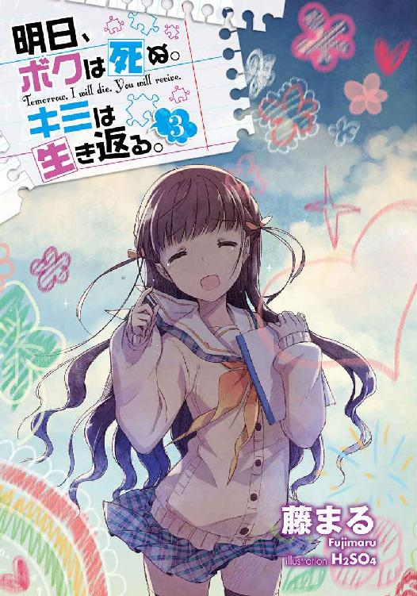
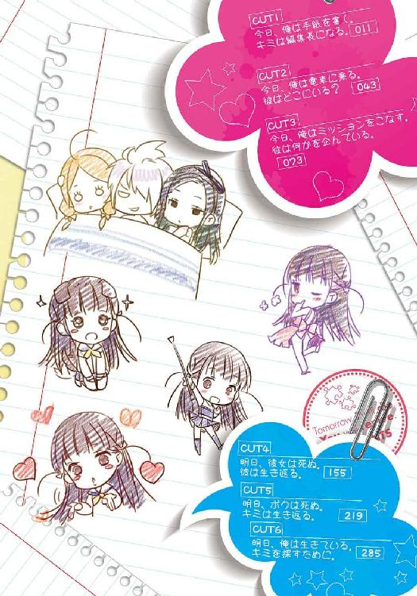
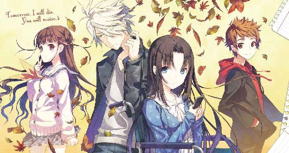
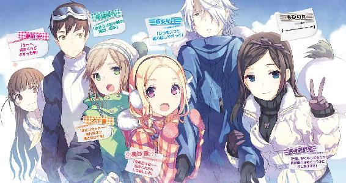
本書（電子版）に掲載されているコンテンツ（ソフトウェア／プログラム／データ／情報を含む）の著作権およびその他の権利は、すべて株式会社ＫＡＤＯＫＡＷＡおよび正当な権利を有する第三者に帰属しています。
法律の定めがある場合または権利者の明示的な承諾がある場合を除き、これらのコンテンツを複製・転載、改変・編集、翻案・翻訳、放送・出版、公衆送信（送信可能化を含む）・再配信、販売・頒布、貸与等に使用することはできません。
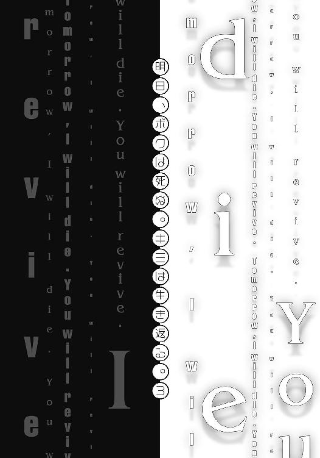
『おまえの寿命の残り全てで、彼女を生き返らせてやろうか？』
「は？」
粘りつく雨が垂れ落ちる、薄暗い早朝。
ぼやけた記憶に、べっとりと墨を垂らしたようにこびりつく黒いローブ。
その姿に似合わない透明な声が、ケータイの向こうから俺に告げた。
『おまえが死んで彼女が生き返るか。あるいは、このまま彼女が消えてなくなるか。好きな方を選びなよ』
「な────」
後に残るのは、ツーツーという無機質な音。返す言葉を思いつく前に通話は途切れる。
「寿命の全て......」
ぼたぼたと降る雨が絡まり、頭の中にこびりつく。
拭えない気持ち悪さが、膿のように膨れ上がる。
「そんな......」
この時、俺は気付いていたのかもしれない。
どれだけ目を背けても。どれだけ逃げ続けても。いつか来る未来には抗えない。
近い未来。俺は、この言葉の本当の意味と共に、残酷な真実を知ることになる。
夢前光が存在しなくなった世界で──。
季節は肌寒い十月の休日。
『怒らないと約束出来るなら、真実を教えよう』
「なんだいきなり」
起床と共に開いた日記の書き出しはこんな文章。さて、嫌な予感が全力疾走してきたぞ。
『どんな真実を知っても怒らないと、ここに誓うのだ』
「へいへいわかったよ。何をやらかしたんだ」
どうせまたドジ踏んだんだろうけど。
『絶対怒らない？』
「怒らないよ」
『ほんとにほんとに？』
「ほんとにほんとに」
『もし怒ったら、パソコンの検索履歴に「ミク 縞パン」があったことバラすからね』
「それバラしたら確実に怒るからな」
なんで知ってるんだ。いいから用件を言えっつーの。
『月曜だったかな。かすみちゃんから「週末、一緒に遊びに行こう」って誘われてたの。ごめん、言うの忘れてた』
「なんだ、そんなことかよ」
クラスメートのかすみちゃん。
小柄で巨乳で舌ったらずな、おさげっ子。どうやら遊びに行く約束をしていたらしい。
『それでね。日曜は外せない用事があるらしいから「じゃあ土曜の十一時に駅前集合ね！」て言っておいたんだ』
土曜。土曜って今日じゃんか。
なるほど。俺に断りなく、休日に予定を入れちゃったことを気にしてるのか。
『それで、ここからが本番なんだけど』
「ん？」
べつにそれくらい──と思ったのも束の間。どうやらここからが本番らしい。
『水曜の放課後にね、葉月屋に行ってパフェ食べてたの。そしたら美紗貴ちゃんから「週末、弟の服を買いたいから付き合ってください」って言われたんだ』
「ほぉ」
美紗貴ちゃん。
葉月屋という喫茶店でバイトしている年下少女。裏表の激しい性格であり、魅力抜群の太ももで男をたぶらかしていた魔性の女。この子からも遊びに誘われたのか。
「んで、それがどうした？」
疑問符を投げかけながら、日記の続きを読み進めると。
『日曜は外せない用事があるって言われたんだけど、光ちゃんてば、かすみちゃんと約束してたの忘れてて......。「じゃあ土曜の十一時に駅前集合ね！」て言っちゃったの』
「............ん？」
あ、通りすぎたはずの嫌な予感が、バックステップで全力疾走してきたぞ。
『つまりね。土曜の駅前十一時に、かすみちゃんと美紗貴ちゃんが並んで坂本くんを待つという凄いシチュエーションが出来あがっちゃったの。だから、その、えーと......』
「............」
『うんと、ようするに......』
............。
『頑張るんだぞ、少年♥』
「ふざけんじゃねぇええええええ!!」
天に向かって勢いよく叫び、両手を机に叩きつける。これはさすがにまずいだろ！
「やってくれたな、夢前光」
昨日の俺に向かってそう愚痴り、ため息ひとつ。窓の外に目をやり青い空を見つめる。そして、同時に記憶を呼び起こした。
もう半年程前になるのだろうか。
四月上旬のとある雨の日。俺の目の前でお亡くなりになった少女、夢前光。
偶然その場に居合わせた俺は、黒ローブを纏った謎の人物に「寿命の半分で、彼女をたすけてやろうか」と迫られた。それに応じたことで、夢前光は生き返るはずだったのだが。
なんと。夢前光は〝俺の体を一日置きに乗っ取る〟という型破りな方法で復活しやがったのだ。そんなわけで、以後、俺達は交換日記を交わすことでコンタクトをとっている。
ただ、問題なのは。
『でも大丈夫。「かすみちゃんのおっぱいと美紗貴ちゃんの太ももは、俺の中で共存出来るぜ！」とか言えば丸くおさまるよ。イイワケを考えてあげた光ちゃん、えらい！』
「えらくねぇ！ なんだその二股セクハラ発言は！」
続く日記に怒鳴りつけ、ひたすら呻く。相変わらずバカばっかり言いやがって。
言い訳の嵐は次のページにまで及んでおり『でも、ほんとは嬉しいんでしょ？』というコメントが添えられたイラスト（悪い顔をした俺が、全裸のかすみちゃんと美紗貴ちゃんをベッドにて抱き寄せている）に軽く舌打ちする。ダブルブッキングじゃなければな！
......とまぁ呆れつつも。正直、この程度なら予想の範囲内。よくあることでもある。だけど、最近この生活に新たな問題が追加されてしまったのだ。というのも──。
『ごめんね坂本くん。でも坂本くんは怒らないよね。というより、怒れない理由があるもんね』
「う......」
その文章から漂う嫌な予感に包まれながら、俺は続く文章を読み進める。
『だって坂本くん。普段はツンツンしてるくせに、本当は光ちゃんのこと............きゃーきゃーっ！ なでなでぎゅ～ってしたいだなんて！ 坂本くんのムッチュリスケベ！』
「ぐ......こいつ......」
テンションの高い日記に何も言えず、唇を噛む。理由は簡単。ここに書かれている通りなのだが、先日、不幸な偶然によって俺が夢前光に、こ、こ......恋......しているという超最高機密がバレてしまったからである。以来、そいつをネタにこうして毎日いじられているわけだ。
『どうしよっかなぁ～彼女になってあげよっかなぁ～。でも、やっぱり彼氏にするんなら、これくらいで怒るような人は嫌だなぁ～。坂本くんはどうなのかなぁ～（チラッ）』
「くそ、調子に乗りやがって」
その下には『許す・許さない・ツンデレ』という三択があり──なんだ最後の──ったく、ほんと調子いいんだから。いい加減ガツンと言ってやろうか。いい加減......いい加減。
「............」
逡巡の末に『許す』に○をつけてしまったことに、少しばかり落ちこんでしまう。べつに嫌われたくないからとかじゃないぞ。べつにそんなんじゃ......くそう。
「ほんと、いつもいつも振り回しやがって」
そして、長い日記を締めくくる文章を読み進める。
『きっと坂本くんが許してくれると信じて今日はおやすみ！ 光ちゃんのことばっかり考えてないで、ちゃんと一日頑張るんだぞ！』
そんな締めの言葉に「か、考えてねーし」とツンデレした後、勢いよくノートを閉じる。ああもう、ほんと振り回されっぱなしだ。惚れた方の負けって誰が言いだしたんだろう。
とまぁ、こんな具合に夢前光の尻に敷かれつつある俺でしたが。ひとつだけ、俺の想いがバレてよかったこともある。
「ふむ」
ノートを置いて、部屋をぐるりと見渡してみる。
ハンガーにかけられた制服。本棚に収められた漫画達。他にも、今までなら散らかし放題だったお菓子やフィギュア達が、丁寧に片付けられている。どうやら女の子だということを、少しは意識しているらしい。かわいいとこもあるじゃねーの。
ただ──。
「寿命の全部......か」
──おまえの寿命の残り全てで、彼女を生き返らせてやろうか？
数日前の早朝を思い出す。その言葉の意味はわからない。だけど、やはりこれは俺達を悩ませているあの事件に関わっているんだろう。
夢前光の時間が──三十分も短くなっているあの事件に。
あれから月日は流れているが、今のところ三十分より短くはなっていない。だけど、いつどうなるかわからない。夢前光も気にしていない風を装ってはいるが、心のどこかでは怯えてるだろう。だからこそ、黒ローブから電話があったことを伝えるべきかもしれないが......。
「言えないよなぁ」
曖昧な言葉なうえにロクな言葉でもなく意味不明。混乱は出来るだけ避けたいからな。
そんなわけで、夢前光には伝えられず、これといった解決策も見いだせず。どうすりゃいいかなんてわかるわけもない。結局、最後に辿り着く答えはいつもコレ。
「......とりあえず、朝飯でも食うか」
いわゆる先延ばし。少し自分が嫌になる。
という具合に、二心同体生活は平和なような危機のような。相変わらずぼんやりとしていたのだが。当然、だからといって夢前光がおとなしくしているはずもない。もちろんこの秋も、俺は更なる面倒に巻きこまれることになるのだ。
とりあえず翌々日。まずはこんな事件が起こった。
「記憶がないんだ」
「記憶がなくなる程彼女と熱い夜を過ごしたの？ これだから不良くんは！」
「記憶がないんだ......」
「もう、どうして先生を呼んでくれないの。これだから不良くんは」
「記憶が......ないんだ......」
「まったく。なんて恐い顔に産まれてきたの。これだから──」
「記憶が......ぐず......ひっく......」
「あ、秋月くん、どうしたの？ 真面目に聞くから泣きやんで」
週明けの月曜昼休み。俺は、保健室にて養護教諭の日雲を前にむせび泣いていた。原因はもちろんダブルブッキング事件。あの後、どうにか俺はキャンセルしようとあがいたのだが。
『美容院に行ってきました。べつに先輩の隣を歩くからではありませんよ』
というメールが美紗貴ちゃんより届き、さらにかすみちゃんからも、
『デート、楽しみだね。今日は何時まででも大丈夫だよ。何だったら朝まででも......』
なんてメールが届いた際には「やっぱ今度にしない？」などと言いだせるわけもなく。また、俺自身も巨乳＆美脚少女とのデートを逃したくないという、童貞特有の引き際の悪さを発揮してしまい。結局、俺は時間をずらしてどうにかするという綱渡り作戦に出てしまった。
『ごめん、ちょっと用事があるから今日は四時まででお願い。埋め合わせは今度するから』
とりあえず美紗貴ちゃんに送ったメールはこんな文章。さらにかすみちゃんにも、
『ごめん、ちょっと用事があるから五時からにしよう。その分、遅くまで遊ぼうね』
というメールを送った後、俺は美紗貴ちゃんと駅にて集合。電車で街まで出かけ、お昼を一緒したり弟さんの服を見繕ったり。そうこうする内に四時を迎えたので、駅に戻ってお別れする。そして五時からはかすみちゃんと──という完璧なプランだったはずなのだが。
甘かった。かすみちゃんは、なんていじらしい女の子なんだろう。
五時集合と言っておいたのに、健気な彼女はなんと一時間も早くその場所にいたのだ。おかげで作戦は見事に破綻。四時に駅前へ帰ってきた俺と美紗貴ちゃんを見たかすみちゃんは、
「え？ 昼に用事が出来たから、デートは五時からって......」
等と仰り、それを聞いた美紗貴ちゃんは、
「え？ 夕方に用事が出来たからデートは四時までって......」
等と呟き、俺の顔面はみるみる蒼白。
永遠とも思える虚無の数秒を経て、二人の少女は、
「「ああ」」
と声を揃えたかと思うと、俺の両腕を左右からガッチリホールド。そのまま「うふふ」だとか「えへへ」等と笑いつつ、笑顔の仮面を貼りつけたままカラオケの個室へと直行。そして、それぞれ足を振りあげたかと思うと──。
「坂本くん、マイク握って♪」
「先輩に歌って欲しい歌があるんです♪」
「え、な、何の歌......？」
「「悲鳴♥」」
という会話の直後に、俺の股間を強烈な蹴り×２が襲ったことにより意識がノックアウト。気が付いたらなぜか半裸になっていたというわけだ。
どうやら痛みは翌日にも残っていたらしく、今朝の日記には『坂本くん。タマタマが悲鳴をあげてるんだけど、何があったの？ まさか、かすみちゃん達を相手に一晩中......』等と書かれてあったので『その逆だよちくしょう！』と涙ながらに書き記しておいた。くそう。
そんなこんなで未だ引かない痛みに耐えかねた俺は、逃げるように保健室へやってきたというわけ。それに、教室だとかすみちゃんの目が怖いんだもん。
「男の子も大変だね。泣いてる秋月くんもかわいい。ねぇ、ムギュってしてもいい？」
「何言ってんだよ......」
そう返しながら、どうにか撫でようとしてくる日雲の全身を眺めてみる。
すらりとした長身に、ポニーテールの黒髪。はち切れそうな胸元と、ミニスカから伸びる太ももが輝いている。この完璧なスタイル。性格さえマトモなら言うことナシなのに、もったいない奴め。あと、年中無休のマフラーが夏休み中フル稼働してたのにはマジで驚いたわ。
等と、どうでもいい感想を抱いていたら。
「それはさておき秋月くん、最近調子はどうかな？」
「ん？ 調子？」
「春先に多重人格かもって泣いてたでしょ？ あれからどうなったのかな～って思って」
日雲はマグカップを手に取り、少し離れた位置にあるサーバーの元へ歩み寄りながら問いかけてきた。ああ。そんなこともあったっけ。
夢前光が俺の体に宿って間もない頃。いきなり一日置きに記憶がぶっ飛ぶもんだから、そう喚いていたのを思い出す。どうやら日雲は、まだ気にしてくれていたらしい。
「その件はもう大丈夫だよ。あれからは特に記憶喪失になったりしてないし」
「そう......それならいいんだ。ひと安心、だね」
適当にごまかすと、日雲はすんなり納得してくれた。
ただ、それをきっかけに俺はあることを思い出した。
「そうだ。先生に訊きたいことがあるんだった」
コーヒーを注ぐために背を向けている日雲が「ん？」と振り返ったので、以前から訊こうと思っていたことを訊ねる。たいしたことじゃないんだけど一応、ね。
「俺が多重人格とか騒いでた時にさ。先生、実例とか教えてくれたろ？」
「うん。そうだね。それがどうかしたの？」
「その時に『もうひとりの人格が表に出てる時間が長くなって、次第に主人格が乗っ取られた事例がある』──って言ってたじゃんか」
「............っ」
日雲が黙る。あれ、何だよ。まぁいいや。
「あの後、俺も多重人格について興味があったから調べてみたんだよ。でも、そんな事例はどこにも見つからなかったんだ。それっていつ、どこの話とか覚えてる？」
べつにこの問いかけに意味なんてない。世間話のついでに、この間ふと疑問に思ったことを訊ねてみただけ。それだけだったんだけど。
「..................」
なぜか日雲をフリーズさせてしまった。
「おーい、先生？」
「え、ああ、ごめん。えーと、事例......だよね」
珍しく慌てた様子の日雲は、不自然な笑顔とマグカップを携え、正面へと戻ってきた。
「えーと、ごめんね。あれは『そういった噂もある』程度の記述だったから、正確なデータはないの。だから秋月くんが期待してるような答えは出来ない、かな」
「なんだ。やっぱり都市伝説レベルなのか」
日雲の答えに、息を吐いて呆れたように応える。まぁそうだろうとは思ってたけどな。あの時は混乱のあまり信じちゃってたけど、普通に考えてやっぱりガセネタだよな。
「ごめん、だね。もしかして気にしてた？」
「べつに。ちょっと思い出したから訊いただけだよ」
思ったよりも申し訳なさそうな態度を示す日雲に、笑顔で返したその時だ。
「あ、鳴った」
昼休み終了の予鈴が鳴り響く。またかすみちゃんの無言に責められるのか......。
「秋月くん」
等と、どんよりと保健室を出て行こうとしていたら。
「ファイト、だね」
「あん？」
日雲が、心地のよい声でそう言ってきた。何の話だよ。
「ふふ、なんでも。それより髪、切らないの？」
「あんたがマフラーとったら考える」
「ふふ、いじわる。またおいでね」
とーぶん来ねーよ、と言い残し、引き戸を閉めることでシャットアウト。さて、そろそろかすみちゃん達への謝罪を真剣に考えないとな。土下座は覚悟しておくかね。
そんなことを考えながら、俺は冷たい空気の廊下を突き進んだ。
「もうしない」×５
「気を付ける」×８
「俺が悪かった」×11
「ごめんって」×19
「何でも言うこと聞くから」×１
「（涙目で）童貞だって夢を見るよ！ 間違いも犯すよ！」×１
以上、どうしようもなくなった男が藁にもすがる思いで放つ謝罪の言葉の内訳。その末に、どうにかかすみちゃんをなだめた俺は、美紗貴ちゃんとも同様の攻防を繰り返し、なんとかお許しを得ることに成功した。そんなわけで自宅に着いた頃にはヘトヘト。あー疲れた。
そうして休憩を挟み、どうにか持ち直した俺は、帰りに文房具屋で買った便箋を机の上に広げる。というのも、今日の日記にこんな文章が書かれていたからだ。
『例の文通友達の宮本さんからお手紙来てたよ。またまた勝手に読んじゃってごめんね！』
「宮本さんか」
まだ幼かった頃。とある事情により、溺れかけた俺をたすけてくれたカチューシャ少女こと宮本春美さん。それがキッカケで友達になった俺達は、離れ離れになった後も、文通友達となっていた。高校生になってから手紙が届くのは今回で二度目。元気にしてるんだろうか。
懐かしみながら、ノートに挟まっていたお手紙をあらためて読み上げる。
『秋月くん、お元気ですか。だいぶ涼しくなってきましたね。
なんだか最近、私の周りでは大学受験を気にする声が増えてきました。
秋月くんは進路をどう考えてるのかな？ 教えてくれると嬉しいです。
お返事ください。それと、約束も覚えてますからね』
「約束、ね」
読み終わった後、夢前光からのノートに視線を戻す。
『ちゃんとお返事書くんだぞ！ 特別に光ちゃんが採点してあげるから、書き終えたらノートに挟んでおいてね。童貞くんが失礼な手紙を書いていないか、チェックするのだ！』
「余計なお世話だ」
顔をしかめながら、調子のいい文章に悪態をつく。でもまぁ、ここまではいい。いつも通りのおふざけ日記。今更だ。だけど、問題なのはさらに続く文章だ。
『それにしてもアレだね。坂本くんの身の回りをしっかりチェックしてあげるとか、光ちゃんてば新妻みたい！ ほらほら坂本くん、頬のニヤけが隠せてないぞ～☆』
「くそ......いつまでもそのネタ引っぱりやがって」
どうも夢前光の中で、俺に好かれているというブームは過ぎ去らないらしい。
続きにも『どうしよっかなぁ～。彼女になってあげよっかなぁ～』とか『坂本くん程度じゃなぁ～。誠意が見えないとねぇ～』といった調子のいい言葉が並んでおり、しっかり坂本くんはいじられていた。隣には新妻をイメージしているんだろうか。エプロン姿の夢前光がウィンクしつつ『お風呂にする？ ごはんにする？ それともワサワサ？』と言っているイラストがあった。結局ワサワサって何なんだ。
「しかし夢前光が奥さんか」
魅惑的な単語に、頬が赤くなると同時に妄想が膨らむ。
もし、俺とあいつが新婚生活を送ったらどんな感じになるんだろう。やっぱり俺が尻に敷かれるんだろうか。でも、夢前光もああ見えて寂しがり屋な女の子だ。夜になったら、ちょっとはいじらしさが見えるんじゃないか。たとえば、風呂上がりにバスローブ姿で──。
──坂本くん、今日からもう、キミのこと童貞ってバカに出来ないね......。
──え、なんで？
──だって、キミの童貞は光ちゃんがもらっちゃうんだもん。
（※ここでバスローブがはらりと舞い落ちる。重要！）
──ゆ、夢前光っ！
──坂本くん、優しくしてね......。
「だ、ダメだって夢前光！ 子供なんて気が早いって！」
でもでも！ おまえが望むというのなら、男の子ひとりと女の子二人の幸せな家庭を今からでも......え!? 三人!? 三人ってことはつまり最低でも──うおおおお！
そんな具合に、フィーバーしながら倒れ伏し、床にキスをかますこと十分程。途中、部屋に入ってきた妹が「にいさん、木工ボンドを貸して............お、お邪魔したのです。まさか床オ......中だとは思わなかったのです。木工ボンドでネバネバにしないよう気を付けるのです......」等と言っていたけど、もう知らん。ああ、結婚かぁ......夢があるなぁ......。
──等と、圧倒的無駄な時間を経てようやく我に返る。便箋を前に、作業再開。
「で、なんて書こうかな」
本来なら普通にあっさり書くところなのだが、夢前光のことだ。
『女の子相手にこんなんじゃつまんない！ これだから童貞は！』
などとイチャモンをつけてくるだろう。かといって背伸びした手紙を書いたとしても、
『なんか無理してかっこつけてるのが見え見え。これだから童貞は』
といった具合に、何がなんでも俺をいじり倒すに決まっている。
「まぁいいや。普通に愛想よく書くか」
そして、目一杯の愛想を振り絞ること三十分。
『春美さんへ。
久しぶり。お手紙ありがとう、嬉しいよ。
大学かぁ。あんまり考えてなかったけど、そろそろ真剣に考えないとね。
出来れば春美さんと一緒がいいかな。二人で楽しいキャンパスライフを送りたいね。
それにはまず俺が勉強頑張らないとね。ははっ（笑）。
でも、キミのためなら勉強も頑張れるような気がするよ。うん、頑張る。
それじゃ、今日はこの辺で。またね』
「こんなもんかな」
女心にうるさい夢前光もこれなら納得してくれるだろう。うん、いい出来だ。
満足した俺は『出来たぞ。採点よろしく』と書き残し、ノートを閉じる。
「さって、宿題でもやるか」
そして俺は早くも手紙のことなど忘れ、普通の高校生活へ戻ることに。
......だけど。この時、どうやら俺はある失敗を犯していたらしいのだ。
翌々日。思わぬ形で悲劇は幕を開けた。
「あれ？」
迎えた翌々日の水曜日。異変は目に見える形となって現れる。
「散らかってる」
部屋を見渡してぽつりと零す。
床に脱ぎ捨てられた制服。放置されている漫画。食いかけのカップ麺に、つけっぱなしのテレビ。ここ最近、綺麗に整頓されていた部屋が、見事に懐かしい姿を見せてくれていた。
「なんだよ急に」
とりあえず日記を確認するため、ベッドから脱出してノートを開く。そして俺は──。
「な、なんじゃこりゃ......」
戦慄した。
ノートに挟まれていたのは、一昨日に俺が書いた例の手紙。
いや、俺が書いた手紙〝だった〟もの──と言った方がいいだろうか。
その手紙は、明らかに不機嫌を纏った赤ペンで修正されていたのだ。
『ねぇ、何なの〝春美さん〟て。そんな呼び方だった？ ふざけてるの？』
『二人で楽しいキャンパスライフって言い方、微妙すぎ』
『ははっ（笑）←これ何？ なんか腹立つんだけど』
『キミのためって......。そんな言い方するんだ』
『なによ......』
という具合である。何？ なんで俺、怒られてんの？
「相変わらず気分屋だな」
これが男友達なら（風城以外いないけど）何キレてんだよ──とつっかかるところなのだが。まぁここは一歩引いてやるか。あいつがよくわからんのはいつものことだしね。
というわけで、ノートを手紙ごとカバンに突っこんで、俺は学校へ。授業中に休み時間に登下校。ひたすらにうんうんと修正文を考え、気が付けば夜も更けた午後十一時。
『春美ちゃんへ。
久しぶり。お手紙ありがとう。嬉しいよ。
大学かぁ。あんまり考えてなかったけど、そろそろ真剣に考えないとね。
出来れば春美ちゃんと一緒がいいかな。二人だけの幸せなキャンパスライフを送りたいね。
それにはまず俺が勉強頑張らないとね。ははっ（爆笑）。
でも、俺は春美ちゃんと一緒にいたいから勉強も頑張れる。うん、頑張る。
それじゃ、今日はこの辺で。またね』
「出来た！ これでカンペキだろう」
夢前光から指摘を受けた箇所を修正。思うに、どうもあいつは愛想が足りていないことにキレているんだと思う。よく『坂本くんの日記には愛が足りないっ！』とか怒ってるし。
というわけで修正した手紙をノートに挟み、一件落着。これで夢前光の機嫌も直るだろう。
......と、期待していたんだけどね。
どうやら俺は、逆鱗を引きちぎってしまったらしい。翌々日。事件は更に加速した。
「うおお......」
やってきた金曜日。再び荒れ果てた部屋にて目覚めた俺は、ノートを見て思わず呻く。
『そうじゃないよ！ 坂本くんのアホ！ おマヌケ！ そんなだから童貞なんでしょ！』
「ええ、まだ怒ってんの......？」
さらに文句は続いており、
『光ちゃんの気持ちをここまで弄ぶなんて......っ。信じらんないありえない！ すごく嬉しかったのに！ 騙された！ ぷん！』
というお怒りの言葉が。
「何でこんなに怒ってんだよ......」
スッキリしないが、考えていてもしかたがない。床に散らばった制服をはたいて袖を通す。やれやれ、どうも面倒なことになっちまったな。だけど、考えてどうにかなるわけでもない。結局「まぁ後で考えればいいか」等と問題を先延ばしにすることに。
......この後、とんでもない事件が起こるとも知らずに。
「どこだ......どこにあるんだよぉ......ぐすっ」
時刻は午後十時。場所は浴室の隣の脱衣所。半泣きの俺は、入浴中の妹に見つからないように、こそこそと妹の脱ぎたて下着を漁っていた。原因？ もちろん夢前光です。どうやらあいつは相当にご立腹らしく、今朝、学校に着いた瞬間より夢前光の復讐が幕を開けたのだ。
提出用の宿題ノートに、十八禁ＳＭイラストが描かれてあったのはまだマシな方。机の中に萌え漫画が大量投入されていたり、体育館シューズにプリ●ュアがペイントされていたり。さらには教科書のカバーをＢＬ本に掛け替えていたらしく、
「坂本。教科書の八十三ページを読んでくれ」
「はい。『だ、だめだよ雪雄！ 男同士で抱き合うなんて......』『誰も見てないさ秋星。さぁ、キミの柔肌を僕の大草原に......』──ってなんじゃこら!?」
という大惨事も発生した。
家に帰ってからも事件は続き、母親宛に俺の名前で荷物が送られてきて「なんだ？」等と思いながら開封するのを傍で見ていたら、中から出てきたのは『兄♥妹。禁断の愛』とプリントされた、どこで売ってんのレベルなＴシャツであった。さらに同封されていたのは『お母様。禁断の愛をお許しください』と書かれた便箋。青ざめた母上と、あわあわしながら「ど、どういう意味なのです......何を求めてのアピールなのです......っ!?」とか「もしや、お父さんとお母さんへの禁断の宣言っ！」等とほざく雪瑚をなだめるのには苦労しましたよ。
そして現在。なんで俺が脱衣所で妹の脱ぎたて下着と戯れているのかというと、とんでもない危機が迫っていることが判明したからである。
先ほどパソコンを立ち上げた時に『ミサイル発射予定時刻：午前零時』というタイトルのメモ帳がデスクトップに貼っつけてあったので、何事かと思い確認してみると、
『ＢＬショタっ子、木下薫くん宛に自動送信メールを予約した。解除したければ、パスワードを入力せよ。パスワードは、妹ちゃんの下着にこっそり書いておいた』
という、アホアホ犯行予告が目に入ったのだ。
おいおい......と思いつつパソコンメールを開いてみると、うん、確かにあった。自動送信予約機能を使って、木下くん宛に作成された一通のメール。肝心の中身は──。
『いつになったら僕を不意打ちで襲ってくれるの？ 楽しみに待ってるのに。早く犯してよ』
である。
「これはいかん......これはいかんぞ......」
シャレにならん文章にガチで背筋を凍らせた俺は、なんとか削除しようと試みるも、管理者権限でパスワードがないと消せない仕様になっていることに気付き、うなだれる。
というわけで、しかたなく俺は雪瑚の下着を調べることに。
雪瑚がリビングでテレビを見ていたので、その間に部屋へと侵入してまずはタンスを漁る......が、そんなものは見つからず。
ならばとばかりに、洗濯物をとりいれたカゴをひっくり返すも見つからない。以上の結果より俺が辿り着いた結論は「今日履いているパンツに書かれているのか」というものであり、リビングへと舞い戻る。そして、ソファーの上にてミニスカート姿で膝を立てて座るという、お行儀の悪い雪瑚ちゃんの前にどっかりと座って、バレないように覗き見る。
どこだ......どこに書いてある......っ！
──と、一生懸命見つめ続けたのも束の間。
そばで新聞を広げていた父さんが「んんっ！」という具合に咳払いを加速させながら何かを訴え、雪瑚も赤面しながらスカートを押さえたので、やむなく中止（冷静に考えたら我が父上は、息子が娘のパンチラを必死の形相で見つめる凄い光景を目にしたんだな）。
「こうなったら雪瑚の脱ぎたてパンツを狙うしかねぇ......っ」
そんな決意をせざるを得なかった俺を誰が責められよう。結果、俺は雪瑚がお風呂に入ったタイミングを見計らい、こうして脱衣所に忍びこんだというわけだ。
「どこに書かれてるんだよ......」
そんなこんなを経て、ただ今現在。
俺は雪瑚の脱ぎたてパンツをひっくりかえしたり掲げたり。思いっきり顔を近づけて調べるも見つからない。くそう、雪瑚のパンツにすべてがかかっているのに！
だけど、頭だけは冷静だった。
「下着ってことは、パンツじゃなくてブラの可能性もあるのか......っ」
そう気付いた俺は、かわいらしいサイズのブラを手にとる。ええいどこだ。いったい──あ、あった！ ブラの内側に小さく文字列が！ やったぞ！ よし、早速メモしよう──ガチャ──早くメモらないと雪瑚が............え、ガチャ？
「もう、シャンプーが切れてるのです。ちゃんと補充しておいて欲しいので──」
「──────────」
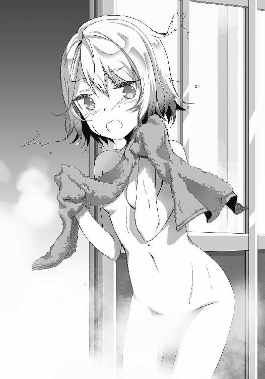
瞬間。無音の時が支配する。遅くなったが、ここで我が妹の雪瑚について紹介しよう。
今年の春に中学生となった雪瑚ちゃん。俺とは違って幼い体をしており、前下がりのストレートショートボブが特徴だ。少々アレな趣味をお持ちの貴腐人でもあるのだが、パッと見は非常にかわいらしく、しかめっ面なその顔も、見ようによってはモテそうである。
さて、そんな雪瑚の目にはただ今何が映っているのだろうか。
お風呂に入っていた彼女はもちろん全裸。すべすべの肌を滑る水滴は、いかにその体がみずみずしいのかを教えてくれる。小さくかわいいお尻から伸びる脚は、動き方を忘れたのだろうか。微動だにせず、直立不動だ。手にした小さいハンドタオルと湯気が、ギリギリ大事なところを隠してくれたのがせめてもの救いだろうか。そして、ぱっちりした瞳に映るのは実の兄。
左手にはパンツを。右手にはブラジャーを。
焦りのせいで「はぁはぁ」言いながら、そいつを顔に近づけて必死に見つめ──。
「違うんだ雪瑚。これには深い事情があるんだ」
「～～～～～～～～～～っ」
「聞いてくれ。俺はただ、おまえのパンツを調べたかっただけなんだ」
「～～～～～～～～～～～～～～～～っ」
「本当だ！ 脱ぎたてのその瞬間を狙わなければならない理由があったんだ！」
「～～～～～～～～～～～～～～～～～～～～っ」
「雪瑚！ どうしても俺にはおまえの脱ぎたてパンツを調べなければならない事情が──」
「さっさと出てけなのです童貞変態セクハラ兄貴──────────────ッッッ!!」
「あべふ──────っ!?」
腹に食らった強烈なタックル。勢いよく脱衣所から吹っ飛ばされた俺は、もんどりうつ。違うのに......俺はただ、おまえの下着を調べたかっただけなのに......しかし、兄として大事な何かを失ったかわりに、パスワードはどうにか見ることが出来た。たすかった。
そんなわけで部屋に戻った俺は『ボクは童貞です』というパスワードを打ちこむことで（何だよこのパスワード......）どうにかメール削除に成功。はぁもう、疲れた。
「まずいな。夢前光の奴、ガチで怒ってる」
あらためて一日を振り返りつつ、頭を抱える。くそう、どうすりゃいいんだよ。
夢前光に言われた通りに手紙を修正するのもアリかもしれん。しかし、この怒りっぷりからそれで終わると思えない。かと言って、適当に謝っても怒られるだろうし。
「......しょうがねぇか」
苦い顔で呟いた俺は、ノートを広げる。出来ればこれは書きたくなかったんだけどな。しかし、そんなことを言う余裕もない。
『怒らないでくれよ。おまえに怒られると辛いんだ。俺がおまえのことをどう思ってるか知ってるだろ？ なんで怒ってるのか教えてくれ。大好きなおまえにだけは嫌われたくないんだ』
「............」
自分で書いておいてなんだが、中々に赤面必至な文章だ。え、ほんとにこれでいくの？
なんだかんだで優しい夢前光の性格を考えると、ここまでストレートに書けば間違いなく許してくれると思う。だけど......う～ん。
散々悩んだあげく、結局ラストの『大好きな』だけ消しゴムをかけることに。この辺が童貞とか言われる所以なんだろうな。でも恥ずかしいんだもん。今だってすげぇ顔が熱いし。
「頼むぞ。機嫌直してくれよ」
そう祈りを捧げながら、その日は眠りに就くことに。
そして迎えた翌々日。綺麗に片付いた部屋を見て「おおっ」と思いながらノートを開く。目に入るのは、自信なさげな小さい文字だ。
『............宮本さんへの手紙が、好きな子に送る手紙みたいに見えた』
「............」
えっと......それが何？
あの手紙をそんな風に思われたのも意外だが、それとおまえの不機嫌に関係があるの？
「え────」
等と思いつつ、読み進めた次の行。
そいつを目にした瞬間、俺は言葉を失った。
『なんかわかんないけど、それがおもしろくなかったんだもん』
「............」
あれ？ えーっと......もしかして、これって。
思わず笑いがこみ上げる。もしかしてこれって、俺が宮本さんにデレデレしているのが夢前光にとって、おもしろくなかったってこと？ つまり、それって──。
「............」
やばい、ニヤける。
「ふふ......フフフ」
そして漏れ出る気持ち悪い笑み。
なぜかハイになってしまった俺は、ベッドへ勢いよくダイブ。そして、夢前光愛用の抱き枕に抱きつき「フハハハ！」と、魔王のような叫び声を放つこと約十分。途中、部屋に来た妹が「にいさん。昨日は一日中無視してごめんなさいなので............お、お邪魔したのです。まさか抱き枕相手に疑似セ......ス中だとは思わなかったのです。パンツぐらいで怒ってごめんなさいなのです......」とか言ってたけどもう知らん。俺の気分は最高潮だ。うっしゃあ！
「なんだよ、そんな理由で怒ってたのかよ」
笑顔と共に、昨日の俺に向かって頭を下げる。悪かったよ、夢前光。
謝り終えた後、俺はあらためて椅子に座りなおして大きくのけぞる。
窓の外から空を眺め、明け方の薄青色に癒される。ああ、なんか幸せだ。
そうやってのんびりしていたせいだろうか。ふと、こんな言葉が口をついて出た。
「......もう半年になるのか」
俺と夢前光の奇妙な出会いから、もう半年が経過した。そして同時に、再び思い出す。
とある朝に訪れた──奇妙な電話を。黒ローブと同じ声が発した、あの言葉を。
「............寿命の、全部」
三十分も減ってしまった夢前光の時間。そして、黒ローブの残した言葉の意味。
何を意味するのか。どんな未来が訪れるのか。今の俺にはわからない。だけど。
「やっぱり、このまま待つなんて嫌だよな」
俺は、夢前光をこのまま失うなんて絶対に嫌だ。それに──。
「約束したもんな。陽菜子さんと」
十五夜の夜。夢前光の母親、陽菜子さんに満月の下で誓った。
必ず夢前光を生き返らせると。必ずあなたに会いに行かせると。
「............うし」
なぜか突然、力がみなぎった。
あれからずっと、生き返るための手がかりを探してはいるが、見つかる気配なんてまったくない。それでも、やっぱりあきらめたくない。あきらめるなんて、絶対に無理だ。
何としてでも、俺は必ず夢前光を生き返らせてみせる。
「絶対に二人で、陽菜子さんに会いに行こうな」
きっと、何か方法がある。きっと、たすかる方法があるはず。
そう、儚い祈りをこめて──。
俺は、太陽が昇り始めた薄い空に拳を握った。
「ね、ねぇ、坂本くん。今から紅茶淹れてくるけど、その間に部屋を漁っちゃだめだからね」
「ああ、うん。もちろんだよ、かすみちゃん」
「ま、間違っても、机の上から二番目の引き出しは開けちゃだめだよ。絶対に」
「うん、わかった。絶対に開けない」
「開けちゃだめだからね......女の子の秘密が詰まってるから......」
「うん......」
「約束だからね。女の子の秘密......坂本くんが喜ぶ、秘密があるから......」
──バタン。
「............」
そんなに見て欲しいんですか!?
「えらいことになっちまった」
部屋を出ていったかすみちゃんを見送り、天を仰ぐ。
さて。本日、なんと俺はかすみちゃんの家に来ていた。
夢前光を生き返らせる覚悟をしてから一週間程。俺は、あらゆる方法で手がかりをかき集めていた。ネット検索、図書館漁り、街を練り歩いての黒ローブ探し。などなど。
で、今日も学校帰りに図書館にて本を漁っていたのだが。偶然、そこでかすみちゃんと鉢合わせしたのだ。最初は何気なく世間話をしていたんだけど。
「坂本くん。わたしの家、ここから近いんだ。お茶でも飲んでいかない？」
「え、いや、でも」
「遠慮しなくていいよ。坂本くんなら大歓迎だから」
「えーと、その」
「......こないだのダブルブッキングの件、もう反省してないんだ」
「!?」
という流れを経て、真田家に連行された。せっかくだし──と俺が折れた時に、彼女の右拳がぐっと握られていたのは夢だと思いたい。
そんなこんなで、こうして監き......くつろいでいるのだが、何分、初めての女子の部屋だ。芳しい雰囲気にドキドキしていないかというと嘘になるのだが、ただこの部屋──。
『男を騙す、十の秘訣』
『男を手玉にとる極秘テクニック』
『厳選！ 男をその気にさせる甘え方』
『初めてのＳＭ入門』
「......なんでこんな本があるんだ」
恐怖このうえない仕様である。机の上から二番目の引き出しには何が入ってるのやら。
そして、問題はさらにもうひとつ。
「失礼しま～す。こらぁ坂本くんっ。かすみの部屋を漁っちゃダメね」
げ、また来やがった。
「あ、漁ってないですよ......」
ふざけたスマイルで部屋に入ってきたその人に、本能的に渋い顔で答えてしまう。
そう。この人こそ噂（？）の女子大生、かすみちゃんのお姉さんである。
かすみちゃんより「お姉ちゃんがいる」とは聞いていたが、この人、妹が男を連れてきたのをいいことに、先ほどから何度も部屋にやってきては、やたらとちょっかいをかけてくるのだ。今だってベッドに腰かけていた俺の隣に座って──あ、ちょっと。なんでそんなに密着し──やめてやめて！ 顔近づけないで！ 俺、すぐ赤くなっちゃうんですから！
「ねぇねぇ、かすみちゃんとはどういう関係なの？ お姉ちゃんに教えて欲しいのね」
「た、ただのクラスメートですって......」
「ほんとに～？ お姉ちゃん知ってるよ。かすみちゃんがキミの盗撮写真で夜な夜な......あ、これ以上はまずいかも。てへっ☆」
この人......いや、それよりも。
呆れつつもお姉さんの全身を眺めながら、唾を飲む。いやはや......綺麗な人なんだろうとは思っていたけれど。正直、その人の美貌は俺の想像を遥かに上回っていた。
萌え袖と言えばわかりやすいだろうか。ぶかぶかセーターに見え隠れする手はとてもかわいらしく、ゆるい襟ぐりから覗く鎖骨の色気はハンパない。明るい髪はサラサラと輝いており、ネイルやピアスも凄くおしゃれだ。そして、忘れてはならない特徴がもうひとつ。
「んもう、素直じゃないのね。ほらほら、お姉ちゃんに話して欲しいな」
「う......」
ぐいっと寄せられた〝それ〟が、俺をさらに熱くする。
もう説明不要だとは思うが、さすがかすみちゃんの姉というべきだろうか。お姉さんはなんと、妹の上位互換とも言える〝超絶巨乳〟の持ち主だったのだ！
そして先ほどからその柔らかい感触がぐいぐいと俺の腕に押し付けられる。やめてやめて。童貞なんですちょろ月なんです。そろそろほんとにやばいから！
「お待たせ、坂も............ああっ！ お姉ちゃん何してるの!?」
とまぁ、持ち前の童貞力であわあわしていた俺をたすけてくれたのは、他ならぬかすみちゃんだ。どたどた駆けて来たかと思うと、顔を赤くしてお姉さんに怒鳴っている。
「いいじゃないべつに。坂本くんとはただのクラスメートなんでしょ？ でも、ただのクラスメートの体操服をくすねちゃうのはどうかと思うのね、かすみちゃん」
「なななな、何言ってるの!? し、信じらんない！ もう出てってよ！」
激昂するかすみちゃんは、ぽかぽかとお姉さんをどついている。しかしあれだな。姉妹並ぶと胸の破壊力がとんでもないな。そして、とんでもない発言が聞こえたのは気のせいかな。
等と思っていると、今度は二人でひそひそ話を始める。
「（まぁまぁかすみちゃん。差し入れなのね。連れて来たってことは、そういうことでしょ？）」
「（──っ!? な、何言ってるのお姉ちゃん！ いいよべつに！ 持ってるし！）」
「（使ったことないくせに......なんにせよ、いっぱい持ってて困ることはないよ）」
「（もう！ ほんとにいいから！）」
お姉さんが取り出した、小さな箱（？）のようなものを、押し合いへし合い。ああ、こんな狭いところで巨乳をぶつけ合ったら......等と思っていたら、予想通り。お姉さんに押される形で、かすみちゃんがバランスを崩してしまった。
「あ、危ない！」
「あふっ！」
そして、ベッドに座っていた俺の方に倒れてきたので、反射で抱きとめ──。
「いたた......ご、ごめんね坂本く────」
「ッ──────」
大変なことになった。
状況を説明すると、俺は普通に受け止めようとしたわけだ。しかし、予想以上に勢いがあったので、俺はそのまま後ろに倒れたわけよ。するとどういうわけか。うつぶせで倒れてきたかすみちゃんは、その自慢の胸で俺の顔面を押し潰してしまったではないか。これはもう、ハタから見たら大サービスしているようにしか見えないわけで──。
「ごご、ごめんなさい坂本くん！ 大丈夫!? もう、お姉ちゃんのバカ！ 危ないでしょ！」
いやいや。かすみさん。
とか言いつつ、なんで俺を押し潰したまま微動だにしないんすか。むしろなんでガッチリと俺の頭をホールドしてるんすか。さらに視界の隙間から見えるんすけど、なんで満面の笑みでお姉さん相手にサムズアップしてるんすか。あれ、お姉さんも同じポーズ？
とまぁ、落ち着かない時間が過ぎること、気付けば時刻は午後八時。
「晩ご飯、食べていくよね？」
「泊まってもいいんだよ？ 部屋が少ないから、わたしの部屋だけど」
「きっといいことがあると思うのに......」
という具合に、口を開く度に帰りづらい空気にしてくるかすみちゃんであったが、どうにか振り切って帰る決意をした俺は、玄関先で見送られていた。
「が、頑張ってね、坂本くん」
「へ？」
自転車を発進させようとしたその時。かすみちゃんはそんな言葉をかけてくれた。
「坂本くんが何をしてるのか、よく知らないけど......最近ずっと一生懸命だよね。図書室に通いつめたり、放課後、急いで家に帰ってたり......」
「......うん」
「昨日だって、休み時間もパソコン室で何かを調べてたよね。『お母さんのことを思えばこれしきの苦労！』とか言って......」
......あいつ。
「で、でも、さすがに黒いローブを羽織って、街中で『ぐへへ』とか言いながら不審者ごっこするのはやめた方がいいと思うよ？ おまわりさんに怒られてたの知ってるんだよ。『仲間と勘違いして話しかけてくるのを待ってるのだ！』って、あれはどういう意味だったの？」
......あいつ！
「その、とにかく、わたしじゃ力になれないだろうけど......応援してるから。坂本くんが頑張ってるところを見るの............大好きだから」
「うん。ありがと」
大好きだから。果たしてどういう意味で言ったのだろうか。わからないけど、それでも彼女の笑顔を見ていると力が湧いてくる。キミと知り合えて、本当によかった。
「かすみちゃん。じゃあまた、学校で」
「............」
ん、何？ そんな物欲しそうな顔して──。
「ギブアンドテイク......」
「......ああ」
手を伸ばし、彼女の頭をナデナデ。経緯はよくわからないけど、最近別れ際にこれをやる契約が、かすみちゃんと夢前光の間で結ばれたらしい。どうせあいつの気まぐれだろうけど。
目を細めて微笑む彼女は、まるで小動物のように愛らしく、嬉しそうだ。やれやれ。この「ギブ」のかわりに、何を「テイク」してもらってるんでしょうね。知りたいような怖いような。
「頑張らないとな。絶対に」
薄青い月と星が騒ぐ、いつもより眩しい蒼い夜空。
ゆらゆらと泳ぐように自転車を漕ぎながら、俺は小さく小さく、決意していた。
『光ちゃんてばすんごいこと思いついた！ 今日から天才と呼ばざるを得ないかもしれぬ！』
「はいはい、どうしたんだよ天才さん」
翌々日。その日の日記の一行目には、こんなことが書かれていた。
『寿命を取り戻す手がかり......それを発見するための、とんでもない方法を思いついたぞ！』
「ふぅん。天才的発見ねぇ」
対照的に、俺は冷めた態度でぼやく。黒ローブ姿で街をうろついていた女だからな。ハッキリ言ってアテにならん。パソコンで『黒ローブ ウィ●ペディア』とか調べてるアホだし。
等と考えながら、たいした期待もせずに続きを読み進めていたのだが──。
「............っ」
不覚にも言葉を失う。長いトンネルの奥に、ぽっかりと開いた白い光を見たような気分。
「この方法は──アリなんじゃないか？」
風城隆行。
現在、俺達の入れ替わり現象を知る数少ない仲間であり、夢前光の元クラスメート。勘違いしやすい性格だが、中々に知的。夢前光に片想いしており、俺の恋のライバルでもある。
『こちらから正体を明かす？』
放課後、俺はそんな男と電話していた。
「おうよ。ネットとか色んな手段を使ってさ、俺達の現状を発信しまくるんだよ」
今日の日記に書かれていた夢前光の提案。それは、こんなものだった。
『一日置きに入れ替わってる情報を、こっちからバラ撒けばいいんだよ！』
今まで俺達は手掛かりをあれこれ調べていたが、それとは逆の発想。つまり、俺達のことを世界に発信し、情報を握っているかもしれない人物に見つけてもらうという提案だった。
『そんな奴いるのか？』
「わからん。でも、いない証拠もねーだろ？」
風城の言う通り、入れ替わり現象について知っている奴が、俺達以外にいるのかと言われると微妙だ。だけど、俺達が知らないだけという可能性も多いにある。
『と言っても、どこまで明かすつもりなんだ？ 個人情報をバラ撒くわけにもいかんだろう』
「それなんだけどさ、とりあえず文章を考えたんだ。今、メール送ったから見てくれよ」
そして俺は、風城がメールを読むのを待つ。
『「死んだ人間を一日置きに二心同体で蘇らせる。そのために必要なものは？ 正解を知っている方は、以下のメールアドレスに回答を求む」......か。なるほど、事情を知らない人には日本語のおかしな文章。でも、わかる人にはわかるってことか』
「おう。これで『寿命の半分』とか答える奴がいたらビンゴだろ」
本当ならもっと詳しく情報を明かしたいところだが、何があるかわからんからね。とりあえず見つけてもらうために最低限必要な文章ってとこだ。
この発案を相当褒めて欲しいのだろうか。ノートには、
『やっぱり最後に頼りになるのは光ちゃんだね！ 坂本くん、ナデナデして！ 赤面しながらそっぽを向いてツンデレ風に！ 光ちゃんの好きな小説に出てくる秋星みたいに！』
等と書いてあり、その隣には、獣耳＋尻尾ふりふりでいかにも褒めて欲しそうな夢前光のイラストが。ほんと、調子のいい奴なんだから。
『うん、わかった。俺も協力するよ。で、何をすればいい？』
とか思っていたら、そんなことを訊かれた。おお、そうだ。ここからが本番なんだ。
「とりあえずアドレスは俺が用意するからさ。おまえはこの文章をあちこちに発信しまくって欲しいんだよ。思いつく限りのネットの媒体、全部にだ！」
『ああ、了解』
俺の高揚が伝わったのだろうか。風城も、少しわくわくしたようにそう応えてくれた。
そんな感じで男二人の会話を終え、俺達は早速行動に移る。
作戦用のフリーメールアドレスをゲットし、風城があちこちに情報を発信。とにかく数撃ちゃ当たる戦法だ。ＳＮＳに、動画投稿サイト。とにかく俺達は、知っている限りバラ撒いた。
「頼むぞ......うまくいってくれ......っ！」
そうこうするうちに、時間はどんどん過ぎていった。
反応はというと、ちらほらイタズラ回答が舞いこむぐらいで、基本的にはほぼシカト。だけど、ここであきらめるわけにはいかない。俺達は、ひたすらに情報を発信し続けた。
「ん......あ──」
そうして二週間程過ぎた頃だろうか。
とある日の早朝。午前四時二十九分。俺はパソコンの前で覚醒する。
少しだけ眠いこの感覚から察するに、どうやら夢前光は早起きして色々と調べものをしていたようだ。寝ぼすけのあいつが早起きしているとは、なんとも珍しい。
パソコンにはあいつなりに頑張った形跡が残されており、検索中のウィンドウには『入れ替わり 美少女』といったワードが。相変わらずこっち方面は的外れだな。
「あ」
そして俺は気付く。机の上に残された不恰好なおにぎり三つと、まだ湯気が消えない湯呑の存在に。その隣で開きっぱなしのノートに書かれていたのは、あいつからのメッセージ。
『おはよう、坂本くん。いつもわたしのためにありがとう。でも無理しないでね。このまま消えちゃうかもしれないのは嫌だけど、坂本くんが辛い顔する方がもっと嫌だよ？』
「............」
やべ、ちょっとうるってきたかも。だけど、それも一瞬。
『でへぇｗ どうどう今の？ 良妻をイメージしたんだけど、すっごいイイ女っぽくない？ さすが光ちゃん！ ちなみに、おにぎりにはひとつだけアタリがあるから当ててみてね！』
そんな言葉が、トキメキを一瞬でぶっ飛ばしてくれる。締まらねぇ奴め。
「うし、頑張ろう。あいつの期待に応えないとな」
おにぎりにかぶりつきながら、決意する。
後悔は頑張らなかったことへの罰。いつか誰かが言っていた小さな教訓。絶対、絶対に夢前光をたすけるんだ。たすけなくちゃいけないんだ。どんな手を使っ──。
「............」
......なんだこの生クリーム握りは。
『おい！ 起きろ、坂本！』
「なんだよ朝早くから......」
そして、さらに日は過ぎていき。冬も近づいた凍える朝のことだった。
惰眠をむさぼっていた俺は、鳴り響く着信音に目を覚まし、風城の声を聞いていた。
『昨日、ついに返事があったぞ！ メールを見てみろ！』
「──────っ」
一気に言葉を失う。まさか。
正直、無理だと思っていた。手掛かりなんて見つからないと。情報を知っている人なんているわけがないと。でも。まさか。ついに。
確認するために、急いでパソコンを立ち上げる。一秒でも時間がもどかしい。焦る気持ちでマウスを叩き、メール画面を開く。
そこにあったのは、見知らぬアドレスからの二通のメール。
息が止まりそうな緊張の中、俺はひとつ目のメールを開いた。書かれていたのは短いひと言。だけど、俺達が探してやまなかった正解の言葉──。
『寿命の半分。だよな？』
「──────っし！」
思わず声が溢れ出た。思わず拳を握った。
ようやくだ。ついに見つけた。まさか本当に、二心同体現象を知っている奴がいたなんて。
『昨日、光から俺も連絡を受けたんだ。その後、約束通りに〝あの文章〟を光に送らせたぞ』
「ああ、それでいい。サンキューな！」
あの文章。もしも返事が帰ってきたら、返信しようと用意していたメール文章のことだ。
『俺は一日置きに死んだ奴と入れ替わっていて、それに関して情報を求めている』
夢前光がこのメールを送ったのが昨日の午後五時十一分。そして、二通目の受信メール時間が午後五時二十分。つまり、この二通目のメールにこいつの正体が書かれているということだ。
「............っ」
唾を飲みこみ、マウスをクリック。開かれた画面に映るのは──。
『俺もだ！ 俺も一日置きに入れ替わってる！ まさか仲間がいたなんて信じらんねぇ！』
「よぉしっ！」
やった......っ！ 俺達以外に同じ存在が本当にいたなんて！
ガッツポーズと共に、ノートを開く。チェックするのは、昨日の俺からのメッセージだ。
『どーだどーだ！ 光ちゃんはやはり大正義！ かわいいは正義！ イコール光ちゃんは超かわいいのだ！ 見たか見たか！』
「ああ、おまえは最高にかわいいぜ！」
思わず叫ぶと、ケータイから『は!? 何言ってんだおまえ!?』という声が。風城に言ったんじゃねーけどもういいや！ 風城もかわいいよ！ やばい！ テンションがおかしい！
とりあえず落ち着くために、ケータイを切って顔を洗うことに。
パンを食いながら部屋へと戻り、再びメールをチェック。どうやら昨日交換したメールはここまでのようだ。夢前光が送った最後のメールが『ちょっと待ってて。色々お話したいけど、明日のわたしに相談しなきゃ。またこっちからメールする！』となっていた。それでいい。ここからは慎重に進めないといけないからな。まだ味方と決まったわけじゃないし、夢前光がたすかる情報を手に入れたわけでもないんだから。
落ち着いた俺は、ようやくノートの続きを読み進める。そこには──まぁ、そうだよな──夢前光からのお願いが書かれてあった。うん、俺も同じことを考えてたよ。
『坂本くん、やっと手掛かり見つけたね。んで、これからどうするかなんだけど......。わたしはこの人に会いたい。会って色々お話したい。どんな人かもわからないし、わたしがたすかるかどうかもわからないけど、でも、きっと前に進める何かが見つかると思うの。見つけなきゃいけないの。お母さんや風城くん、そして坂本くんと──わたしのために』
「もちろんだ。俺もそのつもりだぜ」
このメールの送り主。文面から察するに、たぶん男だろう。詳しいことがまったくわからないけど、それでもこいつに会いに行かないと。
再びケータイを手にした俺は、早朝二度目の電話を風城に繋ぐ。風城も俺と同じ考えだったようで、出来るだけこちらの情報を漏らさずに会う約束を取り付けろ、と言っていた。
というわけで、相談を終えた俺は、あらためて謎の男へのメールを作成。
『待たせてすまない。昨日の俺から、事情は聞いている。今回俺達が仲間を探していたのには理由がある。というのも、実は入れ替わり時間に問題が発生しているんだ。具体的に言うと、入れ替わり時間が三十分ズレて、俺に宿っている奴の時間が短くなっている。そこで提案なんだが、一度実際に会えないだろうか。会って話をして、お互いのことや解決策を話し合いたいんだよ。以上、よろしく頼む』
「頼むぞ......うまくいってくれ......っ」
返信を待つも、こんな早朝じゃ向こうも寝てるだろうということに気付き、未練を残しながらも二度寝することに。が、当然眠れるわけもなく、そのまま日が昇るのを待って学校へ。
授業中も休み時間も、気になって気になって何度も新着メールをケータイから確認するが、返事はない。結局、その日は返事が来ずじまいだった。
「向こうの時間軸はどうなってるんだろ」
俺と夢前光は、一日置きに早朝を境に入れ替わる。
メールの文面から察するに、向こうも一日置きに入れ替わるようだが、時間までは不明だ。昨日メールが届いていたことから、このメールを送ってくれた奴は夢前光と同じ時間軸なんだろう。だったら、今頃そいつの相方は何やってるんだろう。明日の自分に相談しようと待機しているんだろうか。だとすると、その相方が送るメールは明日の俺に届いて俺が相方に.........。
............。
おそろしくややこしくなってきたので、寝ることに。さすがに今日は返事ねーだろ。
そんなわけで、ノートに『今日は返事がなかった。おまえの日じゃないと返事が来ないみたいだな。風城と相談してうまくやるんだ』と書き残し、眠ることに。
そうしてもどかしいままに迎えた翌々日の日曜日。
早朝に設定された目覚ましで起床した俺は「今すぐ読め！」とばかりに枕元に置いてあったノートを開き、夢前光からのメッセージを確認。そこには──。
『やったぞ坂本くん！ 光ちゃんのセクシー交渉術で、会う約束を取り付けてやったぞ！ 今日のお昼過ぎ、神奈川まで行ってくるのだ！ 三浦のスイカをおみやげによろしく！』
「この時期にスイカはねーだろ」
──ってまぁ、そんなツッコミはどうでもいい。それよりも、どうやら夢前光はうまくやったようだ。いつになくやるじゃねぇか！
『しかも坂本くん！ どうもあちらさん側はすんごい情報を握ってるっぽいよ！ もしかしたら、光ちゃんてば本当にたすかるのかも！』
「おいおい......期待させんなよ......」
ふるふると唇が震えるのを必死に抑える。ええい我がパソコンよ、早く起動しろ！ メールを確認させるんだ！
開いたメールボックスには、おお......たくさんの受信メールがあるじゃねぇか。どうやら、何度もメール交換しながら約束を取り付けたらしい。よくやったぜ、夢前光。
昂ぶる気持ちをそのままに、俺は届いていたメールを無造作に開いていく。
俺達の未来を変えてくれる。そんな希望を求めて──。
『やっぱりそっちもか。こっちも同じだ。どんどん時間が減って困ってたんだよ。だけど、その様子だとどうやら「生き返る方法」については知らないみたいだな』
『よっしゃ、いいぜ！ 直接会おう。そこで全部話し合おうじゃんか。ただ、悪いんだけど神奈川まで来てくれ。ワケあってこっちは遠出出来ないんだ』
『楽しみにしてるぜ。ま、仲良くやろうな。誰だか知らねーけど（笑）』
『ちなみに俺の名前は「隼人」だ。よろしくな！』
時計の針が午後二時を指す頃。
客の少ない電車に揺られ、ノートをぱらり。そいつを見ながら、俺はあらためて頭を整理していた。どうやら昨日、夢前光は風城を自宅に呼んだ後、メールだけでやりとりをしたようだ。
『メールでもっといろいろ話したかったんだけどね。風城くんが、まだ個人情報は明かすなって──会ってからの方がいいって言われたの』
うん、それでいい。何があるかわからんからな。
『んで、直接会おうって話になったの。向こうは、いますぐ会おうって言ってくれたんだけどね。またまた風城くんが、光の日はダメだーとか言いだして......』
不満そうな文字列に苦笑しつつ、風城のナイスフォローに心の中で拍手を送る。
『でもね。向こうさんも、今日がいいって譲らなかったの。だけど、風城くんが何が何でも譲るなって言うから......そしたら、向こうが折れてくれたの。悪いことしちゃったかなぁ』
いつもワガママなくせに、変なとこだけ気を遣いやがって。ただ、この情報からわかるのは、どうも向こうさんも〝今日の向こうさん〟に会わせることに抵抗があったようだな。
つまり、時間軸でいうと、
『夢前光×隼人くん』
『俺×隼人くんの相方』
となっており、隼人くんは、隼人くんの相方＝Ａと会わせることを渋っていたと。というより、隼人くんが直接話したかったのかな。出来ることなら、俺が隼人くんと話せれば一番だ。だけど、時間軸的に無理っぽい。俺の時間軸に隼人くんから返信がない以上、俺の時間軸はＡさんってことだろうし。Ａさんはメールに一切関わらず、何やってるんだろうか。
日記の続きには、どうもその件に関して夢前光は文句があるらしく、
『風城くんてちょっと過保護だよね。あんまりしつこいから「うるさいなぁ」って言っちゃったらちょっと凹んでた。でも、ほんとに口うるさいんだもん！』
とのお言葉が。ちゃんと謝っとけよ。愛情の裏返しなんだから。
『それでね。向こうさんは「念のためにひとりで会いに来い」って言いだしたの。そしたら、またまたまた風城くんが「俺もついて行く」とか言いだして。あんまりしつこいから「そこまでしなくていい！」って怒っておいたよ！ 信用なさすぎだよね！ ぷんぷん！』
風城......そりゃまぁ不安だよなぁ。
片や何するかわからんハチャメチャガール。片やコミュニケーション不全のなんちゃってヤンキー。ぶっちゃけ、さわやかイケメンの風城が会いに行くのが一番なんだけどね。
『そんな感じで会う約束が出来たの。「ケータイのアドレス教えるから、待ち合わせ場所に着いたらメールくれ。明日の俺にはちゃんと言っておくから」だって。とゆーわけで坂本くん、頑張るんだぞ！ 恐い顔でびびらせちゃダメだかんね。坂本くんは笑えばそれなりに隠れイケメンなんだから自信もって！』
「そう言われてもねぇ......」
正直、俺は気乗りしていない。初対面の人と話すの苦手なんだもん。そもそも人類と話すのが下手なのに。
等と憂鬱になりながらも、あらためて待ち合わせ場所を確認。
神奈川県の海辺のとある駅。それが、ただ今向かっている場所であり、こいつらの住んでいるところというわけだ。近くはないけど、行けない距離でもない。これに関しては幸いだったぜ。それにしても、ワケあって遠出出来ないとか書いてあったけどどういう意味だろ。
まぁとにかく、なんやかんやあったけど会う約束は取り付けた。さらに、向こうは生き返る方法について何か知っている様子ときたもんだ。夢前光のために、しっかり聞きださないと。
『ただね、気になることがあるの』
だけど。続く日記に書かれた、不安そうな文章にしかめっ面をしてしまう。
うん、問題はそこだよな。
向こうさんから届いていたメールのひとつ。そこに、気になる文章があったのだ。
『ただねぇ......。俺の相方、ちょっとひねくれてんだよなー。悪い奴じゃないんだけどね。ちなみに、明日の俺は「千秋」って名前だから。仲良くしてやってくれな！』
千秋。
メールを返してくれてる隼人くんいわく、俺が今から会う人物はひねくれているらしい。
やだなぁ......ただでさえ人と話すの苦手なのに。そもそもこいつら何歳なんだろ。それに、どっちが本体でどっちが寄生してるんだろ。俺達と違って、違う年齢の二人が二心同体してる可能性もあるんだよな。あー......それぐらい聞いとくべきだったかな。
そしてさらに。隼人くんが送ったメールに、気になる文章はもうひとつあった。それは、
『期待してるからな』
というもの。期待？ 何を？ うーん、わからん。
夢前光も、人付き合いの下手な俺を会いに行かせることに不安を感じたのだろうか。
『いい？ 第一印象が大事だからね。坂本くんは恐い顔という、最強の武器を持ってるんだから。怖い人と思わせておいて「はじめまして～ん♪ 坂本秋月だぴょん♥」みたいな挨拶をすれば、ギャップで絶対ウケルから！ 今までもそうやって知り合い増やしてきたもん！』
そんなメッセージが残されていた。さすがにぴょんはねぇ。俺だって、初対面の強面ヤンキーが「ぴょん♥」とか言いだしたら、千の理由をつけて逃げ出すわ。あと、今までこんな方法で知り合い増やしてたのかこいつ......。
「......まぁいい。見ててくれよ、夢前光」
そう言いながら、俺は夢前光が残してくれた、もうひとつの気遣いを握りしめる。
無事と成功が祈られた、夢前光お手製の小さなお守り。『坂本番長』と刺繍されたそいつを手に、強く強く祈る。さぁ、あと三駅で到着だ。絶対に成功させるぜ。
そんな決意を胸に、窓から見える白い海を見つめ続けた。
「着いたぜ......」
一時間程の電車の旅を終えた俺は、人気の少ない海の見える駅に到着した。
都会でもなく、かといって田舎とも言えない半端な感じ。見知らぬ土地がもたらす高揚感を抱きながら、とりあえずホームを出る。さぁて、ここからが本番だぜ。
「駅に着いたらメール送れって言ってたよな」
彼らのケータイアドレスに、事前に用意していた文章を打ちこむ。
『今日会う約束をしていた坂本です。駅に着きました。どこにいますか？』
「送信！」
小さく叫びつつ、メールを送信。ああ、ドキドキする。大丈夫かなぁ......恐い人だったら嫌だなぁ......俺が言うのもなんだけど。
緊張のせいか、昔の思い出が脳内を支配する。誰にも話していないのだが、実は過去に一度だけ友達欲しさにメル友サイトを利用したことがあるのだ。そこで仲良くなった女の子と楽しいメール交換をしていたのだが、ある日「顔見せて欲しいな～」という言葉に、つい「まぁこんだけ仲良くなったんだし、この子凄くいい子だから大丈夫だろう。俺にはわかる」という謎の根拠で（なんだよ、わかるって......）精一杯の笑顔な写真を添付した瞬間、受信拒否をされたことがある。何で今になって思い出すんだか。いかん、帰りたくなってきた。
等と、うっすら浮かぶ涙を堪えていたら──。
「きたっ！」
ケータイの振動がメールの着信を教えてくれる。
心臓の音が鳴り響く、張り詰めた空間。勇気を振り絞ってメールを開くと──。
『待ってたよ。紺色の制服に赤のネクタイ、髪は茶色。白のスポーツバッグを背負った男子高校生だ。南口の、タクシー乗り場の近くにいるから見つけてくれ』
「............ふぅ」
なぜかわからんが、変なため息が待ちわびたように漏れ出た。
高校生。どうやら隼人くん＆千秋くんの、少なくとも片方とは年が近いみたいだ。日曜に制服でスポーツバッグってことは部活でもしてるのかな。
ケータイをしまい、きょろきょろとあたりを見回す。紺の制服だっけか？ そして──。
（いた！）
俺は見つける。タクシー乗り場の近くで、ケータイをいじっている男子高校生を。紺の制服に、茶髪で白のスポーツバッグ。間違いない。あいつが千秋くんだ。
ごくり──と喉を鳴らし、今日何度目かわからない深呼吸を繰り返す。
少しチャラそうだけど、高校生だしあれくらい普通か。あくまで外見を見る限りは、優しそうな顔立ちだ。きっとそこそこモテるだろうに。うらやましいねぇ。
「うし、行くか」
何度もシミュレーションしてきた笑顔とセリフを脳内で再生しつつ、足を進める──が、気合いを削ぐようなタイミングでさらに千秋くんからメールが届いた。え、何？
『件名：それと、念のために合言葉を言ってくれ』
「ああ、なるほど」
確かにその方が確実だよな。で、俺は何を言えばいいんだ？ 本文はっと。
『合言葉は「キミ、かわいいね。タイプだよ」でよろしく』
「..............................」
は？
え......な、何言ってんのこいつ？ 合言葉でしょ？ か、かわいい？
「............」
まぁ、こんなあり得ない言葉なら間違えようがないけど、でも......まぁいいか。
隼人くんの言っていた「ひねくれている」という言葉を思い出しつつ、でもこの程度なら──と、自分を励ましながら再び歩を進める。ビビるな！ 勇気出せ！
そして、ついに俺は彼のそばに辿り着いた。
「あ、あのっ！」
「......はい？」
若干声が裏返ってしまったことを恥じながらも、勇気を出して千秋くんに声をかける。
いきなり身長百八十オーバーの強面ヤンキーに声をかけられたせいだろうか。彼は怪訝な様子でこちらを向いた。さぁ言うぞ。勇気を出して──せーのっ！
「キ、キミ、かわいいね！ タイプだよ！ あはは！」
「............は？」
............。
......あれ。な、なんでそんなドン引きしてんの？
え？ なんで震えながら真っ青な顔に──え、あれ？ え？
等と混乱していたら、少し離れた場所で電話をしていた女子高生が突撃してきた。
「ちょっとあんた！ ウチの彼氏に何言ってんの!? そういう趣味マジキモいし！」
へ!? しゅ、趣味？ え──。
「いや、お、俺はただ、合言葉を──」
「はぁ!? 何言ってんの、意味わかんない！ 行こ、テツくん！ こいつヤバイって！」
困惑する俺をよそに、女子高生は一気にまくし立てる。そして、真っ青な顔で震える千秋くんを引っぱって行き──いやいや、待てって！
「おい待てよ！ なんで逃げるんだよ！」
「ちょ──テツくんに触んな！ 何なのアンタ!?」
いやいや！ だって俺は、言われた通りに合言葉を言っただけなのに！
そんな感じに混乱したのがいけなかったのだろうか。俺はつい、勢いで言ってしまった。
「待てよ！ 俺はずっとキミに会いたかったんだ！ どれだけキミを求めてたと思ってる！ とりあえず話をしよう！ その──優しくするから!! だから、二人きりで──はぐッ!?」
次の瞬間。震える千秋くんの目に涙が浮かんできたその瞬間。
彼女さんの正拳突きが、俺の顔面にクリーンヒット。そして浴びせられるのは。
「バカじゃないの変態!! マジキモいし！ 死ね！ 二度と視界に入るな！」
そんな暴言を残し、彼女は恐怖でへたれた千秋くんを引きずりながらどこかへ行ってしまった。残されるのは、ぽかんとする俺と、完全に不審者を見る目で見つめる人々......。
え、ちょ......これ、一体──。
「まさか本当にやるとは。その滑稽な姿、とても愉快でしたよ」
「────はひッ!?」
突如、背後より凛とした声が響く。
冷たく、でも、はっきりと輪郭を持った綺麗な声。
無意識に振り返る。まさか──という想いを確信しながら。
『ただねぇ......。俺の相方、ちょっとひねくれてんだよなー』
思い出すのは隼人くんの言葉。次の瞬間、俺はその言葉の意味を完全に理解した。
「はじめまして坂本さん。お会いすると約束していた、月村千秋です」
「え────────」
完全に意表を突かれた。
右耳にだけ装着されたイヤホン。赤いチェック模様が綺麗な車椅子。
だけど、何よりも心を奪われたのは──。
「キミが..................千秋............さん？」
冷たい秋風を浴びる車椅子。その上で、まっすぐな髪がさらさらと揺れる。
冷めきった声と凍てついた深い瞳。ひと目で心を奪われる、その美しさ。
とてつもない美少女が、そこにいた。
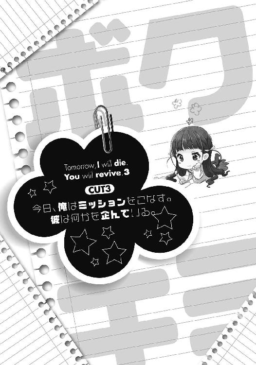
駅から少し歩いたところにある市民図書館。
そこに隣接する談話室。その一角に、いい感じに設置されたテーブルと椅子。人気の少なさのせいだろうか。寂れた空気が漂うその場所にて、現在俺達はド沈黙していた。
先ほど。
衝撃的なイベントを経て、ついに出会うことが出来た俺達二人。
「何をわけわからんイタズラかましてんだ」と怒鳴りたかったのだが、突如訪れたあらゆる驚愕がそんなものを軽々と吹き飛ばし、彼女の口から放たれた「ここはうるさいので、場所を移しましょう」という切り替え上手な言葉に従い、出発したというわけだ。
途中、せっかくなので会話をしようと声をかけてみるも、
「場所を移してからにしてもらえますか。車椅子で動きながらは話しにくいので」
氷の声で一刀両断。じゃあ車椅子を押してやろうかと思うも、
「お気遣いは結構です」
トドメがグサリ。なんでこんなに不機嫌なんだよ。
そんなわけで気まずい無言を味わいながらも、どうにか到着。彼女が滑り止めのロックをかけたのを確認してから、向かいに腰かける。さて、ここからどうすればいいのやら。おもしろいことでも言えばいいんだろうか。そういうのは明日の俺が得意そうなんだけどね。
等としょうもないことを考えていた時だ。
「では、証拠をお願いします」
「へ？」
「証拠です。そう聞いています」
「あ、ああ。そっか」
いきなり放たれた、無感情な台詞。微動だにせず、まっすぐにこちらを見据える少女は、無機質にそう告げた。そういや夢前光の日記にもそんなこと書いてたっけ。
「これ......しかなかったんだ」
白く光を反射するテーブルに〝一冊目の交換日記〟を置く。
「拝見します」
細すぎる指がノートを掬うのを見つめながら、俺はあることを思い出していた。
『とりあえず持ち物はひとつだけ。入れ替わりを証明出来る何か！ これだけ頼むぜ！』
昨日、隼人くんから届いていたメールのひとつに、こんなものがあった。嘘をついていないか確認するために、まずは証拠を提示させる。まぁ至って普通の提案だ。
ただ問題だったのは、いざ探してみると何も思い当たらないのだ。夢前光が生きていた頃を知る人ならともかく、全く知らない人に信じさせるとなるとなかなか難しい。結局、考え抜いた末に俺が用意したのは、最後まで書き終わったことで今はもう使っていない、かつて使用していた一冊目の交換日記だ。これも証拠になるかと言われたら微妙なんだけどね。
「交換日記、ですか」
「ああ。左ページが俺。右ページがもうひとりの俺──夢前光の書いた日記だ」
「なるほど。こういう方法で連絡をとっているのですね」
「他に方法あるか？」
彼女は無感情な瞳のまま、上着のポケットからそれを取り出す。そこには、イヤホンのつけられたボイスレコーダーが。おお、そういう手もあるな。
「しばしお待ちください」
短くそう言い、少女は日記を読みはじめる。
うう......覚悟してたけど、恥ずかしいなぁ......。
他に方法がなかったとはいえ、交換日記を人に読ませるなんて。だってそのノート、童貞とかヘタレとか、アホアホな単語が溢れに溢れているんだもん。しかも、ラスト付近では夢前光の死因が腐女子オチというトンデモ展開で「ねーよ」と風城を呆れさせた一冊だし。
そんな理由にてページをめくられる度に嫌な汗をかいてしまうので、気を紛らわすために少女の全体を眺めてみることに。
歳は──たぶん近そうだな。手触りの良さそうな髪に、華奢な体。大人っぽい服から覗くのは、折れそうな程に細い指。だけど、やっぱり一番に目を引くのはその顔だ。
（えんらい美人が出てきたな......）
長いまつ毛に凍てつく瞳。笑うところが想像出来ない薄めの唇は、ぞくっとする。
かすみちゃんや美紗貴ちゃん。あと、夢前光。かわいい女の子には心当たりがあるが、こんなに綺麗な子はそうそういないだろう。それに、なんか女王様って感じで一部に需要がありそうだし。うし、今日からおまえのあだ名は女王様だ。言ったらぶち殺されそうだけど。
等とふざけた妄想を繰り広げていたら、不意に深い瞳がこちらを向く。
「この日記を読む限り、もうひとりのあなたは女性のようですね」
「ああ、夢前光のことか。俺と同じ、高校二年生の女の子だよ」
「ということは、あなたが本体ということかしら」
本体？ この体の本体って意味かな。
「そうだ。今年の四月上旬に夢前光は死んだ。その時に、俺──坂本秋月の体に、夢前光の魂が乗り移ったんだ。以後、一日置きに入れ替わっている。そういう解釈でいいぜ」
「......あなた達のことについて、もっと詳しく教えてもらえるかしら」
事務的に喋る彼女に、俺は「お、おう」と答え、少し緊張しながら解説を続ける。
四月の雨の日、俺の目の前で夢前光がアホな理由で死んだこと。そこに黒ローブの謎の人物が現れて、寿命の半分を差しだしたこと。その結果、夢前光の魂が俺の体に宿ったこと。早朝の四時五十九分を境に入れ替わること。ドタバタと平和に過ごしていたこと。そして。
「ある日、夢前光から俺に入れ替わる時間が五分......今では三十分も早くなったんだ」
「......あなた達もですか」
も。それはつまり。
「まさか本当に私達以外にもいたなんて......」
そう言って千秋さんはノートを閉じ、机の上に丁寧に置く。「愛想笑い？ 何それ？」そんなレベルで冷たく俺を見据える彼女は、無機質な声でこう続けた。
「自己紹介します。私の名前は月村千秋。今から五ヶ月程前の五月に、あなた達と同じように入れ替わり現象の当事者となりました」
五月。夢前光が死んだのが四月八日。俺達よりひと月程後輩ってことか。
「始まりは、私の幼馴染──日向隼人さんが亡くなったことからです」
長いまつ毛を伏せ、彼女はそう明かす。千秋さんが本体で、隼人くんが千秋さんの体を一日置きに乗っ取っているってことか。性別から考えても嘘ではなさそうだ。
「なんで死んだの？」
「..................」
あ、やべ。無粋だったか。
なんの気なしに訊いてみたのだが、無言の圧でフタをされた俺は追及を捨て去ることに。
「その時に、私の元にも黒ずくめの人物が現れました。そしてこう言われたのです。『おまえの寿命の半分で、彼をたすけてやろうか──』と」
......一緒だ。俺も雨の日、黒いローブのあいつに──。
「結果、隼人さんの魂は私の体に憑依しました。以来、あなた方と同様に一日置きに入れ替わっております。早朝の──〝四時五十四分〟を境に、ですが」
「............え？」
五十四分？
「四時五十九分じゃなくて？」
「四時五十四分に間違いありません。あなた方より五分早いですね」
はぁ......。つまりあれか。俺が夢前光に入れ替わるよりも五分早く、この子は隼人くんに入れ替わると。ってことは──。
「ただ──」
等と思考を走らせていたら、彼女の淡々とした言葉に遮られる。
「あなた方と同様に、隼人さんから私に入れ替わる時間が早くなっています。私から隼人さんに入れ替わる時間は四時五十四分のままですが、隼人さんから私に入れ替わる時間が──」
「......三十分、短くなったのか？」
「その通りです」
......やっぱりか。
「その事態が判明したのは、入れ替わり現象が始まって三ヶ月程経った頃です。気付いた時にはすでに五分短くなっており、気付けば三十分に。ですので、現在は四時二十四分に、隼人さんから私に入れ替わっています」
そこで千秋さんが口を閉じたので、その隙に頭を整理する。まず同じ時間軸で会えるのは、
『俺×千秋さん』
『夢前光×隼人くん』
で間違いない。
次に入れ替わり時間だ。俺と千秋さんが一日過ごして、夜に眠りに就く。すると、まずは四時五十四分に、千秋さんから隼人くんへと入れ替わる。そして、俺が五分遅れの四時五十九分に夢前光に入れ替わると。つまり、俺が隼人くんに会えるのはこの五分だけということか。
さらに、隼人くん達から俺達に入れ替わる時間について。隼人くんと夢前光が一日を過ごし、眠りに就く。すると早朝──三十分短くなっているので、四時二十四分に隼人くんが千秋さんに入れ替わると。そしてこれまた五分遅れて、四時二十九分に夢前光から俺に入れ替わる。なので、夢前光と千秋さんが会えるのもこの五分のみか。くそ、出来れば俺が隼人くんと直接話をするのが理想だったんだが、この条件じゃ厳しいな。
とまぁ少しだけ考えにふけり、頭の整理がついた頃。千秋さんはさらに語り始めた。
「その事実が判明して以来、隼人さんは焦り始めました。とにかく手がかりを求めて頑張っていたようです。まぁこんな失敗作の体ですから、思うようには行動出来なかったようですけど」
失敗作──。なんだかじわっと苦味の残る言葉を強調し、彼女は言い放った。車椅子で過ごしていることと関係があるんだろうか。
まぁそれはおいといて。そりゃ、隼人くんのことはよく知らんけど普通焦るだろ。夢前光も五分短くなっただけであのザマだったし。
「んで、隼人くんはついに俺達へ辿り着いたと」
「そういうことですね。とても嬉しそうでしたよ。まさか俺達と同じ存在がいたなんて。これですべてが解決するかも──等と。何が解決したわけでもないのに」
冷たい言葉で、彼女は切り捨てる。ほんと冷めた奴だな......まぁその通りだけど。
でも、これで大体わかった。隼人くんは、早い段階で手掛かりを求めて色々動いていたんだ。で、それに遅れる形で俺達も動き出したと。俺達が情報を発信してから隼人くんに見つけてもらうまで結構早かったけど、隼人くんが一生懸命探してくれていたからなんだろう。そういう意味ではラッキーだった。よくぞ投げ出さずに探し続けていてくれたもんだ。
ただ、今の話にはおかしなところもある。
「なぁ、俺からも質問していいか？」
「どうぞ」
氷の瞳をまっすぐ見据え、俺は低い声で告げた。
「キミ達は──隼人くんを生き返らせる方法を知っているんだろう？」
「..............................」
俺がここに来た最大の目的。隼人くんは、その方法を知っているようなことを言っていた。なのに、なぜか隼人くんは生き返っておらず、未だに一日置きの生活を続けている。おかげで俺達と知り合えたのだが、やはり何かがおかしい。
その答えを求めて。俺はひたすらに、冷たそうな彼女の唇を見つめ続けたのだが。
「それは......」
それは？
「お答え出来ません」
「ええ!?」
ずっこけそうになった。ちょ──なんで！
「私はその方法についてすべてを知っています。ですが、隼人さんから何も話すなと指示を受けていますので。あれで結構賢い子ですので、何か考えがあるのでしょう。私が今日、隼人さんから受けた任務は二つ。ひとつは、あなたと情報交換をすること。もうひとつは──」
そこで言葉を区切り、彼女はジロッと俺を見つめる。
「あなたが......信用出来る人かどうかを確かめることです」
そ、そんなとがった目で棘のあること言うなよ......。
「正直、いきなり会いに行けと言われた時は驚きました。隼人さんが自分で行けばいいのに、様子を見て色々探ってこいだなんて。いつまでたっても自分勝手な子です」
氷の表情の奥から、不満がダダ漏れする。
あ、あれ？ もしかして隼人くんとあんまり仲よくないの？
「どんな人が来るのか気になっておりましたよ。子供なのか老人なのか。男か女か......」
ちら。
「──マトモな人、なのか」
俺の全身をじろじろと眺める彼女は、どっかから「ヒョオオオオ」と聞こえてきそうな程に凍てついた瞳で、俺を強張らせた。う......なんだこの圧力は......。
「随分野暮ったい頭ですね。そういうのが最近の流行りなのかしら。でも、初対面の人と会うのですから、少しは気を遣うべきでしょう」
「ぐ......」
いかにもな正論にたじろぐ。だって、あんまり短くすると顔が見えて嫌なんだもん......。
「それに、ポケットに手を突っこんだり猫背で歩いたり。体面が悪いとは思いませんか？」
「あう......」
「喋り方もモゴモゴして。もう少しハッキリ喋ってください」
「す、すんません......」
「あと、表情もどうにかしてください。そんなに睨みつけられると不愉快です」
「すいま......これは生まれつきだよ！」
悪かったなぁ！ そんな驚いた顔すんなよ！
「......そうですか。それは失礼しました」
まったく反省していない声色で、彼女は偉そうに謝る。くっそぉ......言いたい放題言いやがって。つーか、あんただってしょっぱなに失礼なイタズラかましてたくせに。
等と、気まずい空気にＨＰをげしげし削られていたら。彼女はフッと息を吐き「まぁいいでしょう」みたいな顔でこう述べた。
「それでは、こちらをどうぞ」
そして、それを机の上に置く。
「んあ？ ボイスレコーダー？」
「先ほど申し上げた通り、私は隼人さんから何も話すなと釘を刺されています。しかし、あなたが信頼出来る人であれば、これを渡してくれ──とも頼まれています」
今のやりとりでどうやら信用は得たらしい。どこにそんな素振りがあったんだか。
「彼が何を企んでいるのか、私にはわかりません。正直、興味がありません。ただ、私の体で何をされるかわかったものではないので、協力はします」
ぶっきらぼうに彼女はそう付け加える。うん、やっぱこいつら仲悪いみたいだな。
「勘違いしないで。私はあなたを信用しておりません。ただ、面倒を起こして隼人さんに文句を言われるのが嫌なだけです。それと、当然ながらあなたの目的にも興味がありません」
「へいへい、そーですか......」
いちいち毒舌な子だなぁもう。
「ファイル①には、私から隼人さんへ。ファイル②には、隼人さんから私へのメッセージが入っています。あなたに聞いて欲しいのは、ファイル③です。そこに隼人さんからあなたへのメッセージが入っておりますので。お間違えのないように」
なるほど、そうやってやりとりしてるわけね。こういうのもアリだな。
ではどうぞ、と彼女が促してくるので、俺はボイスレコーダーとイヤホン（やけにボロいイヤホンだな......）を装着する。さて、重要なのはここからだ。
どうもこの千秋さんとやらは、相当スレているのでアテにならん。俺もこれ以上話したくないレベルだ。なので、頼りにするべきは隼人くんの方だ。うし、千秋さんはほっといて、隼人くんと友達になる方向で考えよう。こんな女と友達とか無理すぎる。
というわけで、期待をこめてファイル③を再生。機械的なジッ──という音と共にファイルが再生され、雑音が耳元で蠢く。そして、それらをぶち破るがごとく暴れたのは──。
『いやっほおおおおおおう！ 元気!? 第一試練突破おめでとおおおおお!!』
「ああもう何!?」
いきなりのドでかい声に、イヤホンを耳から引っこ抜く。びっくりさせやがって!?
『つーわけではじめまして！ こいつを聞いてるってことは、千秋から認められたってことだよねん。おめでとう！ パチパチパチ！ 俺は日向隼人。つまり、明日の月村千秋だ。隼人って呼んでくれていいんだぜ！ よろしくな！』
「はぁ......」
流れてくるのは、千秋さんの声そのもの。だけど、テンションがケタ違いだ。アレか？ ウチもそうだけど、死んだ人間はハイテンションになるルールでもあんのか？
『早速本題だ！ おまえは、相棒の時間が短くなってる件について悩んでる。そうだよな？』
「────っ！」
ああ、そうだ。それを解決するために、俺はここまで来たんだ。
『メールですでに伝えたけど、俺はその件について解決策を知っている。だけど、手順がちょっとややこしくてな。おまえ達の協力がないと実行不可能なんだよ』
「......そういうことか」
なるほど。方法は知ってるけど実行が出来ないから、隼人くんは生き返っていないと。それなら辻褄は合う。それで手掛かりを求めて俺達に辿り着いたってわけね。
『その解決策をおまえに教えてやるぜ。俺の持つ情報が正しければ、この時間ゴリゴリ削減問題が解決するんだ。当然、知りたいだろ？ だろだろ？』
当然だ。そのために俺は──。
『ただぁし！ 教えてやるには条件があ──────る！』
「────は？ 条件？」
『俺がおまえに与えるミッションの数は５つ！ それらを全部クリアしたら教えてやるぜい♪ その方がおもしれーだろ？ うっひっひ！』
............。
「はぁあああああ!?」
いやいや！ このせっぱつまった時に何を......いいからさっさと教えろよ！
『まぁアレだ。おまえらが本当に信用出来るのか、俺なりに確かめたいんだよ。だから悪ぃけど付き合ってねん。つーわけで、ミッションその１！ まずは「千秋と友達になること！」これは簡単だよな？ んじゃ、頑張れよ～ん♪』
「な、ちょ──」
ブッ──。
なんと、ボイスレコーダーはそこで途切れやがった。
「はぁ......？」
えーえー。何言うてますの？
ハイテンションに押し切られ、呆然とするしかない。待って待って。こいつは予想外だ。だって今朝までの俺の予想では、もうひと組の入れ替わりペアはきっと穏やかで親切で。それでいて互いに支え合い、一生懸命頑張っている人達だと思いこんでいたのに......。
ちら。
「何かしら？」
片や、すり切れたナイフみたいな女の子。
ちら。
役目を終えて他人行儀になったボイスレコーダーを見る。
片や、夢前光を性転換したようなパルプンテ野郎。
「マジかよもう......」
「どうしました？ 聞き終えたのなら返してください」
「......キミは、このメッセージ聞いたの？」
「ええ。念のために。それが何か？」
「いや、その。キミと友達になれ......って」
「.........申し訳ありませんが、私は友達を作る気はありません」
「え？」
「何度も言わせないで。私はある理由により、絶対に友達を作らないと決めておりますので」
ズパッと切り捨て。
はぁ、さいですか。んじゃあミッション失敗と。
............いやいや。
「忠告ですが、出来るだけ隼人さんには付き合わない方がいいですよ。いつも変なことばかりしている子ですから。いったい何を企んでいるのでしょうね」
言い終わるや否や、彼女は車椅子にくくられたバッグより文庫本を取り出す。そして、俺が目の前にいるにも拘らず読書開始。いわゆるシカトモード発動だ。マジっすか。
「それと最後にもうひとつ」
とか思っていると再び重い口が開く。え、もう最後宣言？ まだ会ったばかりなのに。
「このノートは当分預からせてもらいます」
「はぁ？ なんで!?」
俺の宝物なのに！
「隼人さんに一応見せますので」
「ええ......」
不満の声を縋らせてみるも、話は終わったとばかりに千秋さんはシカトモードＯＮ。
「......こりゃ前途多難だな」
『どうだった？』
「心へし折れたわ」
その日の夜。心配して電話をくれた風城に、俺は事情を説明していた。
あの後。一時間程彼女の前に座り続けていたのだが、千秋さんはびっくりするくらい無愛想で「爬虫類でももうちょい笑うんじゃね？」というレベルだった。俺が話しかけても、
「そう」「すごいですね」
の二言だけで会話を繋いでたし。ついには重すぎる空気に耐えきれず「じゃあ今日はこの辺で......」と、すごすご引きかえす始末。まさかあんな凸凹コンビが出てくるとは。
『で、千秋さんとやらはなんで車椅子なんだ？ 骨でも折れてるのか？』
「それについても全然聞けなかったわ」
『......坂本』
「しょうがないだろ！ 話しかけにくいなんてレベルじゃねーんだもん！」
あの空気で「骨折っすか？ 痛いんすか？」とか訊けるかよ！
『じゃあ結局、車椅子の理由も隼人とやらが何を企んでいるのかも、光を生き返らせる方法も聞けずじまいというわけか』
「すまん......」
責めるような口調の風城に謝るしかない。でも、あの女王様を攻略するのは無理だって。あれ攻略キャラじゃねーだろ。追加パッチはどこだ。いつ配信だよちくしょう。
「まぁ、もうちょい粘ってみるよ。今はあいつら以外に手掛かりがないし」
『そうだな。何かあったらすぐに連絡くれよ。力になるからな』
「おおよ」
そして俺は電話を切る。
「だああああもう......」
そしてベッドへ倒れこむ。くそ、せっかく仲間を見つけたと思ったら、とんでもねぇのが出てきたな。あいつらに比べたら、俺のなんとマトモなことか。
「しかたねぇ。こうなったらおまえがどうにかしてくれ、夢前光」
ケータイを置き、ノートを広げて祈るように言い放つ。
ハッキリ言おう。俺が千秋さんと友達になるのは百パー無理だ。ならば。
「夢前光。おまえがどうにか隼人くんの方から探るんだ」
ノートに今日の衝撃的なイベントを書き記し、明日の俺に託す。
ボイスレコーダーを聞く限り、隼人くんは接しやすそうな性格だ。ならば、コミュ力の高い夢前光なら、情報を聞きだせるかもしれん。頼むぜ、あんなミッションやってられっかよ。
「夢前光。おまえは俺のすべてを変えてくれたんだ」
おまえがいたから、俺は自分を少しだけ好きになれた。おまえなら、きっと出来る。
ノートに地図と電車の乗り換えを細かく書き記し、千秋さんの外見上の特徴も書いておく。これで大丈夫だろ。後は夢前光が会う約束を取り付ければいい。
「頼んだぜ、夢前光」
『千秋ちゃんかんわうぃぃぃいいいいっ!! 友達になりたい！ 何としてでも攻略すべし！ 坂本くん、絶対友達になってね！ 明日も会う約束しておいてやったぞ！』
「ええ、また会いに行くの俺......」
くそう、いらん約束しやがって。
「それより、隼人くんから何か聞きだせたのかよ」
翌々日。起きた瞬間にノートを開き、日記を読み進める。
『それがねぇ。あんまり教えてくれなかったの。粘ったんだけど「千秋と友達になるのが条件だ」って言われちゃって。車椅子の理由も、千秋ちゃんから直接訊けってさ』
「やっぱりダメか」
だろうとは思ってたけどね。どうも隼人くんは、俺が千秋さんと友達になることにこだわっているみたいだからな。いったい何をさせたいんだよ。
『でもでも、隼人くんが死んだ理由については聞けたよ！ 部活中に、突然心筋梗塞起こしたんだって。む────っちゃ痛かったんだって！ 死ぬのって痛いもんねぇ。光ちゃんもタクシーに撥ねられた時、死ぬ程痛かったもん。死んだけど』
「そんなゾンビみたいな会話してんなよ......」
死ぬのって痛いよねー等と話し合っている若者二人を想像し、なぜかナーバスになる。
『それはさておき、千秋ちゃんてば超かわゆす！ 笑った顔とかめっちゃ天使だったよ！』
「笑った顔ねぇ」
あいにくこっちサイドは、オートでキレてるから見たことないのよ。
『それに......ぐふふ。隼人くんにお願いして、ちょっとだけ触らせてもらったんだけど......柔らかかったよん♥ うひひ』
「............こいつ......」
うらやま......いやいや、余計なことを！
『あと、隼人くんなんだけどすっごくいい人だったよ！ おもしろい話いっぱいしてくれたし、お笑い芸人みたいな人だった！ あの性格は絶対にモテるね。ふふ、坂本くんもユーモアセンスを磨かないと、光ちゃんを逃しちゃうぞーっ♪』
「ほっとけ」
いいなぁ、そっちは楽しそうで。こちとら氷河期まっただ中なのに。
『とにかく、やっぱり坂本くんが仲良くなる以外に方法がないみたい。千秋ちゃんに会ってくれるよう、隼人くんにお願いしておいたから頑張るんだぞ！ ファイト！』
以降は、夢前光発案の『★千秋ちゃん攻略方法★』と題された項目が延々とノートを埋め尽くしており、チアガールな夢前光がボンボンを振り回しているイラストで締められていた。
「結局俺がやるしかないのね。わかってたけど」
こうして坂本秋月くんによる、月村千秋さん攻略戦記は再び幕を開けることに。
ああ、嫌な予感がするなぁ......。
突然火星でも降ってくればいいのになぁ等と考えながらも、もちろんそんな都合のいいものは降ってくるわけもなく。断る理由が見つからないまま現在放課後。俺は制服のまま電車に乗っかり、神奈川へ向かうこと一時間。ああ、着いてしまった。
待ち合わせ場所は、例の図書館横の談話室。先客様はすでに俺を待ちわびている......様子も見せず、車椅子の上でおもしろくなさそうに文庫本を広げていた。うう、怖い。
「よっ、また会え──」
「勘違いしないで。隼人さんが行け行けとうるさいから来ただけです。行かないと、私の体で何をされるかわかりませんので、しかたなく」
俺の挨拶が終わる前に、まるで準備してきた台詞を吐くように、早口な言葉が槍となって俺の体を突き破る。わざわざ「しかたなく」の部分を強調するあたりがウゼェ！
「隼人さんからメッセージを預かっています。どうぞ」
そして、差しだされるのはボイスレコーダーだ。へいへい......と呟きながらそいつを受け取り、代わりに自販機で買ってきたホットティーを差しだした。ほんと、愛想のねぇ奴だな。
「......これは？」
「ん？ 紅茶だけど」
「どうして私に？」
「寒いかと思って」
「............」
あん？ 何だその微妙な顔は。まさかコーヒーが良かったとかほざくんじゃねぇだろうな。さすがにここでワガママ言われたら俺も回れ右するぞ。
「えーと、ファイル①だっけ？」
「①は私から隼人さんへのメッセージ。隼人さんからあなたへの伝言は③です。間違えないで」
はいはいごめんごめん。
鬱陶しさを払うように頷きながら、イヤホンを装着。ファイル③を再生。おっと、音量下げとかないと。どうせまたでかい声で、ぎゃあぎゃあと──。
『やっほおおおおおおお！ またまた会えたね☆ 隼人っち参上!!』
ああもううっせー！ その元気さを相棒にわけてやれ！
『ぐひひ、どうだいウチのお姫様は。中々おもしれーだろ？』
「何がおもしろ............」
思わず呟きかけ、氷の瞳と目が合ったので口ごもる。へいへい、おもしろいですよ。
『まぁ頑張って仲良くなってくれよ～ん。ああ見えて、結構寂しがり屋だからさ。つけこむならそこだぜ！ 器の大きいとこ見せてやれぃ！』
ブッ──。
メッセージが終了したので、イヤホンを外す。くそ、ロクな情報がねぇな。
顔を上げると、寒さのせいだろうか。目の前のお姫様が、アルミ缶のプルタブを開けるのに苦戦していた。そして、ようやく開けると俺に向かって──。
「寂しがり屋というのは隼人さんの間違った偏見ですね。記憶から抹消してください」
わざわざ訂正を求めてきやがった。プライドの高い奴だなぁ......。
それだけ言い終わると、文庫本を広げて読書再開だ。さて、ここからどうしましょう。
悩みながらもバッグを漁り、俺が取り出したのは夢前光との交換日記。開いたのは、例の『★千秋ちゃん攻略方法★』と題されたページだ。あらためてそのくだりを読みなおす。
『安心するのだ坂本くん。クーデレ（※クール＆デレ）を誰よりも愛する光ちゃんは、クーデレ攻略にかけては誰にも負けぬ！ よって、千秋ちゃんはすでに攻略したも同然なのである！』
まず、千秋さんのどこにデレがあるのか議論する必要があるな。
『攻略の基本その一、まずは褒めること！ 選択肢が並んだら、一番褒めてそうな台詞をセレクトすることがえっちシーンへ辿り着くコツなんだからね！』
「エロゲーじゃねぇんだから」
しかしまぁ褒めるってのは確かに基本だよな。褒められて嫌な思いをする女の子はおらんだろう。しかし急に褒めろと言われても。見た目だけなら褒めるとこだらけなんだけど。
まぁいい、出たとこ勝負だ。まずはオーソドックスに──。
「あー、今気付いたんだけどさ。千秋さんってすっごく髪、綺麗だね。ほんと──」
「そう」
うっしゃあ。
もうちょい喜ぶとか、せめて怪訝に思うフリくらいはしてくれてもいいんじゃないかなぁ。まさか微動だにせず黙々と読書を続けるとは......ええい、あきらめんぞ！
「声も綺麗だしさ。ハキハキしてるよね」
「そう」
「うん......」
ひるむな！ なんかもう泣きたいけど！ こういう時は夢前光の日記を見るんだ！
『そして攻略の基本その二！ 握手とかでいいから、ボディタッチすること！ 女の子は男の子に触れてもらえることで安心するんだからね。童貞の坂本くんにはハードルがオリンピックレベルだけど頑張るんだぞ！ ヨダレとかヘンなモノつけちゃダメだからね！』
「そんなキモいことしねーよ」
しかしまぁせっかく夢前光が提案してくれたんだ。べつに女の子の手に内心ドキドキしてるとか、その手で触れてもらえたら気持ちいいだろうなぁとか、童貞みたいなこと考えてるわけじゃないけど。それでも、この任務が命運を左右するんならやってやろうじゃんか！
「あ、あと、手も凄く綺麗だよな」
「どうも」
「触ってみたいな～なんて......」
「..................」
自然な流れで（自然だよな？）ボディタッチに持って行こうと試みる坂本くん。
しかし、さすがに警戒されたのだろうか。彼女はじっと俺を見つめ、そして、車椅子に提げられたカバンから何かを取り出し──って、それ俺達の交換日記じゃん。
え、何するの？ と思いながら見つめていると、彼女はページをめくり──。
「『ゴミ箱の中にあんなものを潜ませていたなんてね！ ティッシュは大事に使うこと！』」
「あう!?」
そ、それは、夢前光がいつだったかに書いたアレな文章......っ！
「『ルール４：処理に気を遣うのだ！ 一日一回まで！』」
「うぐ......」
「『あんなエロエロ動画見といて硬派とか』」
「う......」
「『爪切りしておいたよ』」
「............」
「......はぁ............」
ＡＶビデオコーナーに入っていくオッサンを見るような、蔑んだ瞳が俺を見下す。
「そんな汚れた手を触らせるのですか？ なんてイヤらしい男。気持ち悪い」
そしてこのひと言。ぐぬぬ......だってだって......。
「しかも昨日、私の日でないのをいいことに、私の胸を触ったらしいですね」
「いや！ それは俺じゃなくて夢前光が！」
「隼人さんいわく、夢前さんに『坂本くんから柔らかさを確かめるよう命を受けたのだ』と言われたから、しかたなく触らせたと聞いているわ。なんて卑怯な人なのかしら」
あんの野郎～～～～～～～ッ！
「変態」
「ぐぐぐ......」
蔑む女王の瞳に反論出来ず、下を向く。てゆーかコレ、俺が悪いの......？
そんなこんなで死んだ空気になり、結局この日も友達になれるわけもなく、退散することに。ちなみにその間に交わした会話は。
「本好きなの？」
「嫌いならば読みません」
という、砂漠で干からびたにぼしのごとく乾いたものだった。
そういうことを訊きたいんじゃないよ！ こう......会話を広げる手段として！
「どうしたらいいの、これ......」
冬を呼ぶ風が吹きすさぶ帰り道。ぽつっと呟きながら天を仰ぐ。
あ。千秋さんに預けてたノート、返してもらうの忘れてた。
『むむむ、中々に強敵だね。でも、難易度が高い方が攻略しがいがあるよね！』
「おまえのせいでバッドエンドまっしぐらだけどな」
翌々日の木曜日。
大失敗を記す日記に返されたのは、頼もしいような「誰のせいだと思ってる」と言いたくなるような夢前光からのメッセージ。
『でも大丈夫！ 光ちゃんの天才的頭脳で、すばらしい作戦を考えてやったぞ。協力者を募って、一日かけて完璧に練習したからね。彼らと協力して今度こそ仲良くなるのだ！』
「ん？ 協力者？」
なんのこっちゃと思いながら読み進めると、そこには、
『攻略の基本その三。坂本くんのかっこよさを存分に見せつけるのだ』
と書いてあり、さらに本日の作戦とやらが続いて──。
「......これをやるのかよ」
放課後。電車と共に俺は再び神奈川に馳せ参じる。そして、いつもの場所──図書館近くの談話室で、読書に興じていたおこりんぼプリンセスの前に座った。
「寒いので、あまり何度も外出させないでください。今日は特に足が痛むのに」
「まぁそう言うなって。ほれ」
見た目や太さは常人と変わらないのに歩けない（理由はわからんけど）。そんな足に少し苦い印象を受けながらも、俺はコンビニで買ってきたカイロを渡す。ついでにホットティーも。腹立つ女だけど、ワガママに付き合ってもらってるしね。これくらいはな。
「......ふん。隼人さんから伝言ですよ。どうぞ」
受け取るのは、おなじみとなったボイスレコーダー。えーと、ファイル③だな。
『何やってんだ秋っち！ 千秋から聞いたぞ。友達になるどころか、千秋にセクハラしまくってるらしいじゃんか！ いっぱい触られたって怒ってたぞ！』
はぁ!?
「て、てめ......っ！」
「私に触れようとしたのは事実でしょう。それはつまり、触ったも同然ということです」
いやそんな無茶な......。
『おいおいしっかりしようぜぇ～。この調子じゃ、生き返る方法は教えらんないからなー。言っとくけど、ミッションの難易度はどんどん上がるんだぞ。秋っちその辺わかってるぅ？』
マジかよ。友達になるのが一番簡単とか、何コレ。無理ゲー？
そんな感じで短い伝言を聞き終え、ボイスレコーダーを返却。すると、役目はもう終えたとばかりに千秋さんは読書スタート。ぐぬぬ......ほんと、取り付く島なしだな。
だけどそれも今日までだ。おそらく、そろそろ──。
「おらぁ！ 無駄な抵抗はやめて、さっさと来いやぁ！」
きた──っ！
「......騒々しいですね」
突如響いた怒声に、俺と千秋さんがそちらを向く。ガラス張りの向こう側。図書館前に広がる芝生の上。そこにいたのは、二人の男だ。
「おいコラァ！ さっさとツーショット撮らせろ！ 立てやボケェ！」
「や、やめてくださいです！ 乱暴はやめ──きゃっ！」
大男に突き飛ばされ、いたいけな少年が倒れ伏す。
そう──。そこで喧嘩していたのは、とある事情により俺の舎弟となっているヤンキーもぴりんと、見た目は美少年、中身はヤンデレ乙女の木下くんだったのだ。
「な、喧嘩か！ 千秋さん、ちょっと俺、行って止めてくる！」
「え──あ、危ないですよ」
「心配すんな。困ってる人は見過ごせないのさ！（キリッ）」
そんな大根もいいとこな台詞を吐き終え、俺は二人に向かって突き進む。
......はい。余裕でお気付きかと思うが、これこそ夢前光の立てた作戦『千秋ちゃん攻略作戦：セクシードリームは二度死ぬ』である。タイトルにはたぶん意味がないと思う。
作戦内容は実に簡単だ。
木下くんに襲いかかる暴漢もぴりんを俺がぶちのめし、千秋さんに『すてき！ 今まで誤解してたわ！ 抱いて！』と言わせるという、いかにも夢前光が考えそうなヒーローイベントである。こんな作戦でうまくいくのかよと思ったものの、昨日ひたすら練習を重ねたらしく、さらには協力者二人がノリノリなので断るに断れず。結局、ここまで来てしまった。
ただひとつ、心配なのは。
「うおらぁ！ はよ立てやぁ！ ツーショット撮るぞゴラァ！」
もぴりんはいい。まだツーショットにこだわってんのかとツッコミたいけど、べつにいい。
問題は──。
「嫌です！ だ、誰か、たすけてくださいです！」
乙女の顔でキラキラと涙を飛ばす美少女──もとい、美少年の木下くんがノリノリなのが、どうも俺的にしっくりこない。
夢前光の日記には『意中の女の子を落とすために協力してって言ったら、二人ともいい笑顔でＯＫしてくれたよ！』と書いてあったのだが、確か木下くんの好きな人は俺のはずである。なのに、その俺が女に振り向いてもらう作戦に協力している。俺としては背後に気を付けながら生きるのは勘弁なので、あきらめてくれたのならそれに越したことはないのだが。
まぁ細かいことはいいや。今はとりあえず任務をクリアしよう。
そう割り切った俺は二人に駆け寄り、もぴりんの前で仁王立ち。そして声を張り上げる。
「おいやめろ！ 弱い者いじめする奴は俺が許さんぞ！」
「な、何だですかあなたは!? どきやがらないと、殴り飛ばしますぜ！」
もう！ もぴりん、なんで敬語なんだよ！ バレるだろアホ！
「た、たすけてくださいです！ おにいさん！」
一方木下くんは、台本通りに俺の背中へしがみつく。
ああ、いい匂いが......いやいや！ こいつは男だ！ しっかりしろ俺！
「こんないたいけな少年を......失せろやこのモヒカン頭！ うらぁ！」
そして台本に従い、俺の拳がもぴりんの頬を殴り飛ばす（もちろんフリね）。
そしてそして、もぴりんがハデに吹っ飛んで──。
「............」「............？」
あ、あれ？ もぴりん？
なんでじっとしてるの？ ここはキミが吹っ飛ぶシーンだよ？ どうした？
「（え、坂本さん。台本では確かここは『セクシーきゃわわパーンチ！』じゃないんすか？）」
「（そんな台本は忘れろ！）」
細けぇよ！
「............」「............」
「うぐああっ！」
超の付く程に不自然な間が挟まった後。
もぴりんは、なんとも違和感バリバリに吹っ飛んでくれた。そして「お、覚えてやがってください！」と、最後まで礼儀を重んじながら消えていく。なんと不自然な不良なんだ......。
「だ、大丈夫かい」
しかしそんな演技にもめげず、俺は芝居を続行する。千秋さんをチラッと見やり、怪訝ながらも外に出て来てこちらを見ているのを確認した俺は、木下くんを優しく抱きおこす。
「た、たすかりましたです！ ありがとうございます！」
これにて芝居終了。千秋さんの好感度も上がっただろう。あとはこれをキッカケに──。
ちゅ。
「────────────────────」
唇を、塞がれた。
誰に？ 俺が、抱きかかえていた美少年に。
................................................え？
「おにいちゃん」
十秒以上に渡り、俺の唇を支配していたその顔が鼻先数センチで微笑む。
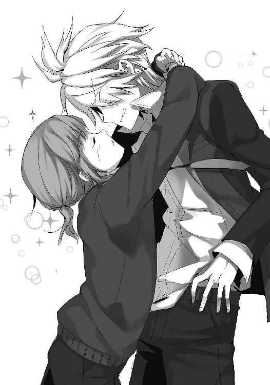
薄暗く深い井戸の底。そんなものを思わせる闇色の瞳が発した言葉は。
「あんな女に渡さないです。見せつけてやるです」
ちょ────ッ!? この子、まさか最初から逆転ホームランを狙って......っ！
「......やばい！」
慌てて木下くんから視線を逸らし、千秋さんをロックオン。しかし、時すでに遅し。
そこにあったのは、見たこともない程に歪んでしまった彼女の顔。
「......そういう趣味でしたか。だからあんなに嬉々として、たすけに入ったんですね」
「いや待て！ 違うんだ！ これは誤解だ！」
「そういえば初めて駅前でお会いした時も、男子相手にかわいい等と......」
「......いや！ アレはあんたが！」
ええいもう待って！ 違うから！ 色々とおかしいから！
あわあわと抵抗するも、千秋さんはそんな俺に目をくれることもなく去ってしまう。
後に残されるのは呆然自失の俺と、うっとり顔で抱きつく木下くん。そして、少し離れた場所で「何も見ていない！ 何も見ていない！」と叫びながら片手腕立て伏せを繰り広げているもぴりん。ちくしょう......何だよこのバッドエンド......。
『何味だったｗ 何味でしたかｗ 病みショタ×涙目ヤンキーとかｗ キタコレｗｗｗ』
「てめぇのせいだぞボケ......」
翌々日の土曜日。休日の朝は、苦しみの思い出で満たされる。ああ、起きたら忘れられると願ってたのに......今もまだ感触が......うええ。
一昨日は結局、埋めようのない溝を掘った時点でゲームオーバー。傷心の俺を迎えてくれたのは、妹の『にいさん、薫から電話で聞いたのです！ 男の子とのキスは何味なのですか!?』という、ギラついた欲望だった。さわやかピーチでしたよ！ 思い出させんな！
「やばいよなぁ」
まぁそんな悪夢は置いといて。断言しよう。千秋さんと仲良くなれる気配がありません。
マズイなぁと思いつつも、解決策なんて何も思い当たらない。ヤケクソでノートに『こうなったら俺がダメ元で千秋さんに告ってみるか？』と書いておいたら、『ねぇ、それ本気で書いてるの？』という返事を書かれるし。なんでちょっとキレてんだよ。
『うまくいかないねぇ。でも光ちゃんはあきらめない！ 今度はもひかんくんに、千秋ちゃんを襲うようお願いしておいたよ！ そこを坂本くんがたすければカンペキさ！ 今日も千秋ちゃんと会えるよう、隼人くんにお願いしておいたから、頑張るんだぞ！』
「......頑張る、ねぇ」
ノートを見つめ、しばし逡巡。......うん、決めたぞ。
ある決意をした俺は、ケータイを手にとってもぴりんへとコール。
礼儀正しく応答したもぴりんに、俺が告げた言葉は──。
時刻は午後二時過ぎ。
昼飯をのんびり食った後、いつも通りに電車でゆらゆら。おなじみとなった図書館横の談話室では、千秋さんが読書中だ。俺の姿を確認するも、もちろん無反応。
「よ、悪いな。毎日毎日」
「そうですね。そろそろあきらめてくれないかしら」
ページをめくる、かさりという音が乾いた心をそのまま表しているようだ。
「今日はどんな頭の不良さんが現れるのかしら。次は私が襲われる番ですか」
やっぱりお見通しか。そりゃそうだよな。
「いや、今日はもう来ないよ。さっき断っておいた」
「────え」
先ほど、俺はもぴりんに電話で作戦中止を伝えた。バレバレだとか、うまくいきそうにないとか──まぁ理由は色々あるんだけど、やっぱり一番の理由はこれだ。
「やっぱりこんなやり方、よくねーよな」
頑張ってくれてる夢前光には悪いけど、こんなの間違ってる。
友達がロクにいない俺が言うのもなんだけど、友達ってのはこうやって作るもんじゃあないと思う。べつに夢前光が間違っているとか言うつもりはないし、あいつはあくまでもキッカケ作りをしているだけってのもわかってる。
でも、俺が千秋さんの立場ならどう思うだろうか。
自分と仲良くなろうとしている奴がいる。でも、それはそいつらが生き返るためであり、あくまでも自分と友達になるのは目的のための手段だ。そんな扱いを受けたら、やっぱり怒るのもしかたないのかもしれない。ったく、隼人くんはその辺ちゃんとわかってんのか？
とまぁそう結論づけた俺は、ノープランで訪れたというわけ。どうすりゃいいのかねぇ。
夢前光が作ってくれた、お手製のお守りを掌にかざしてため息ひとつ。俺があいつくらいコミュ能力高ければ......なぁ。
「それは夢前光さんが？」
等と黄昏ていたら、珍しく嫌味でない会話がスタートされた。
「おお、うまくいくように──だってさ」
なので、俺も愛想よく返事をする。だけど。彼女の口から続くのは、やっぱりひねくれたお言葉。彼女は、目に見える悪意を持ってこんなことを言いやがった。
「あなたも大変ね。こんな......いい加減でバカな人に乗っ取られて」
「────っ！」
その言葉に、思わず言葉を詰まらせる。
............今、何て言った？
「私の相方──隼人さんもそうですけど、相方が自分勝手だと苦労しますよね。いつもいつも振り回されてばかり。あなたもそうでしょう、坂本さん」
「いや、俺は......」
しかし俺の言葉なんてどうでもいいのか。糾弾はさらに続く。
「あなたからお借りしたノートを見る限り、他人に迷惑をかけることを何とも思っていないようですね。勝手なことをして、気分次第で当たり散らす。そもそも夢前さんには、寿命の半分をいただいているという自覚はあるのかしら。正直、あまり好きになれません」
「まぁそうなんだけどさ。でも......」
「ただでさえ寿命を半分奪っているのに、それにも拘らず消えたくないだなんて。本性が見え見えじゃないですか。このまま消えたくないから慌てているだけ。あなたのことも、本心ではどうでもいいんでしょう。あなたも失敗しましたね。こんな人に寿命を半分も奪われて」
「............」
「もういいんじゃないですか。無理して生き返らせなくても。どうせ──」
「おい」
無意識だった。
友達にならなくちゃいけないのに。仲良くしなきゃいけないのに。
でも、そんなことをわかったうえで、俺は言ってしまった。
「何にも知らないくせに、夢前光を悪く言うな」
「........................」
沈黙が、遠い喧騒を耳へと運ぶ。凍てつく瞳が俺を貫く。
前にも似たことがあったっけ。美紗貴ちゃんに夢前光の行動を馬鹿にされた時だったな。どうも俺は自分をからかわれるのは耐えられるみたいだが、あいつを馬鹿にされるのは許せないらしい。しかも今回は、夢前光という人物を直接非難しているんだ。我慢出来ねぇよ。
「......見ろよ、このノート」
取り出し、ページを開く。現在、俺達が使っている交換日記。そこにあったのは、夢前光が千秋さんのことで俺に宛てたメッセージだ。
実は一昨日、俺は夢前光にあるメッセージを残していた。それは、もう脅迫してでも千秋さんに生き返る方法を喋らせる──という提案だった。だってしょうがねぇだろ。こっちは夢前光のために必死だってのに、ミッションとかやってられるか。結構俺もキレてるんだぞ。
だけど、綺麗な字で返されたのは、こんな言葉だ。
『ありがとう、坂本くん。わたしのためにそこまで言ってくれるのは嬉しいよ。でも、今は我慢して、千秋ちゃんと友達になることを優先しよう。わたしのカンだけど、きっと千秋ちゃん達は何か事情を抱えて困っているんだと思うの。隼人くん言ってたもの。秋っちは、俺達を救ってくれるかもしれないって。だから、坂本くんは千秋ちゃんのために頑張ってあげて。これはわたしからのお願い。わたしが生き返ることを抜きにしても、あの二人の力になってあげたいの。せっかく知り合えた仲間だもん。わたしは、仲間のために頑張りたいの』
長い文章を、千秋さんの目の前に突きつける。
「まだあるぞ」
「............」
ページをめくった先にも、夢前光の文章は続いていた。
『それにそれに！ わたしも早く千秋ちゃんとお友達になりたい！ 坂本くんについて、千秋ちゃんと語り合いたい！ きっと千秋ちゃんも本当はいい子に違いないよ。だって、クーデレに悪はいないもの！ だから頼んだぞぉ、坂本くん！ キミはやれば出来る子だって光ちゃんは信じてるからね。二人で協力して、千秋ちゃんを攻略するのだ！』
「..................」
ノートを見せつけ、彼女が読み終わったのを確認してから俺は言葉を紡ぐ。
「......あいつは、確かに勝手でわがままな奴だ。イタズラもするし後先も考えないし、どっから見てもダメな奴だよ。でもな、本当はとっても優しい奴なんだよ。自分の危機が迫ってるのに、こうやって自分より他人を優先するような奴なんだ。会ったこともないおまえのことを、これだけ心配して想ってくれる奴なんだよ」
「............」
千秋は何も言わない。
「それに、俺は知ってる。夢前光のおふざけは全部──ただの強がりだってことを」
いつもバカやって強がってるけど、本当は自分の未来が不安でしかたがないはずなんだ。
たまに、ふとした時にナーバスになることがあるんだろう。
俺に内緒でスイカ畑を訪れ続けていることも、陽菜子さんから聞いている。
何かを書いて、一生懸命消しゴムをかけた跡を見つけたこともある。
ノートを一ページまるまる破いていたことだってあるんだ。きっと、弱音を吐きそうになって──でも、それを隠そうとして。そのことを訊いても『コーヒー零しちゃった』なんてごまかして。嘘に決まってる。本当に零したなら、そのまま放置する性格じゃんか。
不安なはずなんだ。怖いはずなんだ。
なのに、あいつは困った人を見つけると、すぐに自分のことを後回しにする。
いつだって他人優先。誰かが泣いてるなんて我慢出来ない。
だからこそ、今もこうして千秋さんのために俺を応援している。そんなあいつだからこそ、俺もあきらめずに頑張れるんだ。夢前光の弱さを見て見ぬふりして走り回るんだ。何事もなかったかのように、何も見なかったかのように。そうやって振る舞うことが、あいつの求める坂本秋月なんだ。そんな夢前光だから、俺は──。
「よく知りもしないで夢前光を悪く言うな。こいつがどれだけ、優しい奴だと思っている」
なぜか嗚咽がこみ上げたので、それだけ言ってすぐに俯く。
「......泣かなくてもいいじゃない」
「......うっせぇ」
俺は顔の割に泣き虫なんだよ。
「............」「............」
そんな感じで、どれくらい涙を堪えただろうか。
気まずい沈黙が寝そべる嫌な空の下。先に口を開いたのは、意外にも彼女の方だった。
「......あなたは」
ん？
「あなたは、夢前さんに寿命の半分を奪われた。それに対して」
小さく唾を飲みこみ、彼女は言った。
「後悔は、していないのですか？」
後悔。なぜか、とても悲痛に聞こえる単語。
唐突に放たれた問いかけには、どういう意味があるのだろうか。寿命が減ったことについてだろうか。それとも......まぁいいか。なんにせよ、そんなもん答えは決まってる。
「後悔したことなんて、一度もない」
嘘じゃない。寿命の半分を捨てた価値はあった。俺の人生の、すべてを変えてくれたんだ。半分でも足りないくらいだ。夢前光のためなら、俺は──......。
「............そう」
そして、千秋さんは黙ってしまう。俯いたその表情は、髪に隠れて見ることはかなわない。だけど、その唇は何かを言いたそうにほんの少しだけ震え続けていた。さすがに言い過ぎたと思っているのかな──と一瞬考えるも。当然、そんな素直な女であるワケがなかった。
「そうですか。まぁどうでもいいですけどね。私には関係ないもの」
鼻を鳴らすように、ふて腐れた態度と言葉が俺を襲う。
ほんっとひねくれた奴だな。くそ......もういいや、今日はさっさと帰ろう。
「今日は、隼人くんからの伝言あるの？」
「ええ。どうぞ」
親が喧嘩した時に似た、気まずい空気。千秋さんはボイスレコーダーを俺に差しだす。
どうにもならない苛立ちに小さく舌打ちをしながら、ボロいイヤホンを耳に差しこんで再生ボタンを押した。今日はもうこれだけ聞いて帰ろう。あ、音量下げとかないと。どうせまたぎゃあぎゃあ叫ばれるんだし。
『それでは、メッセージを録音します』
とか思っていたら。流れてきたのは、予想外の静かな声だった。
なんだ？ 律儀に挨拶なんかしやがって。また珍しいことを──。
『今日も坂本さんがいらしてくれました。隼人くん、何を企んでいるのか知らないけど、早く教えてあげよう？ いつも来てもらってるのに申し訳ないよ』
っ!?
『それと。隼人くん、坂本さんが嫌な人なんじゃないかって心配してくれたけど、大丈夫だよ。彼、とっても優しいの。いつもカイロや飲み物を用意してくれて。それだけじゃない。私がジュースのタブを開けるのに苦労してたら、次からはタブを開けてから渡してくれるようになったの。すごく気配り上手。隼人くんにも見習って欲しいな。ふふっ』
え、あれ......？ 隼人くん？
『最初見た時は本当に恐かった。でも、すぐにわかったよ。とても優しい人だって。夢前さんとの交換日記を見てたらわかるもの。この日記、すごくおもしろいと思わない？ 坂本さんてばいつも振り回されて......この、おくちで～のところが本当におもしろくて。夢前さんってきっとすてきな人なんだろうな。ね、隼人くん。夢前さんがどんな人か、もう一度教えて？』
............。
『それより隼人くん、やっぱりもう全部教えてあげよう。私、彼と友達になれる自信がないの。今日もまた、冷たい態度をとっちゃったし。やっぱり無理なの。もし友達になれても、昔みたいに足のことで喧嘩しちゃうと思う。あんな辛いのはもう嫌なの。それだったら、最初から友達なんていない方がまし。やっぱり私は自分を変えられない』
..................。
『それに、それ抜きでも私には友達を作れない理由があるもの。友達を作らないって、あの日決めたから。お願い、わかってよ隼人くん』
........................。
『坂本さん、きっと夢前さんをたすけたくてしかたがないはず。ね、やっぱり教えてあげよう。あの二人には、少しでも幸せに過ごして欲しいもの。隼人くんもそう思うでしょう』
「....................................」
「何かしら」
イヤホンを装着したまま、ぼーっと千秋さんの顔を見つめていたら嫌そうな声が飛んできた。しかめっ面が吐き出すのは、ボイスレコーダーから流れるのと同じ声。
「............」
「？」
「......あ、ファイル③だっけ」
「────え」
あ、しまっ──。
「な、ななななな──っ！ き、聞いたんですか!?」
「へ!? あ、いや！ 聞いてない！ 何も聞いてないよ！」
やばい！ しくった！ かつてなくピンチ！
「いい、①!? それとも②!? どっちを聞いたんですか!?」
あ、や、え、えっと、んと──。
「に、②だ！ ファイル②！ 隼人くんからキミへのメッセージを──」
「じゃあ②の内容を教えてください！」
「えーと......」
やばい。これはやばい。えと、その............。
「『ち、千秋ちゃん......萌え～......』なんて......」
あ、やばい。絶対やばい。
フルフル震えて、真っ赤になってるもの。それどころか、今にも泣きそうな顔で──。
「隼人くんがそんなこと言うわけないでしょ！」
キーン。
でっかい声が、空を揺るがす程に俺の耳をつんざいた。
し、しくった......俺としたことが......。
「ば、ばか────っ」
そして、彼女は黙ってしまう。信じられない程に真っ赤になった顔を、俯かせて。
「あ、えーと......」
やばい。これはやばい。なんとか笑いでごまかさないと。
「ね、ねぇ......」
「............」
「大丈夫だって。その、夢前光はさ。あいつは......」
「............」
「......クーデレとか、好きらしいから......」
カイロが全速力でぶっ飛んできたのは言うまでもない。
『このノートに名前を書かれた人は、光ちゃんの言いなりになった後、死ぬ』
「なんだいきなり」
そのどっかで聞いたことのある設定は。
『坂本秋月。昨晩、隼人くんに電話するつもりが、間違えてかすみちゃんに「明後日も遊びに行くね！ おっぱい、また触らせてげへへｗ」と電話してしまい、えらいことになった件について解決させた後、光ちゃんと入れ替わるために死ぬ』
「......もう知らん」
まぁそんな日記は置いといて。
あれから一週間程。
千秋さんのとてもカワイイ面が晒される大事件を、忘れられそうにないある日。俺は、なんと大豪邸──月村家に招待されていた。
「すげぇ金持ちなんだな。親は何の仕事してんの？」
「あまりよく知りません。いつも海外に行っているようです」
そんな会話をしながら、バリアフリー仕様のお宅にお邪魔する。
さて。なぜ、あの不機嫌ガールからそんな彼氏のような扱いを受けているのか。なぜ、いつもの待ち合わせ場所に着いた時、いきなり家に来るよう誘いを受けたのか。
『勘違いしないでください。貴方を家に招く敗北感と、寒さに耐えながら外でお会いする億劫さを比べた時に、どちらが勝利したかという話ですので。（ツンッ）』
というツンデレラな言葉でも飛び出てくるのなら、まだ納得出来る。しかし実際は、
「せ、せっかく遠いところを来ていただいているので、その、お茶でも......」
である。思わず「頭打ったんですか」と訊きたくなった。
が、これにはたぶん心当たりがある。というのも、昨日の俺からの日記に、
『うひひ、坂本くん！ 最近、千秋ちゃんと仲良くやってるみたいだね！ 隼人くん嬉しそうだったぞ！ もっと仲良くなれるように「坂本くんてば千秋ちゃんのこと気になるらしいよ？ 抱きしめたいって言ってた！」て隼人くんに伝えてあげたぞ！ クーデレを楽しむのだ☆』
等と書いてあったからである。いらんことをしおって。
どうやらその嘘情報は隼人くん経由で千秋さんに伝わっているらしく、先ほどからそわそわきょどきょど。しまいには俺を客間に案内しながら。
「よく考えれば家に招待って、期待させちゃってるかも............ど、どうしよ......」
等と小声で呟いている。そして、いざ客間で向かい合うと予想通りの大沈黙。
「.....................」「.....................」
ほんのり染まる頬を見ながら、俺は思う。ああ、好きとか言われることに慣れてないんだろうなぁ。俺もかすみちゃんに好意を寄せられた時はこんな感じだったよ。
「あのー......千秋さん？」
「な、なにかしら」
髪をかきあげながら、彼女はそっけなく応える。もういいや、バラそう。気まずいし。
「......俺がキミのこと抱きしめたいって言ってたのは、夢前光の嘘だぞ」
次の瞬間。彼女が大事そうに温めていたカイロが、俺のおでこにクリーンヒット。
結局こうなるんかい。
「そういやボイスレコーダー貸してくれよ。隼人くんからのメッセージ聞かないと」
「......③ですよ」
わかってるって──等と、微笑ましいやりとりを挟みつつ。ようやくいつもの空気に戻った千秋さんは、ボイスレコーダーを手渡してくれた。再生と共に流れてくるのは、目の前の少女とまったく同じ、でもテンションだけはケタ違いな挨拶。
『うぃっす──────ッ！ 隼人くんですっ！ な～んか最近調子いいみたいだね、秋っち。でもまぁこの程度で友達ってのもなんか違うよなぁ～。貴様に娘はやらんぞ的な？』
知るか。何の話だ。
『でもまぁ、うまくいってるご褒美に次のミッションを授けてやるぜぇい♪ つーわけでミッションその２！ 千秋と名前で呼び合うこと！ にひひ、ミッションの難易度はどんどん上がるからなー。これくらいサクッとクリアしてくれよ？』
「最上級難易度じゃんか......」
これでミッション２とか。ラストミッションはどうなってるんだ。キスでもさせる気か？
ボイスレコーダーを外して目の前の少女に目をやると、ぷいっと視線が逸らされる。ああ、この子もコレ聞いてるんだよな。「そんな真似、出来ません」ってことかね。
まぁそれはさておき。
千秋さん達、もうひと組の入れ替わりペアと出会ってから、はや数週間。未だに俺は、隼人くん達の握る「生き返らせる方法」について何も得ることが出来ずにいた。
時々早起きして確認している限り、夢前光の時間は三十分以上は短くなっていない。だけど、いつどうなるかわからない。なので、こんなミッションしてる場合じゃないんだけどな。
『焦る気持ちはわかるけど、今は隼人くんの言うことに従おう。きっと何か事情を抱えてるんだと思う。お願い、坂本くん。今は我慢して。わたしは大丈夫だから』
しかしやっぱり夢前光はこんな感じ。俺的には「とっとと喋れよ！」と言いたいのだが、当事者である夢前光にこう言われちゃなぁ。うーん。千秋さんは口止めされているだけだからともかく、隼人くんは何をさせたいんだか。ほんとわからん奴め。
とまぁ、ようするに進展はこれと言ってナシ。
その日も俺は読書し続ける千秋さんの前で、煎餅をボリボリしながらケータイゲームをしていたら一日が終了。帰宅することに。
「こちらをどうぞ」
「え？」
見送りに来てくれた玄関先。手渡されたのは黒いコート。親父さんのだろうか。何でまた。
「夢前さんが風邪をひいては大変でしょう。用心してください」
「あ、うん。サンキュ」
そうだな。夢前光が風邪をひいたら大変だもんな。その割にちょっと火照って視線を合わせないのは何でだろうな。訊いたらたぶん怒られるだろうけど。
「明後日に返してくださいね..........................................秋月さん」
「おお────え？」
......ああ、そゆことか。えらく協力体制になってるじゃんか。
「了解、また来るよ..........................................千秋ちゃん」
「ちゃんはいりません」
「へいへい」
ミッション２、クリアっと。
『英語の小テストが全然出来なかった......追試が嫌だから交渉したら余計に怒られた......』
「交渉？」
『あの先生、いっつもやらしい目で女子を見てるから、パンチラ写真で交渉してみたのに......』
「当たり前だろ」
翌々日。愚痴から始まる日記に、気だるくツッコむ。
『でもでも、隼人くんに宿題教えてもらったら全問解けたよっ！ 隼人くんてば超天才っ！』
「へぇ、あいつ勉強出来るのか」
意外すぎる。あんなにアホそうなのに。
『えへへ、そんなわけで明後日も隼人くんと遊ぶ約束を取り付けましたー。宿題教えてもらった後でゲームするんだ～。えへへ、隼人くんとは気が合うから楽しみだなぁ～』
「そ、そうか」
なんか、えらく楽しそうだな。まぁ、ノリが合うんだろうけど。
『そんなわけで本日の日記は以上だよ坂本くん。おやすみっ！ シーユ～♪』
そんなにぎやかなノートを閉じ、代わりにケータイを手にとる。
確認するのは、昨日のメール送信履歴と、通話履歴。えーと、またえらく長い時間隼人くんと電話してるな。その後も、長々とメール交換を──。
......なんだろう、この気持ち。なんで夢前光の奴、こんなに楽しそうに......。
「隼人くん、か......」
「隼人さんについて知りたい？」
「おお」
その日の放課後。
豪邸に到着した俺は、客間に案内された瞬間に切り出した。
「フン......そうですね」
なぜかご機嫌斜めな彼女であったが、食いついてくれた。
「隼人さんはわたしの幼馴染でした。家が近くて年も同じでしたので、小さい頃はよく一緒に遊んでいたのを覚えています。他に年の近い子供がいなかったので、しかたなく」
ふむふむ。それで？
「............」
「え、それだけ？」
「他に何か？」
いやもっとあるだろ。性格とか好き嫌いとか女性関係とか！
「あなたが隼人さんについて知ってもしょうがないのでは？ それとも何か──」
そう言いつつ、はっと何かに気付いた様子の彼女は、そばに置いてあった俺と夢前光の交換日記を手にとって、しげしげと見つめ始める。あ、そういやそろそろ返してくれよ。
とか思っていると「なるほど」と言い、フンと笑われた。な、何......。
「そうですね。隼人さんは、俗に言う天才でした」
「天才？」
「運動もかなり出来る子でしたが、勉強にいたっては飛び抜けておりまして。全国模試でも常に上位だったのを覚えております。性格も明るく、女子からは大人気でしたね」
マジか。女子に大人気ってマジか。
「ただ、とにかくいい加減でだらしない人でした。余計なことをしては、誰かに怒られる。反省したかと思いきや、次の日にはまたトラブルを起こす。そんな人でしたね」
ふむふむ。なんか誰かさんに似てるな。
「そんな彼のことが私は」
「私は？」
「大嫌いでした」
「............え？」
き、嫌いだったの？
「当然でしょう。あんないい加減な人。その彼がわたしの半分になったなんて、本当に最悪です。おかげでこんな事態に巻きこまれているんですから、迷惑な話です」
「え、でも──」
うっかり聞いてしまったファイル①を思い出す。確かに千秋は、初対面の頃から隼人くんを悪く言っていた。でも、あのメッセージでは、それなりの親しさを感じたんだけど。
「しょうがないでしょう。今は体を半分預けているんですから。逆らうと何をされるかわかったものじゃありませんもの。しかたなくですよ、しかたなく」
「はぁ、そうなんすか」
明日の俺に体を半分預ける恐怖は、身をもって知っているのでわからんでもないけど。
「............」
じーっと、千秋の様子を観察してみる。
一見、すました顔で読書をしているだけ。しかし、耳を澄ますと。
「なによ......ばか......あそこは二人だけの場所って言ってたのに......」
「もう口きいてあげない......」
時折そんな言葉が聞こえてくるのだ。そして、、今日ここに来て最初に聞かせてもらったボイスレコーダーの内容を思い出す。確かそこには。
『秋っち元気？ ミッション２クリアおめでと！ それはさておき、今日は調子がいいから光っちと車椅子デートしたぜ。ちょっと歩いたところに、すっげぇ海が綺麗な丘があるんだよ。沈む夕日がどぎゃーんて感じでめちゃ綺麗なんだ！ 千秋はそこが好きだから、調子が良さそうだったら連れて行ってあげろよ～』
そんなメッセージが残されていた。ううん、本日のクーデレ姫が不機嫌なのと関係があるのだろうか。あるだろうな。間違いなくあるだろうな。
──そんな彼のことが、私は大嫌いでした。
先ほどの台詞を思い出す。そして、クーデレという設定も思い出す。
うん。これでも、結構女心には敏感な方だと自負してるんだ。いい加減わかってきたぞ。
「ちっとカマかけてみっか」
千秋に聞こえないよう、俺はそんなことを小声で呟いていた。
久しぶりに天気のいい休日。隼人くんからの、
『やっほー。それではお待ちかね、ミッション３を与えるぜぇい。ズバリ、千秋をお姫様抱っこすること！ 偶然を装ってお尻とか触ってやれ！ 柔らかいぞ！』
というメッセージにうんざりしていたら、千秋が日用品を買いに出かけたいと言いだしたので、ついて行くことに。なんとなくこういう時は車椅子を押すべきなのかと思うも、
「人には頼らないようにしてますので」
と拒否られたので、隣を歩くことに。借りを作るのが嫌なのかと思ってたけど、どうやら自分で出来ることは自分でやるようにしているみたいだ。
そして辿り着いたのは、バカでかい駐車場を備えたショッピングモール。ほどほどに通路も広く、エレベーターもあるので重宝してるんだとさ。
「なぁ」
「なんでしょうか」
「あそこ、電化製品売り場だぞ」
「それが何か？」
「イヤホン古いみたいだしさ。ちょっと見てみたら」
無言で車椅子を進めていた千秋に、そんな提案をしてみる。べつにいいんだけど、どうもあの大豪邸とボロイヤホンが結びつかないんだよ。
「いいんです、これで。使いやすくて気に入っていますので」
ああ、そっすか。ならべつにいいけど。
という具合に、何を話すでもなくデパートをうろうろ。すると、千秋が口を開いた。
「......秋月さん」
「んー？」
「何か、ルールを作っていますか？ こういう時は......」
ルール？ 何のこっちゃ？
と思いつつ彼女が手にしていたものを見ると、詰め替え用シャンプーだった。ああ。
「基本的には夢前光が選んで、俺はそれに従う感じだな。こだわりないし」
なんで女の子って、あんなにシャンプーにこだわるんだろうね。あんなもん泡が出ればそれでいいと思うんだけど。しかし、どうやら千秋が訊ねたいのはそうではなかったらしい。
「そ、そうじゃなくて、その......」
「うん？」
「お、お──お風呂に入る、ルールとか......」
うん？ お風呂のルール？ どういう意味だ？
「湯船に一分以上浸かれとかそういうこと？ それなら幾つかルール決めてるぜ。あいつどうも妹の話を聞く感じじゃ、カラスの行水なんだよな。しかも、風呂上がりに全裸で鏡相手にボディビルダーごっことかしてるから、いつも妹に──」
「そうじゃなくて！」
ちょっとした日常の愚痴を繰り広げようとしたら、イラだったような言葉に遮られた。
「そうじゃなくて、その......」
んん？
「は、裸とか、見られるわけですけど......その辺のルールとか............」
......ああ。そういうことですか。
真っ赤な顔を、綺麗な髪で隠す千秋の姿から何かを察する。なるほど。いや、俺も気にはなっていたんだが、やっぱりそっちもそうなのか。
恥ずかしいのであまり考えないようにはしていたが、異性で二心同体ということはつまり、もう片方にあれやこれやを見られまくる触られまくるということである。俺も最初の頃は恥ずかしいので「あまり触らないように心がけて」と言っていたのだが、そこはさすが夢前光。
『ぶふへへｗ 触ってない触ってないｗ いかつい不良の正体が、小さくてかわいいだなんて思ってないから安心してｗ 見かけ倒しとか思ってないからｗ しかしこれはないｗｗｗ』
という具合に、微かな自信を木端微塵に崩壊させる勢いで俺を傷つけてくれたので、以後、その件には出来るだけ触れないようにしていた。
まぁそんなトラウマはさておき。どうやら千秋も、似たような悩みを持っていると。
「俺はもうあきらめてるよ。どうせ夢前光の奴、ルール守らないだろうし」
「......ですよね」
「そっちは何かルール作ってんの？」
「一応、お手洗いとお風呂の時は目を瞑るというルールを......」
「......そのルールが守られてる気配は？」
「..................」
ああ、赤くなっちゃった。
そらそうだよなぁ。逆ならともかく、女の子の体に男は──。
「......サイアクですよ、もう。嫌いな人に見られるどころか、たぶん触られてるだろうし......隼人さん、生きてる時からスカートめくりとかする人だったもん......」
拗ねるような口調で、千秋は愚痴る。うん、でもしょうがねぇよ。俺だって千秋の体で二心同体だったら......ねぇ。
しかしそんなことより、せっかくの機会だ。そろそろはっきりさせておこう。
「隼人くんのこと、やっぱり嫌いなんだな」
「そりゃそうですよ。女の子のこと、何にもわかってないんですから」
「ふーん、そうなんだ」
「小さい頃からデリカシーに欠けていて、ほんと迷惑でした。小学生の時なんて──」
「まぁまぁ、思い出話はいいよ。そうか、そんなに嫌いなのか」
「ええ。世界で一番嫌いかもしれませんね」
「へぇ、なるほどねぇ」
......よおし。勝負するならここだな。
悪いな、千秋。ちょいと本性を暴かせて貰うぜ。
「ところでさ」
「何ですか」
「こないだ、夢前光の日記に隼人くんのことが書いてあったんだよ」
「へぇ。でも、どうせたいしたことじゃないでしょう」
「いやいや、それがさ。なんか隼人くんがとんでもないこと言ってたみたいなんだよ」
「？ ......なんですか。もったいぶらずに教えてください」
「うん、なんでもね。夢前光が言うには──」
「............」
「隼人くん──千秋のこと『嫌いだ』って言ってたらしいぜ」
「え......」
瞬間。
千秋の顔から余裕が崩れ去り、切なそうな声が漏れる。
うん、これもう確定ですやん。千秋さん、あなたどんだけ素直なんですか。
「俺から夢前光経由で言ってやろうか？ 千秋も隼人くんのこと『嫌い』とか言ってたって」
「い、いや、それは......」
「だって自分からじゃ言いにくいだろ？ ハッキリさせた方がいいんじゃない？」
「や、べつにそんな......」
「遠慮すんなって。俺から言っておいてやるよ」
「で、でも......」
「千秋が隼人くんのこと、本当は──好きだってこと」
こちらを向く、千秋の驚いた顔。直後、はっと何かに気付いたように顔を逸らす。だけど、時すでに遅し。なんといじりがいのある奴なんだ。Ｓの血が目覚めそうだぜ。
「..................言ったら、殺します」
「殺すんかい！」
等と、おどけていたせいだろうか。続く言葉に、俺はまるで反応出来なかった。
「............あなただって、夢前さんのこと好きなくせに」
ゴト──────ッ！
思わず、手にしていたシャンプーの容器を落としてしまった。
な、な......。
「そうでしょう。『六月二日：坂本くんって告白されたことあるの？』それに対する返答が『一回だけ。おまえはどうなんだ？』」
「────────ッ!?」
おま──っ、なんで覚えて──ッ!?
「それに対する答え。『ひみつ』さらにそれに対する答え。『べつに興味無いからいいけど』」
「あああああああ！ やめてやめて！」
そこは俺も後悔してるんだから！
「べつに興味無いからいいけど」
「やめて！ お願い！」
「べ・つ・に・きょ・う・み・な・い・か・ら」
「わかったわかった！ 俺が悪かった！ ごめん！」
「ふん......」
くそう......見事にカウンターを食らったぜ......。
「......内緒ですよ。絶対に」
そして、いつもより柔らかい声がかけられる。
「おまえもだぞ。わかってんだろうな」
「あなた次第です」
ぐ......。そのひと言に、攻めていたはずなのに負けた気分になってしまう。ちくしょう、こんなはずじゃあ......ああ、恥ずかしい。
「きゃっ」
「ほら、早くレジ行こうぜ」
そんな恥ずかしさをごまかすように、千秋の車椅子に手をかけ、ぐいぐい押してやった。
こうすれば顔を見られずにすむからな。出来れば今の顔は誰にも見て欲しくない。
「............」
一瞬、余計なことをするなと怒られるかと思うも、意外なことに彼女は何も言わなかった。
うっすらと髪の隙間から見える、白くかわいらしい耳。
そいつが火照って見えたのが、俺に女の子を感じさせた。
「おお。むっちゃいいとこじゃん」
「すいません。坂道はひとりじゃ厳しくて」
「いいよ、気にすんなって」
オレンジ色がたちこめる夕暮れ。
買い物を終え、なぜか千秋が「奢ります」と言って聞かないので、喫茶店で紅茶を傾けること一時間。秘密を共有したとはいえ保険をかけたのかな？ 等と思っていたら、ふいに「行きたい場所があるんです」と言われたので、それに従い車椅子を押すことさらに数十分。辿り着いたのは、海の見える切り立った丘だった。
「少し休憩していきましょう」
千秋がそう言い、広い空に身を委ねたので俺もそれに倣い、景色を眺める。
橙色に輝く夕焼け。キラキラと燃える遠い海。いつもより高い場所にいるせいだろうか。近く感じる空が、どことなく落ち着かない気分にさせてくれる。見下ろす世界にぎっしり詰まった家屋は、小さい頃に遊んだブロックのように見えた。
「なんかアレだな。こういうの見てると、自分がちっぽけな気分にならない？」
「ええ。そうですね」
切ないような、寂しいような。かけがえのないものを零しているような不思議な感覚。
そんな気持ちにさせてくれる、千秋の特別な場所。そこに俺を連れてきたのには、果たしてどんな意味があるのだろうか。
「仕返しです。ここは、私と隼人くんの思い出の場所だったんです」
俺の心を読むように、優しい声で千秋は囁く。はは、なるへそ。やっぱりこないだのアレは嫉妬してたのね。そんで、意地を張って俺を相手にここまで来たと。
おかしな気持ちのすれ違いに思わず微笑む。夕焼けの光が、少し顔に熱い。
そんな感傷に浸っていた時だ。唐突に、千秋がくっきりした声で言い放った。
「先天性の麻痺です」
「え────」
突如、切り出されたその単語。
それが車椅子の理由だと悟るのに、数秒程かかってしまった。
「脳の病気です。物心ついた時には両足が動かなくなっていました」
「............」
薄々気付いてはいた。骨折とか、腱が切れてるとか。そういった、いつか治る類のものではないってことに。
「それでも、不幸だと嘆くことはありませんでした。周りがうらやましく見えましたし、足のことでいじめてくる男の子もいました。でも、幸い家にはお金がありましたし、仲のいい友達もいたんです。だから、特に困るようなことはありませんでした。はじめのうちは──」
少しだけ声が曇る。その違いが、今の俺にはやたらと深く響いた。
「小学二年生の頃、風邪をひいたことがあるんです。寝てれば治る。最初はそんな風に思っていました。でも、全然治らなくて。後で知ったんですが、この病気には免疫力を下げる症状もあるんだそうです。結果、学校にも行けず、遊ぶことも出来ず。終いには入院していました」
「............」
「そこからは大変でした。小さい頃のことなので詳しくは覚えてないんですが、治るどころか、いろんな合併症まで引き起こして。ベッドから動けず、毎日吐き気や頭痛に苦しむ。覚えているのは、そんなことばかりです」
痛みのある思い出に、少しだけ肩を強張らせて、千秋は続けた。
「最初は友達もお見舞いに来てくれました。でも、だんだんとその数は減って......当たり前ですよね。それぞれの生活があるんですから。なのに、幼い私はそれを受けいれられなくて。ストレスだけが溜まる日々。そんなある日、私はお見舞いに来てくれた子に八つ当たりしてしまいました。その子は唯一、皆が顔を見せなくなってからも会いに来てくれる子だったのに」
千秋は自嘲するように笑い、続ける。
「後悔しました。誰も来てくれなくなって、寂しい毎日で。でも、きっと退院して学校に行けば元通りになる。謝ればきっと許してくれる。そう期待して......でも、現実はうまくいきません。学校にも、友達だった子達の間にも、私の居場所はなくなっていました。謝るつもりだったのに、その勇気もなくて。仲間はずれにされてると知った時、意地の方を優先してしまって。結果、出来あがったのは、素直になれない無愛想な私でした」
......そうだよな。案外、現実ってのはそんなもんだ。誰が悪いとかそんなんじゃない。
ふとした運の廻りあわせで不幸になる。たまたま、千秋がその不幸を引いてしまった。
「辛かった。みんなと違い、ひとりだけのろい車椅子で。まるで、晒しものにされているみたい。なんでこんな人生なんだろうってずっと思ってました。症状もどんどん悪くなり、頭痛が治ったと思ったら、今度は視力の異常。今でもまだ、朝起き上がれない程に目眩のする日もあります。足の痛みで動けない日もあります。それが原因で八つ当たりして。家族と何度も喧嘩しました。でも、小学生だった私には泣くことしか出来なくて──だけど」
悲しい過去を吹き飛ばすように、千秋は続けた。
「そんな私を、ひとりだけ支えてくれた人がいました」
「それが──」
「はい。かつて私をいじめていた男の子──隼人くんです」
隼人くん。
ようやく出てきたその名前に、千秋の声が軽くなったのを感じた。
「彼のことを嫌いだと言っていたのは本当です。小さい頃は本当に嫌いでした。大きな声で元気いっぱいで。私より小さいのに、走れるし運動も出来るし。そして、私をいじめて。なんでこんな人が幼馴染なんだろうと思っていました。本当に、本当に大嫌いでした」
大嫌い。
嫌悪を現す言葉なのに、優しい感触のする言葉。それはきっと、千秋が──。
「でも、小学三年生の頃だったと思います。休みがちで出席数が足りない私と、赤点常連だった隼人くんの二人で、居残り授業をさせられたことがあるんです。その時に『足、まだ治らないの？』と訊かれました。あれだけからかってたくせに、急に心配するような声で。私は『一生治らない』と答えたの。そしたら隼人くん『ごめん』って言って、急に泣きだして。もう忘れてるんだと思ってた。いじめてたことなんて忘れてるんだと思ってたのに。だから私も、一生許さないつもりだったのに、つい、もう怒ってないなんて言っちゃって──」
恥ずかしさをごまかすためだろうか。千秋は少し、後悔するような口調でそう言った。
謝る。許す。
ただそれだけの──でも、きっと色んな感情のこもったその行為が、二人を結びつけたんだ。それを実現したのは、おそらく、二人の持つかけがえのない優しさだろう。
「それからはよく一緒に勉強するようになりました。でも、隼人くんたらほんと物覚えが悪くて。なんでこんなことしなきゃいけないんだーとか文句ばっかり。だからある日、言っちゃったんです。いっぱい勉強しないとお医者様になれない、お医者様になれないと私みたいに病気で苦しんでいる人をたすけられないって。悲劇のヒロインをイメージして言っただけ。なのに、隼人くんたら本気に受け止めてしまって。『じゃあ俺が千秋の足を治す』って言って。気が付けば数年後、彼につけられたあだ名は天才児です。本当に、やればなんでも出来る子で。まさか、そんな子が私のそばにいてくれるなんて。それが、とっても嬉しくて──」
いやはや。隼人くん、おまえ相当すごい奴だったんだな。
「中学になってからも、ずっとそばには彼がいました。相変わらずこんな性格のせいで友達も出来ませんでした。そのことを家族に責められたこともあります。でも、隼人くんは言ってくれました。『ずっとそばにいる。だから友達なんて作らなくていい。約束だ』って。だから、私はひとりでも辛くなかった。だけど──その幸せも、中学を卒業するまででした」
千秋は続く言葉を言い淀む。
「中学を卒業する頃です。私の足は、ほんの少しですが動くようになったんです。お医者様からも、これはチャンスだと。今リハビリして歩けるようになれば、体力や筋力も戻り、改善出来るかもしれない。そう言われました。そこから、私のリハビリ生活が始まったんです」
夕陽をまっすぐに見たまま、でも、少し声色を変えて千秋は語る。
「リハビリには、家族も隼人くんも協力してくれました。でも、痛いんです。足を動かす度にすごく痛くて。ちょっと歩いただけでも目眩がして息が切れて。支えてくれる人がいなかったら、すぐに投げだしていたでしょう。隼人くんと手を繋げるのが嬉しい。それだけを糧に、頑張って練習していました。......だけど」
千秋はためらう。黒く濁った思い出へ足を踏み入れることに。
「ある日、屋外にてひとりで練習していた時のことです。それを、通りすがりの集団に見られました。物珍しい光景ですから度々あることです。でも、その日は違ったんです。彼らは私を囃したてました。大きな声で周りの人にも聞こえるように、まるで、生まれたばかりの小鹿を眺めるように。楽しそうに、おもしろそうに。私は遊ばれました」
髪に隠れた表情を見なくてもわかる。それを明かすことが、どれだけの屈辱なのかを。
「見世物になっている気分でした。耐えられなくて、帰ろうとした時にかけられた言葉は忘れません。『お疲れさーん。頑張ったねー』と。本当に、本当に楽しそうに」
永遠に拭えない悔しさを彼女は紡ぐ。それに対して、何も言うことが出来ない。
「私はリハビリをサボり始めました。怖かったんです。でも、そんなの誰もわかってくれない。親は、私に厳しく接しました。愛情の裏返しだったんだと思います。でも、そうわかっていても、私には立ち上がる強さがなくて。とにかくもう疲れて嫌で、苦しくて」
──だけど。そう言葉を挟み、千秋は彼の名を呟いた。
「隼人くんだけはわかってくれた。何も言っていないのに、ある日突然『飽きた！ ゲームして遊ぼうぜ』と。急に掌を返したように、リハビリをやめようって。とても不自然に」
不自然。その理由は聞くまでもない。
「気付いてくれたんです。私が追い詰められていたことに。だから、逃げ道を切り開いてくれた。歩けなくてもべつにいい。俺が車椅子を押すから何の問題もない。彼は優しく言ってくれました。だけど、私の家族はそれをよく思いませんでした。彼が私を甘やかしたから、リハビリをやめてしまった。そう思われたんです。何度も喧嘩して、わかりあえなくて。結果、わたしはどんどん孤立しました」
悲しいすれ違いに、ため息が漏れる。誰が悪いんじゃない。それぞれが、千秋のためを思った結果、すれ違いが生まれてしまったんだ。
「でも、隼人くんがそばにいてくれたからべつによかった。彼がずっとそばにいてくれる。だから、これでいいんだって。友達は相変わらず出来なかったけど、彼がいたから高校にも通えた。なのに、隼人くんは──」
千秋は、そこで口を閉ざしてしまった。
理由は知っている。残酷な未来が訪れたことを、俺は知っている。隼人くんは......。
「秋月さん。これを」
嫌な空気を嫌ったんだろうか。それとも俺に気を遣ったんだろうか。
話題を変えるように彼女が取り出したのは、例のボイスレコーダーとイヤホンだ。
「昔、好きだったドラマがあるんです。その中で、恋人同士がひとつのイヤホンで一緒に音楽を聴くシーンがありました。私、そのシーンがとっても好きなんです」
「ああ、恋人繋ぎね」
「音楽とかあんまり興味が無かったんですけど、どうしてもそれをやってみたくて。ロクに音楽なんて聴かないくせに、高い音楽プレイヤーまで買ってしまって」
懐かしむように、子供っぽい顔で千秋は語る。
「でもね。あの子、とっても察しが悪いんです。一緒に聴こうって言ったら、どうしたと思います？ 掌を丸めて、その上にイヤホンを置いて──『こうすれば音が反射して皆で聴けるんだぜ！』なんて言うの。そうじゃないのに。そうして欲しいんじゃないのに。大げさですけど、なんだか夢が破れた気がして。私、思わず泣いてしまいました」
うん、なんとなく想像が出来る。
なんで俺の相方も千秋の相方も、空気を読めないんだろうな。
「でもね、やっぱり彼は優しいの。慌てながら『どうしたらいいの？』って言いだして。私を慰めながら、イヤホンを片方だけつけてくれた。彼の呼吸がそばで聞こえる。それがとってもドキドキして。今でも私にとってはすてきな思い出で──」
綺麗な瞳が、思い出を描くように伏せられる。
「左側のイヤホンが、彼の指定席でした」
「......そっか」
恋する少女の顔に、俺の顔まで熱くなる。
そして、ふと薄闇に染まりつつある夕空を見上げた時。
なんでだろう。なぜか、無性に寂しくなった。
隼人くんがここにいないからだろうか。千秋と隼人くんが手を取り合えないからだろうか。
それとも、手を取り合えないのはこの二人だけじゃなくて。
俺と、夢前光も──。
「............」
体は、勝手に動いてしまった。
「きゃっ」
思わず、車椅子に乗っていた千秋の体をお姫様抱っこしてしまった。車椅子じゃ危なくて前まで行けないからな。これなら景色もよく見えるだろ。そんな建前でごまかして。
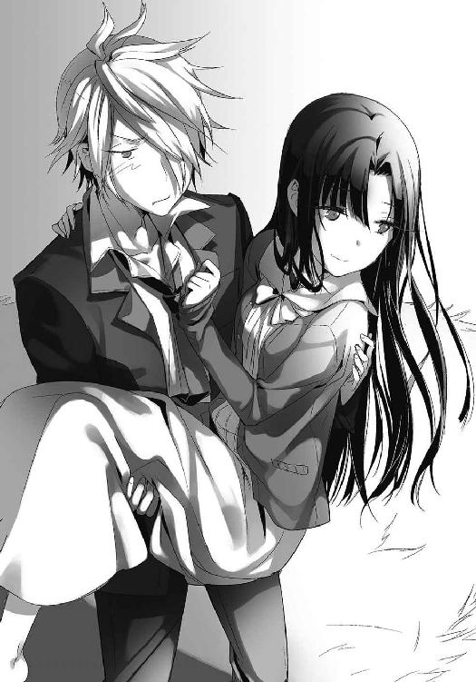
「......ミッション３、クリアだ」
熱くなった顔を紛らわすように、そう告げる。
そして切り立った丘のさらに先へ。彼女のあまりの軽さに切なくなる。
「..................」
千秋は何も言わない。
嫌がられるか怒られるか。だけど、そんな俺の予想はどちらも外れて。それどころか。
──ぎゅ。
「体、大きいんですね」
「よく言われる」
「隼人くんは......小さいんです。小学生の時は、わたしより小さくて」
「......そっか」
「......隼人くんに会いたい」
しがみつく彼女に、訊きたいことは色々あった。きっと千秋も、もっと話したいことがあったんだろう。だけど、沈む夕陽を見ていたくて。赤い空に包まれていたくて。
結局。俺達はそれ以上何も喋らなかった。
ただただ。ひたすらに燃え尽きる夕陽を、悲しい思いで見つめ続けていた。
天気のいい翌々日。俺はいつも通り千秋の家を訪れていた。
迎えてくれたのは、珍しく千秋ではなくお手伝いさん。案内されるままに千秋の部屋を訪れると、彼女は車椅子に座ったまま居眠りしていた。お邪魔していいのかと思うも、引くに引けなくなったので適当に腰かける。そして、静かな部屋で彼女の寝息に耳を傾ける。と同時に、落ち着かないので部屋を見渡してみる。
バリアフリーを意識しているのだろう。ところどころに、手すり等の気遣いが見られる。でも、車椅子ならあんまり意味ないような気がするのは俺が無知だからなのかね。まぁ何か使い道があるんだろう。他にも、部屋の隅に置いてあった杖が目に入る。ちょっと使ったような形跡がある。車椅子から移動する時とかに使うんだろうか。
「......あ」
そうしていたら、机の上にボイスレコーダーが置いてあるのを見つけた。少し迷った後に、右側のイヤホンをお借りしてファイル③を再生。聞こえるのは、隼人くんのメッセージ。
『おいっす！ 千秋から聞いたぜ。ミッション３もクリアだってな。中々やるじゃんか。千秋、スゲー嬉しそうだったぜ。んじゃあ次はミッション４なんだけど......ちょっと時間くれないか。近いうちに知らせるからよ。ちなみにミッションの難易度はここから跳ね上がるからな！ 覚悟してろよ！』
「何がさせたいんだろうなぁ、この王子様は」
苦笑しながらイヤホンを外したその時だ。ふとイタズラを思いつく。
外したイヤホンを再び装着、今度はファイル①を再生。ごめんね千秋ちゃん。だけど無防備に寝てるのが悪いよな。そっちも俺達の交換日記を読んだんだし、おあいこだよな。
そんな言い訳をしつつ、流れてくる愛しい声に身を委ねる。
ハッキリと、でも、優しい声。瞳を閉じて、千秋が録音している様を思い浮かべる。
きっと、幸せな顔をしていると信じて。
『隼人くん、おはよう。調子はどう？ あまり無理しないでね。薬、机の上に置いておくから』
『今日も秋月さんが来てくださいました。ミッション３もクリアです。彼、とっても大きいね。軽く持ちあげられちゃった。あんなに大きいのに優しいんだから。すてきな人よね』
『秋月さんと夢前さんには内緒だよ。今日、秋月さんから聞いたんだけど、やっぱり夢前さんのことが好きなんだって。ふふ、賭けは私の勝ちだね。隼人くんも今度、夢前さんに訊いてみてよ。秋月さんのこと、どう思ってるのかって。私達でキューピッドになってあげよう。ドラマみたいですてきでしょ』
『隼人くん。私も、あなたと幼馴染でよかった。それじゃ、おやすみなさい。今日も一日、頑張ってください。千秋より』
だけど。平和は長続きしなかった。
翌々日。隼人くんから千秋へのメッセージは、急に途絶えてしまったのだ。
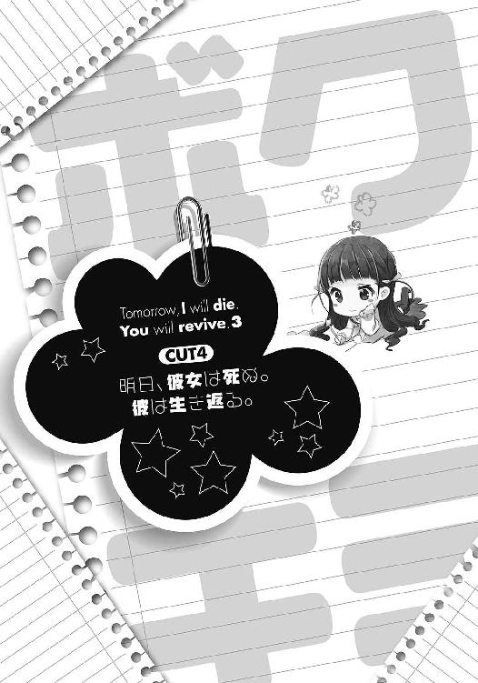
「うーん、やっぱりか」
えらく冷える、とある日のこと。
『隼人くんに訊いてみたんだけどね、なんかすごく言い辛そうだった。やっぱり千秋ちゃん、学校に行ってないみたい』
夢前光からの報告に、苦い顔をしてしまう。
一昨日。俺はノートに千秋の過去をすべて記し、さらに『千秋が学校に行ってるか調べられないか？』と書いておいた。理由は簡単。千秋が学校に行っている素振りを見せないからだ。
千秋は色んな不幸が重なったことで、隼人以外の友達を失くした。歩けるようになるチャンスもあったが、心ない冷たさに負けてそれからも逃げていた。でも、隼人くんがいたからそれでもよかった。千秋はそう言っていた。
だけど。隼人くんは死んでしまった。その後、千秋はどうしているのか。
歩いていないのは見てわかる。練習すらしていない。では、交友関係は？ 隼人と一緒に高校に行っていたと言ってたけど、今はどうなっているのか。それを探るために、学校に行ってるかどうかを知りたかったのだが......行ってないってことは、ダメなんだろうな。
『隼人くん自身にも思うところがあるみたい。言ってたもん。千秋が学校に行けなくなったのは、俺のせいだって......』
「どういうことなんだろ」
千秋が、頼りにしてた隼人がいなくなったことで、学校に行くのが気まずくなっているのはわかる。だけど、それで登校拒否になるのは極端すぎるだろう。隼人くんだって「ずっとそばにいる」とか言いながら死んだのだから、責任を感じるのはわかる。だけど、それでも完全に死んだわけじゃない。半分として存在してくれているし、生き返る方法だって知っているんだ。
それなのに、自分のせいだと言い切るのはどうなんだ。
それに、気になることはそれだけじゃない。確か、千秋が会った初日に言っていた言葉。
──私は〝ある理由〟により、絶対に友達を作らないと決めておりますので。
こいつに関しても、よくわかったようなわからないような。足のことで人と関わるのを避け始めたのはもう聞いたのだが、どうもそれだけが理由じゃない気がする。
そんな感じにうんうん唸るも、わかるわけもない。今日のところはあきらめるか。
そう思い、俺はノートを閉じて学校へ行く準備をする。しかし、俺は思いもよらぬ形でこの答えを知ることになるのだ。
放課後。事件は、厳しすぎる現実と共に起こった。
「あー寒っ」
その日の放課後。学校が終わり、電車に揺られること一時間＋歩くこと十五分。辿り着いた千秋の部屋は、少し薄暗い感じがした。電気をつけていないからだろうか。
「ない......隼人くんてばちゃんと片付けないんだから......もう！」
目に入るのは、引き出しをがさごそしている千秋ちゃん。なんだか機嫌が悪そうだ。
「どーした？」
「あ、秋月さん。ボイスレコーダーとイヤホンがないんです。どこにしまったんだろ」
ああ、俺もよくあるわ。夢前光の奴、基本的に出したらしまうということをしないからな。朝目が覚めるとまず掃除からというのはどうにかならんのかね。
「メモでも書いとけば？『どこやったんだアホ！』て」
「うん......そうなんですけど......」
しゅんとした顔で彼女は応える。どうやら、隼人くんのメッセージを聞けないのが相当に残念なようだ。
「......あ」
とか思っていたら、こちらを見やって千秋は呟く。
「ボイスレコーダーがないと、ミッション......出来ないですよね」
「え？ ああ、いいよ。どーせ変なミッション与えられるだけだしさ」
夢前光を生き返らせるための方法を知る。そのために、隼人くんから与えられる謎のミッション達。現在、３までクリアしているのだが、４以降が未だに明らかにされない。いや、友達になれという最初のミッション１もまだ未達成なのかな。とにかく、達成ミッションは未だ半分程度。出来れば今日も進めたかったのだが。ないんならしょうがないか。風城は手掛かりが見つからないのかと怒っているけど、隼人くんが教えてくれないことには......ねぇ。
「また明後日にでも来る──ん？」
等と考えていたら、不意に玄関からチャイムの音が響いた。今日はお手伝いさんがいないようなので、俺が出ようか──と提案するも、やんわりと拒否される。そして千秋は車椅子を必死に動かし、部屋からほど近い玄関へ。することがなくなった俺は、そのまま待機。
すると、玄関を開く音に続いてこんな声が聞こえてきた。
「こんにちは。先生からお届けものだよ。もう、千秋ちゃん学校来なきゃだめじゃない。一日置きに休んでたんじゃ、出席日数足りなくなっちゃうよ？」
あん？ お届けもの？
それに続いて、千秋の「ありがとうございます」といった声が聞こえる。どうやら、クラスメートらしき人物が、欠席している千秋を訪ねて来てくれたらしい。なんだ、友達──かどうかは知らんが、愛想良くしてくれる奴がいるんじゃねぇか。ったく、そんな人がいながら登校拒否になるとか、ちょっと甘え過ぎなんじゃないか？ 俺なんて、話しかけてもらえるどころか、近づかれることすらないってのに。ったく、最近の若いもんは。
等と、ふざけたことを考えていたのも束の間。
「まぁでも、今さら来るなんてやっぱり無理だよね」
「............ん？」
声色が変わったな──等と思う暇もなく続いた言葉に、俺は戦慄した。
「あんたのせいで、日向くんは死んだんだもの」
「──────────ッ!?」
............は？
日向。確か、隼人くんの苗字だ。え......千秋のせいで死んだ？
いやいや、何言ってんだ。だって、夢前光が言ってたじゃんか。隼人くんは、部活中に心筋梗塞で死んだと言ってたって。隼人くんが、自分で............。
「..................」
まさか──。
ある予感が俺の脳裏を支配する。それと同時に、さらなる会話が玄関から聞こえてくる。
「ねぇ、わかってるの？ みんな日向くんのことが好きだったのに、あんたが独り占めしちゃってさ。そのあんたが入院しちゃったから、日向くんはお見舞いに行こうとして事故にあったのよ。誰のせいか、言わなくてもわかるわよね」
「......ごめんなさい」
糾弾に対し、千秋が謝る声が聞こえる。そして、俺は理解する。
おかしいとは思ってたんだ。隼人くんは、俺達に対してほとんど情報を与えない。気になることがあっても、千秋に訊けと繰り返していた。そんなあいつが、唯一明かした嘘の情報──それが、自分の死因だ。今になって気付く。それはつまり......そのことだけは、千秋には絶対に聞かないでくれって意味だったんだ。
「ねぇ、あたしがなんでこんなに責めるかわかってるの？」
さらに。玄関での千秋への非難は続く。
「どうせあんた、明日になったらいつもみたいにケロッと忘れるんでしょ？ そして言うんでしょ。『隼人くんが死んだのは、自分のせいじゃない。隼人くんが勝手に死んだんだ』って。あんたのその言葉で、あたしらがどれだけ怒ってるかわかってるの？ ねぇ!?」
「............ごめんなさい。私のせいです......」
その言葉を聞き、嫌な汗が背中を伝う。ああ......隼人くんの言っていた、自分のせいで学校に行けなくなったってのは、こういうことだったんだ。
隼人くんが勝手に死んだ。千秋がそんな言葉、間違っても言うはずがない。つまり、それを言ったのはもうひとりの千秋だ。隼人くんなりに、千秋をかばった言葉。だけど、それを嫌われ者の千秋の姿で言っちゃあ............学校になんて行けるはずがない。
「ねぇ！ こっち向きなよ！ なんか言えよ！」
下を向きかけた俺は、突如響いた怒声にハッとする。どうやら、例の客人はかなり激昂しているようだ。それに紛れて聞こえる、かすかにひくついた声。千秋、まさか泣いて──。
「ああううんっ！ ゴォッホン！」
思わず、咳払いした。開けっぱなしの千秋の部屋から、玄関にまで聞こえるように。
そして、勇気を出して部屋の扉から顔をのぞかせる。目に入るのは、険しい表情の見知らぬ少女だ。う......俺が言うのもなんだけど、すげー恐い......だけどひるむな。恐さに関してだけは、絶対に誰にも負けない。ここは千秋を守らなくちゃ。なんか、いかにも不良の言いそうな言葉でビビらせて......えーと、不良の言いそうな言葉......不良......。
「ツ、ツーショット撮るぞゴラァ！」
だああ！ どっかのモヒカンのせいで脅しが脅しになってない！
だけど、見知らぬ少女にとっては効果抜群だったようだ。俺と目があったその瞬間から、怒りに満ちた彼女の表情に、怯えが混ざり始める。そして──。
「じゃ、じゃあね。それだけだから。また学校で」
俺の顔の大勝利。見知らぬ少女は、穏やかな顔に戻ったかと思うと、愛想のある声を残して消えていった。よかった、うまくいった。いや、でも。
千秋が動こうともしないので、車椅子を押して無理矢理部屋に連れ戻す。少し、目が赤くなっているのがわかる。そりゃまぁ、泣くよなぁ......あんなこと言われちゃ。
「......すみません」
「いや、いいけど......」
風城だったらこういう時、気の利くひと言でもかけるんだろうなぁ等と思うも、俺は風城ではない。ようするに、何も言えるわけがない。結果、沈黙するのみ。
そんな痛々しい空気が、どれくらいか過ぎた頃。
「秋月さん、覚えていますか。最初にあなたにお会いした時、訊ねたことを──」
「え」
訊ねたこと。それって確か......。
──あなたは、夢前さんに寿命の半分を奪われた。
──それに対して、後悔はしていないのですか？
「......覚えてるよ」
その後も覚えているさ。キミの、あの──悲痛そうな顔を。
「私は、とても後悔しているんです。彼を、この体に受けいれてしまったことを」
そして千秋は机の引き出しを開け、中から一枚の写真を取り出した。
写るのは、車椅子に不機嫌そうに座る千秋と、そんな彼女を笑顔で後ろから抱きしめる少年。ああ。イメージ通りのやんちゃな顔してるぜ。
「今年の五月のことです。私は、目の調子が悪くて一時的に入院していました。病気は辛かったけど、それでも毎日、隼人くんがお見舞いに来てくれるから平気だった。看護師さんから、彼氏？ と訊かれるのが嬉しかった。幸せだった。なのに、あの日──」
千秋はそこで言葉を区切る。だけど、勇気を振り絞って続きを言ってくれた。
「いつもより隼人くんが来るのが遅い日があったんです。遅いなぁって思ってて。そしたら、救急車が病院にやってくるのが見えました。病院ですから、珍しい光景でもありません。私は気にせず、彼を待ち続けていました。でも、一向に彼は来てくれなくて。当たり前です。まさか、その救急車に彼が乗っていたなんて思わなくて。看護師さんから、いつもお見舞いに来てるあの子が危ないって聞かされた時は、もう何十分もたった後で──」
「千秋......」
彼女の瞳が、深く沈む。
「......あの時ほど、自分の情けなさを呪った日はありません。せめて走れなくても、歩くことが出来たなら。最後にひと目、会えたのかもしれない。罰が下ったんです。歩くことを頑張らなかった私に。まさか、こんなことになるなんて。こんなに後悔するなんて。彼が死んだことを聞かされた時、涙も出ませんでした」
乾ききった声で、千秋は続ける。
「そして出会ったの。病室でうずくまっていた時に、黒いローブの人に。おまえの寿命の半分で彼をたすけてやろうか。そう迫られ、私は迷うことなく寿命を差しだしました。後で考えれば、あれはなんだったんだろうって。でも、その時はそんな余裕もなくて。そのまま夜が明けて。気が付けば、私は一日飛び越えていました。ついに頭までおかしくなったのかと思った。でも、一週間程そんな日が続いて、ようやく気付いたんです。ああ、寿命の半分ってこういう意味なんだって。ボイスレコーダーで彼がメッセージを残してくれて、すべてが判明して。そこから、私達の二心同体の日々が始まりました。ただ──」
そこで、千秋は言葉を区切る。
「ただ？」
「私は怖かった。隼人くんに嫌われるんじゃないかって」
──え？
「だって私は、こんな不自由な体に彼を閉じこめてしまった。きっと嫌われる。それが、どうしようもなく怖かった」
いやいや、さすがにそれはないだろう。
確かに、今まで元気な体にいたんだ。不自由を感じるだろう。でも命がたすかったんだぞ？ 俺も最初、夢前光を不良の体に閉じこめて、恨んでいないか疑ったこともある。でも、あいつは俺でよかったとまで言ってくれた。隼人くんもそうだろ？
「隼人くんは言ってくれました。俺のために寿命を半分もくれてありがとうって」
「だったら──」
「でも、知ってしまったんです。彼の本音を......」
「え......」
「退院した私は学校に行きました。そこで待ち受けていたのは、隼人くんのことで私を憐れむ声と──私を疎ましく思う声でした。女子の世界ではよくあることです。人気者の男の子が、嫌われ者の私をお見舞いに行って亡くなった。責任を押し付けられるのは当然なんです」
............。
「私は学校に行くのが嫌になって。でも、隼人くんは私の出席日数を気にして、今でも学校に行ってくれています。しかし、彼を待ち受けていたのは私への非難です。つい言い返してしまった彼に罪はありません。だけど、彼も人間です。ボイスレコーダーを聞いた私は愕然としました。『辛い』『こんな思いをするくらいなら──』......当たり前なんです。隼人くんも人間だから、いつも笑顔ではいられない。でも......あの元気いっぱいな隼人くんに、こんなことを言わせてしまったなんて。どんな時でも笑顔な彼が、こんなことを言うなんて」
悔しそうに、千秋は言葉を吐き出す。
「後悔した。大好きな彼を、私が苦しめていたなんて。もう私は何もしなくなった。隼人くんは謝ってくれた。ごめん、もう二度と言わないって。でも、そうじゃない。隼人くんは悪くないの。彼にあんなことを言わせてしまったことが悔しくて。彼をこの不自由な体に閉じこめてしまったことが、ずっと私を後悔させて......」
「──でも！」
思わず口を挟んだ。
千秋の辛そうな顔に耐えられなくなったのか。それとも、希望に縋りたかったのか。
「生き返る方法はあるんだろう？ だったら、いいじゃないか」
薄々気付いていたのに。なんとなく予想していたのに。だけど、俺は訊いてしまった。
知ってはいけない、世界の真実を。
「......もう、あなたには全部お話しします。生き返るための──代償を」
「代償......」
その言葉が、重く俺の肩にのしかかる。
「隼人くんはずっと生き返る方法を探していました。当然ですよね。生き返れるならその方がいいに決まっています。五分短くなっていることが判明した後、さらに焦って探していました。そしてある日、ついに見つけたんです。生き返るための手がかり──〝アトリエの日誌〟を」
アトリエの日誌。その謎めいた単語を、口の中で小さく反芻する。
「私達の通う高校は歴史ある高校でして。いろんな怪談があったんですが、その中にこんな噂があったんです。『美術部に二人の仲のいい少女がいた。しかし、片方の少女は不幸な事故で死んでしまった。以来、残された少女は時折、死んだ少女のような振る舞いをするようになった。そしていつしか、残された少女は元の面影を失くし、死んだ少女そのもののようになった』という噂です。隼人くんはこの噂をいたく気にしていまして、ひたすら情報を集めました。そしてついに見つけたんです。その二人が共に過ごした、もう使われていないアトリエと、そこにあった日誌を。私達と同じ、入れ替わり現象を体験していた人達の日誌を」
息を飲む。
俺達と同じ現象の人が残した日誌。それには、これから辿る未来が描かれて──。
「彼女達がどうやってその方法を知ったのかはわかりません。でも、確かにそこには書いてあったようです。憑依した魂をこの世に残す、唯一の方法が」
そして、千秋は言った。俺達が求めた、世界の真実を。残酷な現実を。
「その方法は──宿主となっている魂を消し、乗っ取るというものでした。つまり、私や秋月さんが残りの寿命をすべて放棄して消えることによってのみ、隼人くんや夢前さんは残された私達の体で生きられる......ということです」
「..............................そっか」
現実を前に、俺は静かに応えた。
......まぁ、気付いてはいた。黒ローブからの電話で、寿命の全部と言われた時から。そして、隼人くんがいつまでたっても生き帰ろうとしないどころか、方法を俺達に教えない不可解な行動から、なんとなく予想はついていた。
夢前光。彼女をたすけるには────俺が死ぬしかないんだろうなって。
「......驚かないのですね」
「そんなことだろうと思ってたからね。つまりその日誌の二人は、憑依した方の魂が憑依された方の体で生き残る道を選んだってことなんだよな。宿主であった少女の残り寿命を代償に」
「はい......」
嫌な沈黙が残る。だけど、俺は知らなければならない。
「......そのためには、何をしなきゃいけないんだ？」
覚悟を決めて、問いかけた。しかし、彼女は首を横に振る。
「日誌を見つけたのは隼人くんなんです。彼は、生き残る代償については教えてくれましたが、そのための手段については教えてくれず、日誌もどこかに隠してしまいました。私が知っているのは、どちらかが消えなければならないということだけ。そして、私はなぜ彼がそれだけしか教えてくれないのか、それを知っています。誰だってわかります。隼人くんが何をしようとしているのか」
ああ。答えなんてひとつしかないもんな。
「彼は、たすかる方法がそれしかないと知って、落ちこんでいました。そしてある日、こう言ったんです。『決めた。おまえを幸せにしてやる』って。隼人くんは、生きることをあきらめたんです。生き残るためには、私の命を代償にしなければならない。仮に生き残っても、この不自由な体で生きなければならない。周りには恨まれ続け、苦しみばかり。だから、彼はこのまま何もせずに消える道を選んだんです。生き残るための手段を教えなかったのも、その必要がないと判断したからでしょう。そして、最後に彼は〝清算〟を始めたんです」
「清算......」
消えゆく者が残す、その寂しい言葉を呟く。
「いつかの『ずっとそばにいる。だから友達なんて作らなくていい』という約束の清算です。彼はもう、その約束を守れません。だから彼は、私の友達を探し始めたんです。自分の代わりにそばにいてくれる人を。そばで支えてくれる友達を。だから彼は、あなたを探した。あなたを見つけ、呼び寄せた。あんなミッションを与えた。すべては──私のために」
──ミッションその１！ まずは千秋と友達になること！
ボイスレコーダーで聞いた、隼人くんの言葉を思い出す。何を言ってるんだと思ってた。この大変な時に、変なミッションをやらせやがってと。でも、それらはすべて、自分がいなくなった世界への清算。隼人くんがどんな思いでこのミッションを俺に......。
「でも、私は嫌なの。隼人くんを失いたくない。友達が出来ることで隼人くんがいなくなるなら、友達なんていらない。私は、友達を作るわけにはいかないの。私に友達が出来たら隼人くんはいなくなってしまう。そんなの、耐えられない......っ」
「千秋......」
堪えられない涙は溢れる。
「もうわからない。どうしたらいいの？ 隼人くんを死なせたくない。ひとりじゃ生きていけない。でも、この体に彼を閉じこめて私が死ぬなんて、絶対に出来ない。この苦しい人生を彼に押し付けるなんて絶対に無理だもの。私は......私のわがままで、彼を棺桶のような人生に閉じこめてしまった。もう、どうしたらいいかわからないよ......っ！」
激情を宿した雫は、千秋の頬を伝う。どこまでもどこまでも悲しみを含んで。
千秋の嗚咽だけが残るその部屋で。俺は、ただ、黙って俯くことしか出来なかった。
その日、千秋が泣きやむのを見届けた俺は、沈む夕日に押されるように帰宅。
「言えねぇよな......」
今日。俺はついに、夢前光を生き返らせる方法について知った。でも、それは俺達の望んだものとはケタ違いで。千秋には、夢前光にはまだ明かさないようにと頼んでおいた。おそらくこれで、隼人くんから夢前光に漏れるということもないだろう。だけど時間の問題だ。いつかは必ず話さなければならない時が来る。
それに、千秋と隼人くんについても悩ましいところである。正直、俺がどうこう出来る範囲を越えている。隼人くんが、あんなに大きなものを背負っていたなんて。
「くそ......」
結局、この日のことは何も日記に書けず、眠りに就くことに。そして翌々日。
『なんだか隼人っちの様子がおかしかった。何かあったのかな』
寂しそうな夢前光の日記に、下を向く。さらに。
『坂本くん大丈夫？ なんか日記に元気がない感じするけど』
「俺も大概下手だな、嘘つくの」
夢前光に心配されてるようじゃまだまだなのかな。
そして次の瞬間。予想してはいたのだが、俺のケータイにメールが届いた。件名は『フロム、隼人っち』であり、本文の最初には『このメールは、自動送信予約で送ってる。俺がミスってなけりゃ、秋っちの目覚めと共にお届けにあがるはずだぜん。この意味がわかるよな？』
「ああ、内緒ってことだろ」
夢前光経由でなく、千秋経由でもなく、直接俺にメッセージを寄こした。それはつまり、その二人には内緒って意味だろう。
そして俺は続く長文を読み進める。隼人くんの、儚い願いを。
『千秋が色々喋っちゃったみたいだな。まぁ、それも予想してたことだからいいけどね。光っちには何も言ってないから安心してくれていいぜ。さて、そっちも色々あるだろうけど、悪いけど時間がないんでな。本題に入らせてもらう。あらためて説明するけど、俺が生き残るにはある手段をもって千秋の魂を消し、千秋の体を完全に乗っ取る以外に方法がない。もしそれをしなければ、いずれ俺の時間はどんどん減っていき、俺の魂は消滅しちまう』
千秋から聞いた真実を、隼人くんが述べる。やっぱり......もう他に方法はないんだな。
『んで、もう気付いてるだろうけど俺は消えるつもりだ。千秋に俺が生き残るための手段を教えてないのもそういうことだよ。ただ、死ぬ前に清算しときたいことがあるんだ』
清算。千秋も言っていた、そのもどかしい言葉。
『千秋は俺に甘えることで、歩くことをやめちまった。なのに、俺は死んじまった。そして、そのせいで学校にすら行けなくなってる。これをどうにかしない限り、俺は安心して死ねないんだよ。だから秋っち。おまえにミッション４──「千秋を笑顔にする」を授けるぜ』
「隼人くん......」
『言ったろ。４以降は難易度が跳ね上がるってさ。巻きこんで申し訳ないけど、もう俺じゃあどうしようもないんだ。頼む、秋っち。俺を────たすけてくれ』
その夜。俺は少し長めの日記を書いた。
千秋の後悔。そして、隼人くんの願い。すべてを丁寧に書き記し、そして。
『千秋から、隼人くんが生き残る方法を聞けた。手段はまだわからないけど、千秋の魂を消失させ、千秋の体に隼人くんの魂が残るしか方法がないみたいだ。つまり、隼人くんと千秋のどちらか片方が消えるってことになる』
「............」
『隼人くんは自分が消えるつもりだ。でもその前に、千秋の笑顔を見ないと安心出来ないんだとよ。だから、俺達二人で何とかしてやろう。どうすればいいかなんて全然思いつかないけど、力になってやりたいんだ』
「......はぁ」
ひと息つき、あらためて自分の書いた文章を読み上げる。
この日記がどういうことを意味するのか。さすがに夢前光だってわかるはずだ。千秋を笑顔にする。それはつまり、隼人くんの心残りを清算することであり、彼の覚悟を受けいれること。ようするに......彼の死を、千秋に受けいれさせることだ。
それと、もうひとつ。
この二人を待ち受ける残酷な未来は、そのまま俺達の未来でもある。つまり、俺と夢前光のどちらかが消えるということだ。だけど、あえて俺は自分達の未来については何も触れなかった。今は俺達よりも、悲しい運命を辿っている千秋達をたすけないと。
「きっとあいつなら、夢前光なら」
俺にはどうすれば千秋と隼人を救えるのかなんて見当もつかない。
だけど、夢前光なら。
いつだってヒーローであろうとした、あいつなら。
必ず解決策を導いてくれる。俺だって、そうやって夢前光に救われてきたんだ。
日記の一番下。そこに『おまえなら出来るって信じてるぞ』と書き残し、俺はベッドで横になる。必ず、希望をもたらしてくれると信じて。
「頼むぜ、夢前光」
やってきた翌々日。底冷えする空気を静かに歩き、綺麗に置かれたノートを開く。
そして目にする。夢前光の──強さと優しさを。
『全部読んだよ。千秋ちゃんに隼人くん、すごく辛いことを経験してきたんだね。わたしも坂本くんに賛成だよ。光ちゃんと坂本くんのパワーで、千秋ちゃん達をたすけてあげよう！』
「ああ......そうだよな！」
おまえなら絶対そう言うと思ってたぜ！
『そして安心して坂本くん！ セクシードリームは伊達じゃないとこ見せてやる！ 光ちゃんに、と～～～～～～～～～～っておきの、作戦アリだよ！』
「こいつはもう......さすがだ！ 夢前光！」
元気いっぱい。見ている方が笑顔になれるような、夢前光そのものな日記に、なんだか涙が出そうになる。本当に、本当におまえと出会えてよかったぜ。
続く日記。そこには、俺達の未来については何も記されていなかった。だけど、あいつが何も思わないわけがない。どれだけ残酷な未来が俺達の前に立ち塞がっているのかを、あいつがわかっていないわけがない。
でも、それでも。夢前光は、千秋達をたすけることを優先した。こんな状況でも、あいつは自分よりも隼人くん達のために動くことにした。自分達の未来を後回しにしたんだ。
だったら、俺がすることは──。
「絶対にやってやろうぜ、夢前光」
俺とおまえ。二人でひとり。背中合わせの奇妙な俺達二人。
最後の共同作戦が、幕を開けた。
「うし、復習するか」
訪れる放課後。俺は、夢前光の作戦が書かれたノートを前に、あらためて千秋をたすける作戦を読みなおしていた。
『隼人くんが言ってたんだけどね。やっぱり、まずは千秋ちゃんに歩かせて、強くなったところを見たいんだって。まずは千秋ちゃんが強くならないことには話にならないって』
「うん、そうだよな。やっぱり千秋が頑張らないとな」
千秋を笑顔にする。つまり、隼人くんの死を受けいれさせる。
そのためには、やはり千秋自身が変わらなければならない。強くなって、隼人くんを安心させて見送ってやる──それぐらい、千秋の考えを変えさせなければならない。
だけど、あれだけの傷を負った千秋がそんな簡単に変われるわけもない。そもそも。
「あいつが歩くなんて、無理だろう」
千秋の足については、千秋自身から聞いている。
中学時代から少しずつ動き始めた彼女の足は、リハビリをすれば、少しだけ歩くことが可能ではある。だけど、やはりそれは日々の訓練がないと不可能だ。根性とか気合いとかそういう話ではなく、筋力や体力を養った状態でないとどうしようもないという意味である。だから、いきなり千秋に「さぁ歩け」といったところで、どうしようもないのである。
しかしだ。どうも夢前光には一案あるらしい。
『坂本くんはたぶん千秋ちゃんの足について不安があると思うけど、それは大丈夫だよ。この作戦通りに行けば、千秋ちゃんは間違いなく歩けるから！』
そして俺は、続く作戦を読む。
「......まぁ確かに。理屈なら千秋は歩けるんだろうけど」
正直、うまくいくとは思えない。だけど、これしか方法がないのも事実だ。だったら、夢前光と隼人くんが考えた作戦に賭けるのは、間違っていないはず。
『まず、明後日──坂本くんからすれば明日だね。そこで、わたしと隼人くんで〝ある作戦〟を進めるよ。大事なのは、その次の日。ここで、坂本くんに頑張って欲しいの。うまく進めば、わたしから坂本くんに入れ替わった瞬間に作戦が始まるから。心づもりはしておいてね』
その作戦内容を読み進める。
明日と明後日。二日にわたる大作戦。あらためて何度考えても、作戦の難易度は高い。夢前光が担当する明日も難しそうだが、俺の担当する明後日の難易度が激しすぎる。
「でも──やるしかないよな」
ここで成功させなきゃ意味がない。俺が夢前光を焚きつけたんだ。絶対に成功させないと。
『それでね、作戦成功のために必要なものがひとつだけあるの。その必殺アイテムを坂本くんに用意して欲しいんだ』
「ＯＫ。今から調達するか」
夢前光からの依頼にそう応え『準備するもの』という項目に記されたそいつを口にする。
「『ビデオカメラ』か」
どっかにあったかな？
「ビデオカメラ？ ベッドの上に置いてあるのです」
というわけで。
高価な品をわざわざ買うのもね──と考えた俺が訪れたのは雪瑚の部屋。どうもこいつは、小説家で儲けた金を使って、カメラとか盗聴器とか、わけのわからんスパイグッズを買い集めているみたいだからな。何を目指してんのかは知らんが、ほどほどにしとけよ。
「えっと、コレどうやって使うんだ？」
「うむ......ここはやっぱり秋星から唇を............え、何か言ったのです？」
いいえ。何でもないですよ。
どうやら締め切りが近いのか、いつになく雪瑚は真剣な顔でパソコンに向き合っている。邪魔にならないように出ていくか。使い方なんて適当にいじってればわかるだろ。
「何でもないよ。じゃ、頑張ってな」
「はいなのです。............うーん......でも雪雄が襲うシーンも捨て難い......ぐぬぬ」
そんな挨拶を交わし、俺は自室へと戻ってビデオカメラを掲げる。えーっと、メモリーカードは入ってるな。ちょっとだけだしこのまま使わせてもらおう。後で消せばいいんだし。
「ん？」
とか思っていたら──あれ？ これ、なんか録画したデータが入ってるぞ。そんなに長時間撮影したデータじゃないみたいだけど......まぁいいや。ついでだ。このデータで使い方を練習しておこう。
そんなわけで、俺は何の気なしに、録画された動画を見ようとしたのだが。
「えーっと、まずは再生ボタンだな」
俺はこの時、もっと慎重になるべきだったのだ。
「おお。映った。音量はここだな？ 画質をこれで上げて──」
中々に風変りな性格をしている我が妹。そいつが持っていたビデオカメラの映像。
「ん？ これは......雪瑚の部屋か？」
それが果たして、何を意味するのかを──。
『ず、ずっと伝えたかったことがあるのです』
「あん？ 何だ？」
映し出されるのは、なぜか露出度抜群なネグリジェ姿で色っぽく座りこむ雪瑚ちゃん。カメラに向かって何やらひとりで喋り出している。
『きゅ、急にこんなこと言われても困ると思うのです。でも......でも、もうこの想いを抑えられないのです。雪瑚はずっと、ずっと......』
「ずっと？」
火照った顔と、艶めかしい困り顔。そして、愛らしく開かれた唇が紡いだ言葉は──。
『ずっと、ずっと......おにいさまのことが────』
「うああああああああああああッッっ!? 忘れてたのです────────ッ!! にいさん、見ちゃだめなのですうううううううううッッッ!?」
その瞬間──家を揺るがすような奇声と共に、今季復活は絶望だと知らされたメジャーリーガーみたいな顔をした雪瑚が、俺の部屋に突撃してきた。
「みみみみみみ、見てないのですか!? 見てないのですよね!?」
「え？ いや、ちょっと試しに見てみようと今から──」
「じゃじゃじゃあ見るのをやめるのです！ さっさとカードを返すのです！ そのカードには『ゆきりん告白練習動画：バージョン８．１１』なんて入ってないのです！」
は、８？ え、こ、告白？
等とまぁよくわからんドタバタを挟みながらも、雪瑚が部屋を出ていったその後。
なんだか肩の力が抜けた俺は、雪瑚より譲り受けた新品のメモリーカードを差しこみ、動作を確認。うん、バッチリだ。これで明日の作戦はうまくいくはずだ。
「......これで、準備完了だな」
作戦通りにことが進むなら、おそらく余裕はほとんどないだろう。俺は目覚めた瞬間──いや、夢前光から俺に入れ替わった瞬間に、いきなり任務が始まることになる。
「大丈夫。絶対に、絶対に成功させてやる」
ノートを開き、夢前光へのメッセージを書きこむ。
「頑張ろうぜ、夢前光。俺達の──最後の戦いだ」
意識は突如、覚醒した。
「あ............え......」
辺りは暗闇の屋外。冷たい外気が、体を凍らす。何が起こっているのか一瞬戸惑うも、俺はすぐに状況を理解出来た。
「ねぇ、どういうことですか!? 何なのこれは!?」
目の前で、地べたに座りこんだ千秋が混乱した顔で叫ぶ。車椅子はどこにも見当たらず、そばには杖があるのみ。その姿に、すべてを思い出す。どうやら夢前光はうまくやったようだ。
「夢前さん！ 何でこんなところに!? 答えてください！」
「......もう夢前光じゃねぇよ、千秋」
左手に握られたメモを目にする。そこに書かれていたのは、
『作戦成功だよ坂本くん！ 全部出来たから！ 後は坂本くん次第だね！』
「ああ、よくやったぜ」
そして、もう一文。
『キミの強さ。見せてもらうよ』
ほくそ笑み、メモをポケットにしまう。そして、目の前で状況をまったく理解出来ずに混乱している千秋に目をやる。驚くのも無理はない。ただ今現在、四時二十九分。夢前光から俺に入れ替わった時間であり、隼人くんから千秋に入れ替わった時間の五分後である。
場所は、誰もいない屋外。千秋にとっては、目が覚めたらいきなり屋外なんだから驚愕もんだろう。夢前光と五分だけ会話する時間があったはずが、特に何を話したでもなさそうだな。
「千秋。いきなりこんな状況で意味わからんと思う。だけど安心しろ。この状況は、隼人くんも了解済みなんだ」
「ど、どういう意味？」
夜明けを待つ月を見上げ、ようやく薄暗さに目が慣れてくる。千秋も同じだったのだろうか。自分がいる場所を理解してきたようで、さらに混乱した顔をしている。
「ここは......私と隼人くんの......」
そう。夕陽が綺麗だった、おまえ達二人の特別な──海の見える丘の上。
「千秋。俺は先日、隼人くんからミッションの続きを言い渡されていたんだよ。そいつをクリアするために、この状況を作り上げたんだ」
「な、何を言ってるの......何をするつもりなんですか......？」
どう説明すればわかってもらえるかと思案していたら、千秋が混乱した声を縋らせる。まぁいいや。もうそのまま話してやれ。
「千秋。おまえには今からここで、ひとりで歩いてもらう」
「は────────」
沈みかけの三日月を背負った、俺の言葉。暗闇でもわかる。千秋が、驚きと絶望をないまぜにしたような顔で呻いたのを。
「俺が隼人くんから受けたミッション４は、おまえを笑顔にしろというものだったよ。つまり、隼人くんの死を受けいれろってことだ。そこで考えた方法は、おまえにひとりで歩かせて、強くすることだ。笑って隼人くんを見送れるくらい......な。でも、どうせ歩けって言っても素直に従わないだろう？ だから、どうしても歩かざるを得ない状況を作らせてもらったぜ」
「な......っ！」
千秋も状況を大方理解してきたようだ。その驚きの顔に、徐々に怒りが混ざってくる。
「私が言うことを聞くわけないから......それで、隼人くんの時間を利用したの......」
「そーゆーことだ」
夢前光が立てた作戦は、隼人くんから千秋に入れ変わる早朝四時二十四分を目安に、千秋が歩かざるを得ない状況──つまり、屋外かつ車椅子のない状況を作り上げることだった。おそらく夢前光が隼人くんをおぶって来て、入れ替わるのを待っていたんだろう。この状況ならば、千秋はもう俺の言うことを聞くしかない。
「いいか千秋。おまえの言った通り、やっぱり隼人くんは死ぬ気みたいだな。だけど、あいつからのメールに書いてあったぜ。このままじゃ死ねない。千秋が弱いままじゃ、死んでも死にきれないってな。だから、歩くんだ千秋。そして、あいつを安心して逝かせてやれ」
「な、何言ってるのよ......」
戸惑いと怒り。千秋が、ギリギリと歯を食いしばっているのがわかる。偉そうに見下ろしている俺が気に食わないのだろうか。睨みつけながら、彼女は言葉を噛みつかせる。
「隼人くんが死ぬとか言わないでよ！ それに......そんな急に歩けるわけないでしょ!? 言ったじゃない！ それには訓練をしないとダメなんだって！ ふざけてないでたすけてよ！」
「ふざけてないよ。家に帰りたけりゃ──」
そう言いながら、俺は距離をとる。
彼女が座りこむその場所から、約二十メートル。まぁこんなとこだろう。海の見える思い出の場所。眼下には暗い街並みが広がる。その切っ先へと進み、振り返る。
「ここまでひとりで歩いてこい。そしたら、俺がおぶって家に返してやる」
「そんな............」
夜明け一歩手前の、不気味に暗い空の下。
絶望に染まった千秋の顔から、自分が今、どう見えているのかを悟る。千秋は慌てながら上着のポケットを漁るが、当然、ケータイなんてない。これも手はず通りだ。
「叫んでも無駄だぜ。この辺りはおまえも知る通り、人通りが少ないからな。何よりこんな早朝だ。だからこそこの時間、この場所を選んだんだ」
「く......っ」
俺が引かないと悟ったのだろうか。千秋の顔は、徐々に泣きそうになってくる。悔しいんだろう。どうにも出来ない──無力な自分を。言うことを聞くしかない自分が。
卑怯なことをしているとは思う。大好きな男の子がそれを望んでいるから──そんな理由を盾に、無理矢理こんな状況を作り上げたんだから。でも。
俺は信じている。おまえがこんなところであきらめたりはしないって。やれば出来る子だって。確かにおまえは、立ち塞がる壁に負け続けてきた。何度も逃げてきた。でも、どんな時だって一度は戦おうとしてきただろう。
歩けない体に生まれても、前を向いて生き続けた。
いじめっ子だった隼人くんを許した。
一度は歩こうと、たったひとりでも努力した。
そして──隼人くんを寿命の半分でたすけた。
残酷な世界が立ちはだかったせいで、後悔ばかりだっただろう。負けては泣いて、その繰り返し。それでも、戦い続けたのは嘘じゃない。それを見てきたからこそ、隼人くんはおまえを好きになった。だからこそ、この作戦にも隼人くんは賛成したんだ。
後悔してるって言ってたよな、千秋。
歩く練習をしなくて、隼人くんの死を看取れなかったって。隼人くんを、この体に閉じこめてしまったって。だったら......その経験があるんだったら、わかるはずだ。
ここで頑張らなきゃ、一生後悔する。後悔は頑張らなかったことへの罰。
だから俺は、なんとしてでも──。
「千秋！ おまえは昔の俺に似てるよ！」
泣きそうな千秋の顔が、俺を見つめる。
その、弱そうな──かつての俺に向かって、消えかかる三日月の下、俺は叫んだ。
「世界が怖くて、ひとりじゃ何にも出来なくて。文句ばっかり言って生きてたよ。現状を変えることを恐れて、不幸を何かのせいにして。でも、そんな俺をたすけてくれた奴がいる。そんな俺を変えてくれた奴がいる。そいつが──夢前光が、俺をここまで連れて来てくれたんだ！」
千秋は何も言わない。だから俺は、精一杯の笑顔で叫び続けた。
「あいつは俺の意見なんて知ったこっちゃない。無理矢理にも程がある方法で、いつだって俺を日陰から引っ張り出してくれたよ。あいつは......あいつは間違いなく俺の〝光〟だった。そんなあいつだけど、一度だけ、挫けて立ち上がれなかったことがあったんだ」
思い出すのは満月の夜。十五夜のあの日、陽菜子さんと交わした約束──。
「その時に気付いたよ。誰かをたすけるのが、誰かに手を差し伸べるのがこんなに難しいんだってことを。なのに、夢前光はいとも簡単に俺を日なたへと連れ出していた。あいつには一生敵わないよ。でも、俺だって変わったんだ。夢前光には勝てないけど、それでも俺は強くなった。だから、あいつに見せてやるんだ。俺が、誰かを救えるくらい強くなったってことを！」
俺達は弱かった。でも、強くなれるんだ。ひとりじゃないから。いつも背中合わせで支えてくれる人がいるから。だから、この残酷な世界でも笑っていける。それをここで、俺達は証明しなきゃなんねぇんだ。
「ここまで歩いてこい！ 大丈夫、おまえは歩けるさ！ どれだけ時間がかかってもいい！ おまえのその強さを、俺達に見せてみろ！」
両手を広げ、笑顔で叫ぶ。千秋が立ち上がると信じて。千秋が、戦うと信じて。
「無理よ......」
だけど。
「無理に決まってるじゃない......私は、あなたみたいに強くない......。いつだってすぐにあきらめて、すぐに投げ出して、そうやって逃げてきた。私は......弱いもの......」
俯き、零す。弱々しく、儚げに。
きっと、隼人くんはこんな彼女を見てられなかったんだろう。こんな千秋を、たすけずにはいられなかったんだ。そして、死んだ今になって後悔している。俺に、たすけを求めている。
だったら、俺は。
「いいや、戦える！ 俺は知ってるぞ！ おまえがそんな素直な奴じゃないってことをな！ ひねくれにひねくれて、俺を騙して遊んでたのはどこのどいつだ！ あの生意気さをもっかい見せてみろ！ おまえのその、憎ったらしい強さを見せろよ！」
隼人くんに代わって叫ぶ。きっと、立ち上がれると信じて。
「無理よ！ ねぇ、あなたもわかってるでしょ!? 私の足は、急に歩けって言われてどうにかなるものじゃないの！ お願い、たすけてよ！ 甘えてるんじゃなくて、本当に無理なんだって！ ねぇ、たすけて！」
悲痛に叫ぶ千秋の声。一瞬、心が揺らぎそうになる。だけど、ここで手を差し伸べるわけにはいかない。彼女に手を差し伸べないことは、俺にしか出来ないんだ。
「たすけるわけにはいかない。ここで戦えないなら、隼人くんが安心して死ねない」
「死なない！ 隼人くんは死なないのよ！ 私が──私が死ぬもの！」
「じゃああいつを、その体に閉じこめるつもりなのか？」
「それは......それは......」
千秋は黙る。選ぶことなんて出来るわけがない。わかっていて俺も訊いている。嫌な男だと思う。でも、選ばなきゃいけないんだよ。
「どっちか選ぶしかないんだよ！ 残酷な未来は少しずつだけど、いつか必ずやってくる！ 決めなきゃならないんだ！ 隼人くんはもう死ぬと決めている！ おまえはそれに応えなきゃならねぇんだよ！ それが、生き残る者の使命なんだ！ なんでわからねぇんだ！」
「......でも......でもっ......」
ついに、堪え切れない涙は溢れる。
薄い月明かりに照らされ、美しく煌めく。その愛おしさが、悲しみを剥き出しにする。
「出来ないよ......歩けないもの......私は、どうやっても......」
「いいや、おまえは歩けるさ」
「無理よ！ 私は──」
「無理じゃない！ おまえは歩ける！ 勇気がないだけだ！」
だって、だって昨日──。
「隼人は昨日──ここまで歩いたんだよ!!」
「え────」
咆哮し、そして大きく息を吐く。
俺の肩に提げられていたバッグ。そいつを漁り、中に入っていたビデオカメラを取り出す。
夢前光はメモにメッセージを残してくれた。作戦は成功したと。だったらこの中には、作戦通り、必ずその動画が入っているはずだ。
「見ろよ」
千秋の元に歩み寄り、彼女に見えるように動画を再生する。
「嘘......嘘よ......」
「嘘じゃない。どう見たって、昨日のおまえじゃねぇか」
映っていたのは、千秋の姿。日付は昨日。俺達が今いるこの場所で。
昨日の千秋──隼人くんが、その足で歩いていた。
「なんで......嘘......そんなわけ......」
撮影者──夢前光の声援を受け、隼人くんは一歩ずつゆっくりと歩いていた。
杖に縋りながら、でも、確実に自分の足で。冬なのに汗だくになりながら、着実に一歩ずつ。歯を食いしばって、まっすぐ前を見て。荒い呼吸の向こうで、確かに笑いながら──。
「なんで歩けるか、わかるか？」
「まさか......」
千秋の足は、リハビリをしていないと動かすこともままならない。なのに、このビデオに映っている千秋は、確かに歩いている。簡単だ。訓練しなきゃ動かないってことはつまり。
「半年前、隼人くんはおまえの体に宿ったその日から............一日もかかさず、隠れてリハビリをしていたんだ。いつか、いつかおまえが歩きたいと願ったその日のために」
「──────っ！」
おかしいと思ってたさ。今考えれば、おかしな点はそこここにあった。
動かないとか言ってた割に、千秋の足はそこまで痩せているように見えなかった。それに、時々足が痛いとか言ってたけど、それってただの筋肉痛だったんじゃねーの？ アレって翌日にくるシステムだもん。俺にも経験があるからな。
他にもあるぞ。部屋の隅っこに置かれた、この杖。使ってないとか言ってた割には、先っちょがボロボロだ。傷もそこまで古そうに見えなかったし、それはつまり最近も使用していたということだ。トラウマのある千秋は、杖を見るのも嫌で気付かなかったんだろうけど。
あとは、千秋の家にバリアフリー仕様で付けられた手すり。こちらにも使った形跡があったけど、やっぱり車椅子生活なのに手あかで曇る程使用するのはおかしいだろう。きっと、隼人くんがこっそり歩く練習をするのに使っていたんだ。千秋の家には、基本的にほとんど誰もいない。隼人くんが歩く練習をしているのに誰も気付かなかったのは、それが原因なんだろう。しかしそれにしても、隼人くんもひとりでよくここまで鍛えてくれたもんだよ。相当大変だったろうに。
「千秋。なんで隼人くんがこんなことをしていたか......わかるよな」
「............」
千秋は答えない。
「あいつは死んだ今でも、ずっとずっと、おまえのためだけに生きているんだ。歩く練習を続けたのも、すべておまえのためだ。ひたすら歩く練習をして、そして、自分が生き返れないと知って。それでも、あいつは歩く練習をやめなかった。隼人くんは決めたんだよ。自分が死ぬと。でも、おまえのことが心配だから、歩く練習を続けて。そして、俺達を友達として呼び寄せた。全部全部、おまえのためだ。あいつがどんな思いで、俺達に託したと思ってる」
隼人くんは、歩く練習をしていたことを明かそうとしなかった。理由はたぶん、千秋が自分から歩きたいというのをギリギリまで待っていたんだろう。自分で勇気を出して、前に進もうとして。きっとその時に、役に立ってやりたかったんだ。
「隼人くんが昨日、どんな思いで歩いたと思ってる！ どんな思いで、この動画を残したと思ってる！ なのにおまえは、ここまでしてもらって、それでもわがままを言うのか！ いい加減立ち上がれ！ 隼人くんを安心させてやるんだ！ このままでいいのか！」
隼人くんは、最後まで千秋に厳しく出来なかった。だからあいつは俺に託したんだ。だったら、俺はそれに応えなきゃいけない。無理にでも千秋を日陰の世界から、太陽の下に連れ出してやる。俺だって、そうやって夢前光に救われたんだ。
「でも、でも......でも......」
千秋の涙は止まらない。
「嫌だよ......隼人くんと離れ離れなんて......隼人くんが死ぬなんて......ひとりは、いや......」
「ひとりじゃないさ」
そして、俺はカバンからノートを取り出す。
俺と夢前光の交換日記じゃない。もう一冊の、隼人くんが残した極秘のノートだ。
「あ......」
その中身を広げ、千秋に見せる。かわいい呟き声が、涙を止めた。
『歩く時は、杖に体重を預けないこと！ これ重要！』
『左足より右足の方が動きやすい。右よりに立つようにね』
『膝に力を入れすぎると、すぐに疲れる。踵をしっかり地面につけること！』
「これ......」
「ああ。おまえのそばにいられるよう、隼人くんが残した歩行ノートだ。ここには、おまえが歩くためのコツが、あいつの字で書かれているんだよ」
しっかりと、しっかりと。俺はページをめくり、すべての文字を千秋に見せつける。
「千秋。おまえはひとりじゃない。あいつはずっとそばにいる。たとえ消えてしまっても、おまえの中にいたことが嘘になるわけじゃない。こうしておまえの中で、生き続けるんだ」
「......隼人......くん......っ」
背中合わせで、言葉も交わせなくて。でも、確かに俺達の中にいる、もうひとりの俺達。
たとえ消えてしまっても──それは、なかったことになったりはしない。
「秋月さん......私......」
涙にまみれて。千秋が必死に絞った言葉は。
「歩く......私、歩きます......」
「ああ、よく言ったぜ」
ぐしゃぐしゃになった泣き顔の向こう側。うっすらと、強い決意の見えたその表情に微笑み、俺は彼女の左側に立つ。ちょっとでかい杖だと思ってくれ。さぁ、まずは立つんだ。
「......んっ......はぁ......」
苦しそうな声と共に、よろけながらも千秋は立ち上がる。信じられないようなその表情に、思わず微笑む。さすが隼人くん。立つくらいなら問題ない筋力は維持してくれたんだな。
「じゃあ、ゆっくり歩くぞ。右足から......いいな」
「はい......」
彼女に肩を貸し、左手を握り、ゆっくり──ゆっくりその足が動くのを見届ける。
震えながら、たどたどしく。でも、確かに動いていたその足に、千秋は涙を零す。
ほら、出来るじゃねぇか。やれば出来るんだよ。ひとりじゃ無理でも、二人なら──隼人くんと一緒なら、おまえは歩けるんだ。俺達は──ひとりじゃないんだ。
そうして、どれくらい経っただろうか。
冬を感じさせないくらい、千秋の体は熱く、生命に満ちていた。
一歩ずつ、確実に前を進んでいた。掌に滲んだ汗が、彼女の体温を俺に教えてくれる。
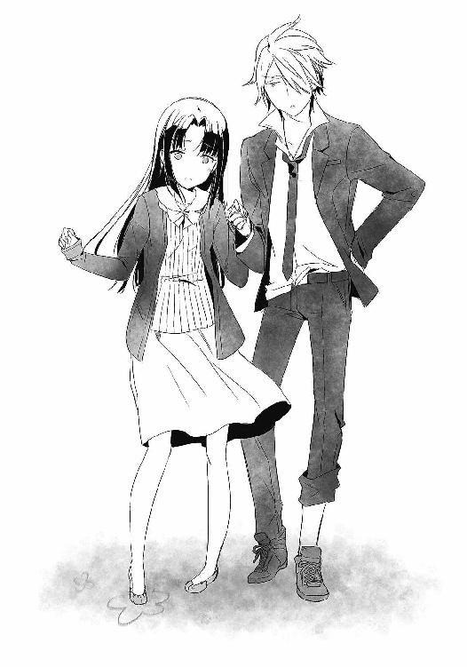
荒い息づかいが、声が、生きていることを喜んでいるように聞こえた。
見たこともないような、力強い瞳。生命力に溢れたその顔。
今までで一番──千秋が美しく、煌めいて見えた。そして──。
「わぁ......」
海の見える丘。その切っ先。俺達は、日の出を迎えた。
力強くその足で立ち、全身に生命力を浴びながら。
「綺麗......」
「うん、綺麗だ」
朝陽に輝く彼女の横顔は、今までに見たこともないような喜びに満ちていた。希望を溢れさせるその顔に、どこか切なくなる。
......さて、そろそろかな。
「千秋」
千秋に声をかけ、俺はカバンを漁った。夢前光の立てた作戦通りなら、この中にアレが入っているはずだからな。
「────あ......」
千秋の顔が、再び泣きそうになる。
「ボイスレコーダー......」
「千秋が歩けたら、こいつを渡すように指示を受けている。この中に、隼人くんからキミへの伝言が入ってるはずだ。俺もまだ聞いてない」
「............隼人くん」
「悪く思わないでやってくれ。隼人くんは、おまえを立ち上がらせるために、あえてこいつを隠したんだ。どうしても甘やかしちゃうからって、精一杯の厳しさを最後にくれたんだ」
「......うん」
さすがに彼女の足が限界のようだったので、俺達は太陽を浴びながら座りこむ。
慣れた手つきで千秋はイヤホンを手にとり、そして──。
「え」
「どうぞ」
左側を、俺に差しだした。
「え、千秋──でも」
「いいんです」
彼女の赤い頬に少し照れながらも、俺は左側のイヤホンを受け取る。そいつを右耳に差しこみ──千秋の頬に顔を寄せる。ごめんね、隼人くん。指定席なのに。
そして、もうひとりの千秋の声が流れてくる。一瞬、千秋が洟をすすったのが聞こえた。
凍りついた心を溶かす──もうひとりの自分に、ようやく会えたんだ。
『いよっす！ これを聞いてるってことは作戦成功ってことかな？ まずはおめでとう千秋！ 信じてたぜ！ おまえならやれるって信じてたぜぇえええ！』
耳に届くのは、相変わらずな緊迫感ゼロの声。
何よりも待ちわびたその声に、千秋が笑顔で涙を流す。
「うん......やったよ......」
『ごめんな、辛い思いさせちゃって。でも、どうしても最後に千秋が強くなったことを確かめておきたくてさ。やっぱりおまえは強い子だよ。弱いわけがないんだよ。今までずっと頑張ってきたんだから。よくやったぜ千秋、おめでとう！』
「違うよ......隼人くんがいてくれたから......私は......」
『千秋。おまえはずっと、俺が千秋の体で苦しんでると思ってたみたいだな。そんなことないぜ。おかげで千秋の辛さを知ることが出来たし、ずーっと何もしてやれなかったけど、こうやって最後に恩返しが出来た。ありがとな、千秋。俺をたすけてくれて』
「たすけてなんかないよ......私は......私は......」
『本当に、本当にありがとう』
「............っ」
ずっとずっと、千秋が求めていた言葉が聞こえる。
隼人くんをたすけた。それを後悔していた千秋が求めていたもの。
やっと今、千秋は後悔の螺旋から解放された。流れる涙と共に──。
『さて、じゃあ感謝はここまで！ 千秋。もうひとつ──大事な話があるんだ』
そしてもうひとつ。
告げなければならない未来を、隼人くんは静かに語った。
『今までごまかしてたけど、俺とおまえのどっちが消えるか。ここで、はっきりさせたいんだ』
千秋の顔が強張る。だけど聞かなければならない。隼人くんが決めた、その覚悟を。
『千秋、おまえにはあんまり詳しく教えなかったけど、やっぱりどっちかが消えなきゃならないんだ。その時は今じゃないけど、近い未来に必ずやってくる。だから今のうちに、どっちが消えるか決めておきたいんだ』
少しためらい、隼人くんは続ける。
『で、肝心のどっちが消えるかだけど......やっぱり俺が消えるよ。元々おまえの体なんだ。俺が奪うことなんて出来ない』
「............」
残酷な言葉が千秋の耳を襲う。避けようのない未来。待ち受ける現実。それを前に、千秋は何も言えない。
『辛い思いをさせてるのはわかってる。でも、千秋を犠牲にするなんて俺には出来ないよ。それじゃあ幸せになれない。だから、いつか来るその日に、俺が消える』
千秋が俯く。無力さに、うなだれる。だけど。
『だけど......いや、だからこそ最後にひとつだけ。千秋にお願いがあるんだ』
彼は言った。笑顔がすぐそこにあるような温かい声で。愛おしく、優しく。
『笑って見送って欲しいんだ。いつか来る、俺の最後の時まで。それが俺にとっての幸せだ。おまえと一緒に過ごせた──もうひとりのおまえとして過ごせた俺の、最大の幸せなんだ。だから泣かないでくれ、千秋』
「......隼人くん......っ」
涙でぐしゃぐしゃな千秋は、必死に涙を拭う。
そして、精一杯の笑顔で、こう言った。
「わかったよ......私......最後まで笑うから......頑張るから......っ！」
今までの泣き顔とは違う。強くなった少女が、そこにいた。
隼人と千秋。ほんとおまえら、幸せ者だぜ。
二度と会えなくても。二度と言葉を交わせなくても。二度と抱き合えなくても。
おまえたちはこんなに──愛し合えたんだから。
「ミッション４、クリアっと」
眩しく照らす朝陽に向かって、俺は呟いた。
その後の話だ。
「あ」
帰り道。千秋をおぶって帰っている途中、彼女が声をあげた。
「ファイル③に、メッセージがあるみたいです」
「え、マジで？」
ファイル③は、隼人くんから俺へのメッセージだ。作戦だと、今日のことをノートに記し、夢前光経由で隼人くんに伝える──という手はずだったので、予定にない行動である。
というわけで、朝の風に震えつつファイルを再生。もちろん恋人繋ぎで。
「............」「............」
そして、聞き終えた俺は──。
「なるほど、ね」
どう笑ったらいいのかわからず、曖昧な顔で曖昧に言葉を零す。
「ちょっとゆっくり考えてからにするよ。それでいい？ 千秋」
「はい。じゃあまた〝後で〟──」
「おお。また、後で」
そうして千秋を家まで送り届けた後、一旦家に帰った俺は、もう学校なんてシカト。そのまま眠りに就き、昼過ぎに目覚めた後は適当に飯食ったり、のんびりしたり。
ノートを取り出し、作戦成功について書き記す。色々と書きたいことはあったが、なんだか書き出すと止まらなくなる予感がしたので、とりあえず今日のところは結果報告だけにしておく。どうせこの後、特大のイベントがあるしな。
晩飯を食い終え、友達の家に泊まってくる──などと、昔なら絶対不可能レベルの嘘をつき、家を出発。終電に乗り、見慣れた駅へ到着。適当にぶらつき、見つけたネカフェで時間を潰す。そして夜明けが近くなってきた頃──。
「お待ちしてました」
「よっ、お邪魔すんぜ」
時計が日付をまたいだ早朝四時半頃。俺は、千秋の家を訪れていた。
「すみません。こんな変なタイミングで来ていただいて」
「まぁしょうがないよ。泊まるわけにもいかないしさ」
本当はそれがよかったんだけど、女の子ひとりの家に泊まるのもね。それに、色々ひとりで考えたかったからさ。すべては、隼人くんの残したファイル③のために。
「じゃあ、千秋──」
「はい」
大きく息を吸いこみ、そして........................気だるい声で。
「俺と、付き合ってください」
「ふふ、笑いが隠せてませんよ」
思わず笑いながら、俺はそう言った。
そう──隼人くんの残したファイル③。そこには、ラストミッションが残されていたのだ。ただ、肝心のその内容が、
『千秋の恋人になれ。あいつを一生幸せにするんだ』
というものだった。おそらく、千秋をよろしくという意味なんだろうけど......ったく、最後の最後に変なことしやがって。まぁ、どっちにしろ答えは。
「ごめんなさい。お付き合い出来ません」
「あいよ、ミッション失敗っと」
完璧に予想していた答えが返ってきたので、俺も軽く流す。それらすべてを読んでいた千秋も、ほくそ笑む。いやまぁ一応形だけはね。
「夢前さんはこのラストミッション、反対しなかったのかしら」
「どうだろうなぁ。また訊いておくよ」
そうして軽く笑い合う。だけど。
「..................」
なぜか千秋は黙りこんでしまった。あん？ どした？
「千秋？」
「..................」
そして、なぜか頬を赤くしてもじもじする。え、何？ まさか本当は付き合いたいとか？
等とありえないことを考えていたら、彼女はもごもごと口を動かした。何かを言いたい、でも、言えないようなその動き。そして、ようやく紡がれた言葉は──。
「その......秋月さん」
「うん？」
「お付き合いすることは......出来ません。私には好きな人がいますし、それは秋月さんも同じですよね。だから、お付き合いは出来ないんです」
ああ。知ってるけど。
「ただ......」
「ただ？」
「......お友達から、始めませんか」
「はえ────？」
思わずフリーズしてしまった俺を誰が責められよう。こりゃまた......予想外な。
赤面。そして上目遣いでうるうるする千秋を見つめる。
どうやらこのミッションシリーズ。失敗しても、クーデレの本性を見られるという景品があったらしいぜ。はは、普段もそれくらいいじらしければかわいいのに。
「だ、だめ......ですか......？」
「いいや、よろしくな。千秋」
彼女にとって、友達を作るとはどういうことを意味するのか。それを知っているなら、これを断るなんて出来るわけもない。笑って応えると、彼女も温かな笑顔で返してくれた。
「友達......か」
知り合って、約一ヶ月程。
初めて会った時からは、信じられない程に温かな千秋の微笑みを見つめる。色々あったけど、この笑顔を手に入れるためと考えるなら、苦労もぶっ飛ぶわな。感慨深いぜ。
月村千秋と友達になる。遅くなったけど、ようやくミッション１クリアってことで。
ようやく手に入れたぜ。彼女の、とびっきりの笑顔をさ。
「あ、そろそろですね」
そして、千秋の言葉で隼人くんのメッセージを思い出す。もうそんな時間か。
ファイル③に残されていた、ラストミッション。それともうひとつ。
隼人くんからのお願いに応えるため、俺は車椅子の千秋と向かい合う。
「気を付けてくださいね。変な子ですから、いきなり妙なことを言われるかもしれませんよ」
「おまえの初対面ドッキリには劣るだろうから大丈夫だよ」
「もうっ」
友達らしく、軽く冗談を交わす。
そして、訪れるその時を待つ。やれやれ、ようやくだな。
「では時間ですね。......秋月さん」
「ん？」
輝く笑顔。もう、弱かったあの子はいない。そんな表情で。
「また──遊ぼうね」
「......ああ。またな」
そして、時計は四時五十四分を指す。
訪れるのは、千秋と彼の入れ替わりタイム。
目の前の少女は死に、そして──。
「....................................ふぇ？」
「よぉ」
ぼけっとしたその顔に、ぶっきらぼうに声をかける。
ああ、随分待ったぜ。てめぇに会える瞬間をよ。
「────あはっ♪」
ぽかんと呆ける顔が、イタズラっぽく歪む。見慣れないその表情に、なぜか苦笑してしまう。この野郎。おまえのせいで本当に大変だったんだからな。
「よお！ 秋っちじゃんか！ はじめまして！」
先ほどまでと、まったく同じ声に同じ顔。だけど、そのトーンと表情は全然違う。
「このタイミングで俺とおまえが話せてるってことは、うまくいったのか!?」
「まぁな。大変だったんだぞ」
これこそが、隼人くんのもうひとつのお願い。早朝の四時五十四分から、俺が夢前光に入れ替わる五十九分まで。許された五分間で俺と話がしたいというものだったのだ。
見慣れた千秋の顔がいたずらに笑うのに、むずがゆい違和感を覚えてしまう。一方、隼人はそんな俺にお構いなしで、いつものボイスレコーダーと同じく、早口で喋りはじめた。
「そっかそっか。良かったぜ～うまくいって。で、どうだった!? ウチのお姫様とは!?」
「あん？ どうって？」
「焦らすなよ！ コクハク！ ちゅーできたか!?」
......ああ。それかい。
「んなわけねーだろ。しっかりフラれたよ」
呆れながら、何言ってんだとばかりに適当に返す。だけどだ。
「え───？ うそ......フラれたの？」
予想外なことに、隼人の顔は呆け顔で固定される。
「なんで!? あんだけ親密になれるよう、色んなミッションやらせたのに！」
「はぁ？」
なんでって......何言ってやがんだこのアホは。まさか本気で千秋がＯＫすると思ってたのか？ いやそれより、今のこいつの口ぶりでわかったんだが、やっぱりあのミッションにはそういう意図があったんだな。
全部で５に及んだミッションの数々。予想通りだったが、こいつの真の目的は、俺と千秋をいかに親密に出来るか──というものだったのだ。
友達になって、抱っこや名前呼びを経て、ラストミッションの告白。これが意味するものはひとつしかない。やっぱり隼人は、自分がいなくなった後のことを考えて、千秋にかけがえのない相棒をプレゼントする気だったんだ。思えば一番最初に、隼人がメールで『期待してるからな』というメッセージを送っていたのも、すべてを見越してのものだったんだろう。
「もぉ─、ちゃんと秋っち粘ったのか？ オクテすぎたんじゃねぇ？ 光っちも『坂本くんは結婚まで童貞を捨てられないタイプだね！』て嘆いてたぞ。せっかくお膳立てしたのに」
「やかましいわ」
と、悪態をつきたくもなるが。
こいつの境遇を考えると、どんな思いでミッションを企てたのか嫌でもわかってしまう。それだけに、苦い顔しか出来ない。でも、普通に考えて付き合うは無理だろ。
「ちぇ。俺の計画じゃ、友達になって抱っことかしてるうちに親密になってさ。んで、歩けるようになるイベントを経て『秋月くんかっこいい！』とかなる予定だったんだよ。でもって、ビシィッとした告白の果てに、勢いで接吻！ さらに、俺と早朝に会うのを口実にお泊り。我慢出来なくなってついつい──そして入れ替わった俺に『隼人様！ 千秋さんを僕にください！』的な流れだと思ってたのによぉーっ」
「んな流れになるわけ......っておい！ やめろやめろ！」
ぼやく隼人に、気だるくツッコんでいたら。隼人は不満そうな顔のまま、予想だにしない行動をとり始めた。
「ほんとにいいのかぁ!? 結構でかいし柔らかいぜ？ ほら！」
「だぁもう！ めくるな！ 千秋の体だぞ！」
中身が男だとわかっていても、なまじ見た目と声が慣れ親しんだ千秋そのものなので、思わず赤面してしまう。くそ！ 笑うな！
「はは、悪い悪い。いやでも、俺は本気で千秋はＯＫすると思ってたぜ？ だってあいつ、秋っちのことめちゃくちゃ気に入ってるみたいだったし」
「そんなわけねーよ」
ズレたことをほざく隼人に、ちょっと赤面しながらツッコむ。まぁ、自分で言うのもアレだが気に入ってもらえてたとは思う。でも、それと恋とはまた別だろ。
「千秋にはたぶん、他に好きな人がいたんだよ」
「えー？ そんな素振りなかったぞ？ いねーってそんなの」
「いたんだよ」
あーもう......ったく。
鈍感極まりない隼人を前に、頭をガシガシ。夢前光といいこいつといい、なんでこう............はぁ。ほんと、相方が鈍感だと苦労するぜ。なぁ、千秋。
「まぁいーや。恋人はだめでも、一応、最低限の目標はクリア出来たしさ」
「目標？」
隼人の言葉に、訊ね返す。
「なれたんだろ。本当の友達に」
「──────っ」
そして、驚愕。呆然。すべてを見透かした瞳に、黙るしかない。
......いやはや。どうやらこの男、ただのモテ男じゃないみたいだ。お見それしましたよ。
「さて。話したいことは山ほどあるけどねん。時間がなさすぎるからさ。とっとと本題にうつろうぜぇい、秋っち」
「......ああ」
そして、隼人の顔色が真剣な色に変わる。
「ラストミッション失敗だーけーど。今回は特別だからな」
それを合図に、俺も悟る。隼人がなぜ、このタイミングで俺と直接話す機会を望んだのか。
幾ばくかの沈黙。その果てに、隼人くんはよく通る声で、ハッキリと言った。
俺が求め続けた──その答えを。
「アトリエの日誌には、おまえの寿命すべてを代償に光っちをたすける方法が書かれている。チャンスはたった一回。そこにすべてが懸かっているんだ」
「──────っ」
唾を飲む。ついに目前に迫った、真実の深さに。
「そのための手段は──」
そして、隼人は口を開く。
俺達の、未来を賭けた言葉を──......。
「今度教えるぜ♪」
「だあがあああああっ!?」
......ずっこけた。思わず、すっ転んでしまった。
「しょーがねーだろ。ややこしい方法なんだよ。それに、おまえが夢前光に入れ替わるまでもう二分もねーんだぞ。説明しきれないよ。アトリエ日誌は誰も知らない場所に隠してあるから、後日、秋っちにしか見れない形でメールを送る。それでいいだろ」
「......ああ、それでいいよ」
もったいつけやがって、ちくしょうめ。笑ってんじゃねぇよ、遊びやがって。
「......なぁ、隼人」
「んー？」
なんだか肩の力が抜けてしまった俺は、そのまま床にあぐらをかき、気だるく訊ねた。
もう一度。本人の口からどうしても聞きたかった──その覚悟を。
「おまえはやっぱり......死ぬって、決めてるんだな」
「ははっ」
笑って隼人は応える。なんで......笑えるんだよ......。
「千秋へのメッセージにもあったろ。俺が生き残ってもしょうがねーよ。だからこそ、最後にやり残したことを一気に片付けたんだ。秋っちにご協力いただいて、な」
「............」
どこまでもまっすぐな笑顔と言葉に、無性に泣きたくなる。だって──。
「......あの子は、またひとりになる」
「んなことねーよ。きっとすぐに友達も彼氏も出来るさ」
「でも──っ！」
「あの時とは、もう違うんだ」
少し大きく放たれたその言葉。
どこまでもどこまでも。最愛の人を信じた、力強い声。
「千秋は......何もかもが嫌になって、自分を追い詰めていた。だから俺は、リハビリをやめろって言った。だけど、それが原因で歩くことから逃げちゃってさ。さらに俺が死んで、千秋は再び自分を投げ出しそうになった」
「............」
「でも、おかげでおまえに出会えた。ひとりじゃなくなった」
そして、彼は言った。とてつもなく強い瞳で。
「死んだ甲斐があったぜ。千秋は──強くなれたんだ」
どこまでもどこまでもどこまでも。俺の内側に、強く響いた。
「............っ......」
泣きそうになるのを、どうにか堪える。
「だからさ、頼むぜ秋っち。たすけろとは言わねーから、あいつを見守ってくれよ」
ニッと輝いた笑顔が、俺を見下ろす。その顔に、俺は俯くしかない。
なんで......なんでおまえが、死ななきゃならないんだよ......。
もっと話したい。言いたいことがいっぱいある。もっともっと、一緒の時間を過ごしたい。
だけど、時間は残酷だ。時計の針は、四時五十八分を回ってしまった。
「じゃ、そろそろお別れだな。最後に言い残したことはねーか、秋っち？」
「......頼みがある」
「お？ 何だ？」
わくわくするようなその顔。だけど、俺のお願いを聞いた瞬間、その顔は──。
「アトリエの日誌の中身については、絶対に夢前光に話さないでくれ」
「..............................」
一気に、強張ったものへと変わった。
「......口止めする理由は？」
「俺から夢前光に話す。その後、夢前光が何を訊いても答えないでくれ。頼む」
何かを言いたげに隼人の口が開く。しかし、俺の覚悟を察してくれたのだろうか。
「......あいよ。約束するぜ」
「......サンキュ」
そして、時計の針は残り三十秒を回る。笑う、隼人くんの顔に寂寥を感じる。
この世界で俺達は生きているのに。俺とこいつは、たった五分しか会うことが出来ない。
でも、だけど。
それでも、たった五分でも話せてわかったことがある。
「なぁ、隼人」
友達を作るのが下手な俺だったけど。
「んー、どーした？」
こいつとは。
「その、なんつーか......」
生きている頃に出会っても──。
「楽しかったぜ、色々と」
いい友達に、なれたんじゃないだろうか。そう思うのは......自惚れなのかね。
「ははっ。そいつはどーいたしまして」
隼人は笑う。時間は迫る。
「隼人。最後にもうひとつだけ訊かせてくれ」
あと、十五秒。
「最後まで慌ただしい奴だな。何だよ」
あと、十秒。
「どうして......千秋のためにここまで尽くせるんだ」
あと、八秒。
「......その言葉、そっくりそのまま返すよん。俺とおまえは同じだ」
「え？」
あと、五秒。
「じゃあ訊くけど、なんで秋っちはこんな面倒なミッションをクリアしようと必死になったんだ？ 千秋から、どちらか片方しか生き残れないと知った後でも──」
あと──。
「どうしてそれでも、そのための手段を知ろうと必死になったんだ？」
──────。
何かを言おうとした。何を？ 思い出せない。
でも、その瞬間。確かに俺にはわかったんだ。
隼人がどうして、千秋のために必死だったのか。
俺がなぜ、ここまで夢前光のために走ったのか。
俺がいったい、何をしようとしているのか。
すべてを理解した四時五十九分。俺はそこで、再び死を受けいれることになる。
──ある、ひとつの決意を秘めて。

『坂本くんの謎を解き明かせ！ このコーナーは、坂本くんの秘密を光ちゃんがどんどん暴露していくコーナーです！』
布団が愛しい冬の朝。
雪でも降ってんじゃね？ と言いたくなる程に寒さが本格化してきた、その日。いつぞやを思い出させるケータイアラームに目を覚ます。久しぶりだな、これ。第二弾か？
『それでは早速まいりましょう！ 坂本くんはなぜ背が高いのか！ おそらくですねぇ、キリンが高いところの草を食べるために首を伸ばしたのと同様、彼は女性の胸チラを上から眺めるために背を伸ばしたんですよ！ さすが坂本くんだ！』
「どんな都合のいい進化だよ」
苦笑してツッコみながらも、そのままアラームを切らずに待つ。
『それじゃあ今日はこの辺で！ しーゆーっ！』
「............」
夢前光の語りは終わる。だけど、俺の予想が正しければ。
『..................もう聞いてないよね』
ほらやっぱり。以前みたいにメッセージが入っていると思ってたけど、予想は的中だ。
『............うん、きっと聞いてない』
そして軽い咳払いが続く。さぁ、今度はどんなメッセージを残してるんだ？
『............』
「............」
『坂本くん』
きた──。
『..........................................何期待してんのｗｗｗｗ ぶふふっｗｗｗｗ』
──プッ。
............くそ、やられた。
「しょうもないことばっかりしやがって」
アホなやりとりを経て、ようやく俺はベッドから這い出る。まぁいい。今日はこんなことしてる場合じゃねーからな。というのも、一昨日にこんなメールが届いていたからである。
『アトリエ日誌の隠し場所を教えるぜ！ 添付の地図を見てくれよな。Ｂｙ隼人』
俺と隼人の五分だけの邂逅。その翌々日に、夢前光にバレないようにするため、自動送信機能を使って送られたメール。本当はすぐさま行きたかったのだが、かなり遠い場所だったので、休日になるのを待ったというわけだ。
「うし、飯食ったら行くか」
というわけで、俺はさっさと朝食をすませ、家を出ることに。
寒さの割に青空が澄み渡る冬空の下。地図に従い、電車やバスを乗り継ぐことなんと五時間。ようやく見えてきたのは、山奥に位置する廃墟──そう、例のアトリエだった。枯れ葉まみれの、時間が止まった世界。忘れられたその場所にて、埋められていたそいつを掘り起こす。
「これが......アトリエの日誌」
錆びた鉄製の箱に納められた日誌は、ページを開くだけで崩れそうな程に脆かった。中には聞いていた通り、少女二人による入れ替わり日記が。そして──。
「『先日、もうひとりの私の魂が、この世を去りました。彼女の願い通り、私達と同じ運命を辿る人のために、知り得た秘密をすべて記します』──か」
日付は汚れで読めない。でも、確かにそこには求めていた情報が記されていた。
そして俺は日誌を読み進める。何度も何度も、一文字ずつ間違えないように。
「なるほど、ね」
どれくらいか過ぎた頃。すべてを読み終えた俺は、日誌を置いた。そして──。
「......うし、決めたぞ」
『死後、４４４日後に死んだ場所へ行くこと──かぁ』
その日のノートはこんな感じの書き出しだった。
一昨日。アトリエの日誌を手に入れた俺は、そこに書かれてあった情報をすべてノートに書き写した。日誌を持ち帰ろうかとも思ったんだが、なんとなくこいつはこのアトリエに置いておくべきかと思い、俺にしかわからない場所に隠しなおすことに。
んで、俺が交換日記に記した、なが～～～～い内容がこちらだ。
『①魂は、ひとつの体に二つ以上は定着出来ない。ゆえに、後から宿った魂は適合することなく徐々に消えてゆく。最初は五分、次は三十分。そこから先は不規則に、表に出ている時間は減っていく。そして、死後４４４日を境に、憑依している魂は自動的に消滅する。
②防ぐ方法はひとつだけ。それは、死神と呼ばれる存在と交渉することである。それにより、憑依した魂は宿主の体に残ることが可能となる。ただしその場合、宿主の魂は──交渉の瞬間に消滅する。
③交渉する手段は、死後４４４日目に、死んだ場所を訪れることである。そこで一度だけ、死神と交渉することが可能となる。
......以上、ちょっとわかりにくいと思うので、整理しておくぞ。
おまえの命日は四月八日。その４４４日後なので、来年の六月二十五日がＸデーにあたる。その日に、おまえが死んだ横断歩道を訪れることで死神と交渉出来るわけだ。そして、その一度きりの交渉で、どちらが生き残るかを選ぶこととなる。
まず、俺が生き残る場合。その場合は六月二十五日に横断歩道を訪れ、死神との交渉で〝坂本秋月が生き残る〟と伝えればいい。すると、その日を最後におまえの魂は消滅し、俺は寿命を取り戻すわけだ。
次に、おまえが生き残る場合だけど。その場合は、六月二十五日の交渉で〝夢前光が生き残る〟と伝えればいい。その瞬間に、俺の魂は消失。体は完全におまえの物となる。
ようするに、来年の六月二十五日。この日が、俺とおまえのどちらかが消える日となるんだ』
......以上。
アホなあいつにも伝わるよう、出来るだけ丁寧に書いたメッセージ。
それに対する返事は。
『ごめん。ちょっと考えさせて』
短い言葉。無理もない。俺だって真実を知った時は、書くのをためらった。だけど、いつまでも先延ばしに出来る問題じゃないのも事実だ。
隼人と千秋については、すでに隼人が消えるという結論が出ている。隼人は千秋にいつ消えるのかということを伝えていないようだが、千秋はそれでいいと言っていた。明確に日にちを知ってしまうと耐えられないから。だから、このまま残された時間を生きて、いつかくるその日を待つことに決めたらしい。だったら、俺に出来ることなんて何もない。二人に残された時間を、見守ってやるだけだ。
「どうしたもんか......」
カレンダーを見る。十二月中旬の金曜日。冬休みまであともう少し。
残された時間は刻々と、終わりに近づいていた。
「んー......」
その日、目覚めた瞬間に抱いたものは、やたら寒いなという感想だった。
「起きたですか？」
布団がうごめく。んあ、雪瑚か？ なんで俺の布団に？
「もう少し寝てていいですよ」
寝ぼけた頭に、そんな声が響く。じゃあそうさせてもらうぜ。しかし何だって俺の布団に侵入してるんだ。抱きしめると温かいからいいけど。
「あたたかい......いい匂いです......」
おいおい。兄妹だからってそんなにしがみつくなよ。あと〝なの〟が抜けてるぞ。『いい匂いです』じゃなくて『いい匂いなのです』だろ？
「もう一回......もう一回だけ......」
それよりちょっと声がおかしいぞ？ いつもはもっと高い──。
──ちゅ。
「ぶふぉほげはばぁぁあああああッ!?」
え、何!? いいい今、越えてはいけない感触が唇に!?
「──って、木下くん!?」
「えへへ。おはようです、おにいちゃん♥」
驚きはそれだけではない。
「──って、風城!? なんで一緒の部屋で寝てるの!?」
「なんだ......朝から騒々しいぞ坂本......」
さらに驚きは続く。
「──って、もぴりん!? なんでおまえまで!?」
「ごご、ご安心を！ 明け方より木下殿に×××されていたことなど、見てませんゆえ！」
ちょ、ちょっと待って。な、何この状況？ つーか今気付いたけど、ここどこ？ なんでこんな旅館みたいな大部屋にいるの？
しかし混乱はさらに続く。今度はドアの開く音が聞こえ、襖が開いたかと思うと──。
「にいさん、そろそろ起きるので──ぶぅうえっへ!? ななな、なんで薫と一緒に上半身裸でお布団の中に!? キタコレですか!? キタコレなのですか!?」
今度は、雪瑚がヨダレをだばだば垂らしながら登場した。
「ま、待って！ ここどこ!? 一体この状況は何なの!?」
だが、状況はさらに加速する。雪瑚に続いて現れた女子達が、混乱にトドメをさす。
「......坂本くん、そういう趣味だったんだ......」
「あらあら。幸せそうですね、先輩。期待した美紗貴が馬鹿でした」
「か、かすみちゃん......？ 美紗貴ちゃんまで......？」
いよいよ頭がバーストしかけるが、唯一頼りになる男、風城が察してくれたようだった。
「あー坂本、落ち着いてくれ。これには浅いワケがあるんだ」
その言葉と、げんなりした表情からすべてを悟る。ああ、そういうことか......。
「夢前光、ね......」
『おっはー坂本くん！ 二泊三日のスノボ旅行に来ちゃったよん！ みんな急に声掛けたけど、すぐに集まってくれたの！ 坂本くんの人望はパねぇですぜ！』
旅行カバンの中にあったノートの書き出し。そこにはふざけた文章が。
「昨日の朝に、いきなりスノボ旅行に誘われたんだよ。この時期によく旅館を押さえられたと思うよ。昼過ぎに出発して、夕方到着。ちょっとだけ滑って、一泊──という流れだ」
ただ今、俺と風城は朝食後にこっそり抜け出し、談話室にて状況確認をしていた。ったく夢前光め。アトリエ日誌の件で悩んでいると思わせておいて、なんでいきなり旅行なんだよ。
「......昨日、無事に過ごせたのか？」
「そんなわけがないだろう。スノボは楽しくやれたんだけど、その後が......」
やっぱりというべきか。こんな頭のアレなメンバーで旅行という点に大いに不安を感じていたのだが、風城の表情的に相当やばかったようだ。
「夜がキツかったんだよ。光が王様ゲームをやろうなんて言いだしたせいで......」
旅行の夜×残念極まりないメンツ×王様ゲーム×夢前光。なんと悪魔な方程式か。
「本当に大変だったんだぞ。光がやたら何回も王様になったせいで、真田さんと香寺さんが口づけしたり、モヒカン君がパンツ一丁で雪山ダイブしたり、木下君が好きな人の名前を言わされたせいで妹さんが鼻血を出して倒れたり......」
おおう......もう、大惨事じゃねーか......。
「あと、おまえは王様になった時、女性陣に一回ずつ野球拳を挑んでたからな。神懸った勝率で脱がせまくってたけど、謝っておいた方がいいんじゃないか」
「なんてことしてんだボケ......」
くそ、うらやましい。つーか夢前光も男性陣の前で何やってやがるんだ。
「風城。おまえ、かすみちゃんや美紗貴ちゃんの脱ぐとこ見たんじゃないだろうな」
「俺は光以外の女に興味がない」
ああ、そーでしたね......。
「それと、寝る時が大変だったんだよ。木下君がやたら光に夜這いをかけようとするからさ。守り切るのに必死だったさ。俺だって我慢してるのに」
よくやった風城。不穏なひと言は聞かなかったことにする。
「坂本に入れ替わる早朝まで凌いだ時にはヘトヘトだったよ。その後は木下君の好きにさせたけど、すごいことになってたぞ。おまえ、よくアレで起きなかったな。ははっ」
笑いごとじゃねえええ！ 最後まで守りきれや俺の貞操！
「くそう......だから旅行は嫌なんだよ......」
ちなみに。持ち出したノートには、よっぽど旅行の夜が楽しかったのか、野球拳やら女性同士のマジギレしながらのキスやらが、楽しそうにイラストで紹介されていた。でも──。
「............」
突然の旅行。夏にも似たことがあったっけ。それが意味するものを、俺は知っている。
アトリエ日誌により、辛い選択を突きつけられた。きっとこの旅行はいつかと同じ、不安を紛らわせるための現実逃避。もしくは、やり残したことへの清算──。
「風城」
「ん？」
目の前の男に、俺は言った。
「夢前光と......あれから何か話したか？」
「......いや」
風城にだけは、アトリエ日誌のことを伝えた。こいつもよく平常心を保って付き合ってくれていると思う。内心、穏やかであるはずがないのに。
「坂本」
だけど。きっと、こいつはわかってくれているんだろう。
俺の想いを。夢前光の想いを。そして──。
「俺は、どんな結末になっても、おまえ達の選んだ未来を受けいれるさ」
「......ああ」
夢前光が、選ぼうとしている未来を。
「わぷっ！」
そして、お昼過ぎだ。俺達は、ゲレンデへとやって来ていた。
「だ、大丈夫、かすみちゃん！」
俺の上に覆いかぶさるように転倒したかすみちゃんに、下から声をかける。
本日のゲレンデは豪快な晴れ模様。青く輝く大空が、白い雪と相まってとても眩しい。リフト付近から流れてくる冬の定番ソングが、景気良く響いている。
「ご、ごめんね坂本くん。わたし、スノボとか下手で......」
そうなんですか。その割に、前を滑る俺に凄いスピードで追いついたかと思うと、急にたどたどしく慌てふためき、俺を押し倒したように見えたんですが、気のせいなんですね。転ぶたびに自慢の胸を百発百中で俺の顔に押し付けているのも、きっと偶然なんですね。
「そ、それにしても坂本くん、今日は上手だね。滑るの......」
「ああ、まぁね」
「昨日はしょっちゅう『うわー止まらないーぶつかっちゃうー』なんて言いながら、たくさん押し倒してくれたのに..............................チッ」
!? 何か今、舌打ちが聞こえたのは気のせいですよね!?
「ははは......」
ちなみに今、俺達は、俺・かすみちゃん・美紗貴ちゃんの三人で滑っている。雪瑚はどうもリフトが怖いらしく、麓で木下くんと一緒に雪遊び中。風城は「山が俺を呼んでいる」等とのたまいながら、上級者コースへ行ったきり帰ってこない。もぴりんに至っては、その辺で女子小学生軍団に雪玉をぶつけられていたはずなんだけど、いつの間にか消えてしまった。ゲレンデの端っこに、モヒカン仕様の巨大雪だるまがあるけど気のせいだよな、うん。
そして、美紗貴ちゃんもさっきまで近くにいたはずなのに行方不明だ。かすみちゃんが滑り降りて来る時に、勢いよく誰かを突き飛ばしているように見えたのと関係があるんだろうか。
「ね、ねぇ坂本くん......今日も、王様ゲーム......するんだよね」
そんなことを考えながら、ゆるゆる滑っていたら。かすみちゃんがそう切り出した。
「坂本くんてダイタンだよね......。昨日も『①番が女なら王様に氷を口移し！ 男なら一発芸！ モヒカンくんならパンツ一丁雪山ダイブ！』だなんて......」
「いや、あれはその......」
「他にも『②番が女なら、王様と一分間布団の中！ 男ならモノマネ！ モヒカンくんならパンツ一丁雪山ダイブ！』とか......」
「えと、んと......」
「あと『③番が女なら、王様を生足で踏みつける！ 男なら好きな子に告白！ モヒカンくんならパンツ一丁雪山ダイブ！』てのもあったね。わたしが③番だったらよかったのに......」
死ぬ！ もぴりん死んじゃうから！ そしてキミも何言ってんの!?
昨晩の恐怖におそれおののくも、今日のかすみちゃんは止まらない。さらに続く言葉は。
「そ、それでね。今日はわたし、引いた番号をそれとなく坂本くんに伝えようと思うの。だから坂本くん、王様になったら............なんでも命令していいからね......」
「..................え」
それってつまり......。
「いつも、女の子な気持ちにしてくれるお礼......したいから......」
そして訪れるのは、恥ずかしい沈黙。そんなものに包まれながら、俺達はゲレンデを下りきる。なんと声をかければいいのか。戸惑いながらリフト乗り場へ到着した時だ。
「坂本くん......」
かすみちゃんの纏う空気が変わる。
「わたし......もう一回、あらためて伝えたいことがあるの......」
「え......」
たどたどしく、真っ赤な顔で唇が震える。落ち着かない視線が俺の心をざわつかせる。
そして、やって来るリフトが緊張を最高まで高めたその瞬間。意を決したように、彼女の潤んだ瞳が俺を見据えて──。
「坂本くん！ わたし、坂本くんのことが──」
「さぁ先輩！ 美紗貴と一緒にリフトに乗りましょう！ あ、ちょっとどいてくださいませ」
ドン──ッ！
あ......。
「わっ！ ちょ、ああ────────っ！」
かすみちゃんの叫び声が聞こえる。
リフトがやってくるその直前。突如、かすみちゃんを突き飛ばして現れたのは──。
「真田先輩、危ないですよ。次のリフトへどうぞ」
美紗貴ちゃんだった。そして、そのまま彼女はやってきたリフト──つまり、俺の隣に腰かける。かすみちゃんはというと、ひとつ後ろのリフトへ追いやられてしまった。
「それより先輩、寒くないですか？ 美紗貴の体をくっつけてさしあげます」
「え、あ、えーと......」
拒否権ナシ。美紗貴ちゃんの体が、ぴっとり押しあてられる。さらに、暖かそうなニット帽に包まれた小さな頭が、俺の肩にちょこんと座る。いかん。これはいかん。今、後ろのリフトからオッサンみたいな咳払いが聞こえたもの。リフト降り場が血に染まるぞ......。
「それより先輩、昨日はとても激しかったですね。野球拳等とのたまい、美紗貴をあられもない姿にするなんて。今晩は覚悟の程を、よろしくお願いします」
う......。そこを言われると言い返せない......。
「ご、ごめんね。男子がいる前であんなこと......ちょっとハメ外しすぎちゃってさ」
とりあえず昨日の愚行への謝罪と言い訳。すると、美紗貴ちゃんはふーっとため息をひとつ吐いた。そして、少し不貞腐れたような顔で。
「......まぁ、気になさらないでください。脱いだといっても、風城先輩はホモかと思うくらい先輩の笑顔に見とれっぱなしでしたし、木下さんはホモだと断定するくらい先輩にすり寄っていたうえに、モヒカン先輩に至っては第一ボタンを外しただけで失神してしまい、あまりの注目度の無さに虚しくなったくらいですので」
............ごめんなさい。
「そんなわけで、今日は埋め合わせをしていただきます」
「へ？ 埋め合わせ？」
そして、彼女はイタズラな微笑みでこう言った。
「今日、美紗貴は自分の引いた番号を先輩にそれとなくお伝えします。先輩の望んだ美紗貴をご覧にいれますので、どうぞお楽しみに」
「え、な、なんでそんなこと......」
「先ほど、真田先輩と番号を教え合う談合をしておられたようですので。先輩、もし美紗貴の番号を知りながら、真田先輩を選んだ場合は..............................わかっていますよね」
「う............」
やばい。また後ろのリフトから謎の咳払いが......これ、どう転んでも俺が死ぬじゃん。
「ふふふ、とっても楽しみです」
そんな感じに得体の知れない寒さに曝されながら、長いリフトは上へ上へと進んでゆく。心なしか、頬に当たる風も冷たいぜ。
「なぁ、美紗貴ちゃん」
そして、降り場が見えてきた頃。ふと、無意識に俺は訊いてしまった。
「俺のこと────好き？」
「は────────？」
言い終わってから気付く。しまった。俺、何を──。
「や、ごめん。なんでも──いでででででっ！ ゆ、指っ！ そっちに曲がらないから！」
「ふふふふふ。女心を弄ぶのがお好きなようですね。どういうおつもりですか？ 返答次第では、ここで飛び降りていただきますので」
死ぬから！ ごめんごめんごめんなさい！
「いや、その......」
先ほどのかすみちゃんの真っ赤な顔を思い出す。
知りたかったんだよ。俺が......いや。あいつが、どれだけ皆に好かれているのかを──。
「ご、ごめん。何でもないから気にしないで──」
「好きですよ」
「──────っ」
思いがけない言葉に、目を見開く。
唐突なその言葉にじゃない。唇を──彼女のそれで塞がれたから。
「かつての憧れの人を、上回る程に」
「..................」
真っ赤に俯く俺を、彼女はくすくす笑う。
「色々、悩んでおられるようですね」
「え？」
「昨日も、楽しんでいる一方で何かを考えていたのを、美紗貴は知っておりますよ。それでも、答えは出たんですよね」
「............答え？」
「仰ってたじゃないですか。『みんなと旅行に来てよかった。これで決意が出来る』って。先輩のお役に立てたようで、嬉しいです」
..................。
昨日。あいつが何を決意したのかわからない。
でも、どうやら何か得るものがあったようだ。あいつが大好きな人達との、この旅行で。
「先輩」
そして美紗貴ちゃんは言った。優しい声と、愛しい笑顔で。
「今日の美紗貴は、あなたの望んだ香寺美紗貴でしたか？」
「............うん、ありがと」
本当にありがとう。俺達を......好きでいてくれて。
そうして、火照った体のままに辿り着いたリフト降り場。
......後ろから現れた魔王により、惨劇が訪れたのは言うまでもない。
「......にいさん」
「おお、雪瑚。おはよ」
翌々日。旅行も終わったその日。雪瑚が、やけに暗い顔で俺の部屋を訪れた。どうしたよ。
「にいさんにファンレターが届いているのです......」
「ファンレター？ え、誰から？」
「にいさんから......」
「............」
ややこしいことを......。
宛名は坂本秋月。差出人も坂本秋月。そして肝心の裏面は『ひと目見た時から気になってました！ サインください！』である。うう......さっきから雪瑚の視線が痛い......これじゃ、ただの痛いぼっちによる自作自演じゃねーか！ 何やってんだ昨日の俺！
「ったく............ん？」
そして俺は見つける。ファンレターの一番下。そこに書かれた、謎の文字列を。
『Ｄドラ→ひぞう→かくれんぼ』
「これは......」
一瞬迷うが、すぐにわかった。
「Ｄドライブ→秘蔵動画フォルダ→隠しフォルダ......か」
すぐさまパソコンを起動させ、指示通りに辿っていくと──あった。
いつの間に作られたのやら。隠しフォルダが作られ、その中にはメモ帳がひとつあった。
『テレビでも見ながら読んでね』
そのタイトルに、何が書かれているのかを察する。優しいあいつのことだ。深刻に受け止めないでというメッセージなんだろう。
そんな優しさに唇を噛みながら、ダブルクリック。そして俺は目にする。
夢前光の──決意の言葉を。
『坂本くんへ。ごめんね、返事が遅くなって。いろいろ考えてたら、ぐるぐるしちゃって。でも、もう決めたよ。ちゃんと自分で決めたから』
自分で決めた──。
その言葉になぜか泣きそうになりながらも、俺は続く文章を読み進めた。
『わたしが──消えることにするね』
「............夢前光」
そうだよな。おまえは......そう言うよな。
『ふふ。いざこうやって死ぬのが決まっちゃうと、なんだか怖いね。だけど、やっぱりキミを犠牲にするなんて出来ないよ。こないだのスノボ旅行で確信したの。皆、急な呼びかけなのに応じてくれて、ずっとキミの周りにいてくれた。そして、楽しそうな笑顔を見せてくれた。それで確信出来たの。キミは皆にとっても愛されてる。そんなキミの人生を終わらせて生き延びるなんて、わたしには絶対に出来ない』
「............」
違う。本当にみんなに愛されてるのは、俺じゃなくて......。
『ごめんね。一生懸命生き延びる方法を探してくれたのに、生きられなくて。でも、これがわたしの運命なんだと思う。むしろ、終わったはずの人生を延長出来たんだから、悔いなんてないよ。それどころか、坂本くんの人生を体験出来て本当に楽しかった。だから......わたしの人生は、ここでおしまい。六月二十五日に、わたしが死神さんに交渉するよ。ロスタイムをくれて──ありがとうって』
「............くそ」
わかってはいた。あいつがこの選択をすると、わかっていたんだ。だけど......。
『それともうひとつ。決めたことがあるの』
さらに、夢前光のメッセージは続く。
『お母さんに会いに行くよ。そこで、全部話すことにする。決めた、今度こそ逃げない』
それがどれだけ残酷なことか。考えるまでもない。それでも、夢前光は会いに行くと決めた。きっと、想像も出来ないような覚悟を秘めて。
「夢前光......」
あいつは、この日記を書くまでにどれだけ悩んだんだろうか。どれだけの苦しみを乗り越えたんだろうか。本当は、怖いだろうに。でも、それをすると俺が前を向けないから......。
......だったら、俺の答えなんて決まっている。
「ああ。わかったよ、夢前光」
そして、ペンを手に取る。ノートに記すのは、あいつへの返事だ。
『わかった。おまえがそう言ってくれるなら、もう何も言わない。この話は終わりにしよう』
終わりにする。そうしないと、せっかくの決意に泥を塗ってしまうから。
『残された時間。半年しかないけど、精一杯楽しもう。俺とおまえで坂本秋月なんだ。最高の人生にしてやろうぜ』
「うしっ！」
気合いを入れて、ケータイを手に取る。コールする相手は、風城だ。
『どうした坂本？』
「思い出を作ろう」
挨拶をショートカット。冬の空を見上げながら告げたのは、そんな言葉。
『は？ 思い出？』
「ああ、思い出」
吸いこまれそうな程に、高く高く青い空。なんだか空に手が届きそうだ。
「あいつはこの世にいた。俺の中にいた。それを証明する、確かな思い出をたくさん作るんだ」
『............っ！』
「そして、笑って見送ってやろう。出来る限りの笑顔で、あいつを」
『............坂本』
察しのいい男だ。それだけで、夢前光がどんな決断をしたのか理解してくれたようだ。
そして、こいつも優しい男だ。何を訊くでもなく、わかった──と言ってくれた。
電話を切り、カレンダーを見つめる。あと四ヶ月で、夢前光と出会って一年──か。
「......これで、いいんだよな」
そして、時間は流れた。
夢前光は色々とふっきれたのだろうか。これまで通り、イタズラ好きでおてんばで。そんな毎日を変わらずに送り始めた。
『とりあえず、いっぱい遊ぶぞぉ！ 光ちゃんカレンダーは毎日が日曜日！』
「ニートじゃねぇんだぞ」
他にも、
『あと、童貞卒業も目標にするからね！ いつまでも光ちゃんを想って、女の子と付き合えないようじゃ心配だから！』
「ほ、ほっとけ」
さらには、
『一度でいいから男湯に入ってみたい！ 部活帰りの全裸イケメンを堪能したい！』
「さすがにそれはやめとけよ」
『......余は満足じゃ♥ めっちゃ不審者扱いされたけど』
「おいぃ！ ほんとにやったのか!?」
などなど。一日ごとにボルテージを上げつつあった。やれやれ。おかげさまで、また俺があちこちでアホやってる噂が飛び交ってるじゃねーか。楽しそうだからいいけどさ。
『やっほぉう坂本くん！ 明日、クラスのみんなとカラオケ行く約束しちゃったからね。頑張るんだぞ♪』
「もう......いらんことを」
ほくそ笑みながら、日記の続きを読むと──あん？
『坂本くん』
「ん？」
『えへへ。坂本くんでよかった♥』
「え、あ......んん？」
投げキッスをこれでもかというくらいにぶっ放している謎めいたイラストに、眉をひそめる。よくわからんけど、楽しそうだな。
だけど、残酷な現実もどんどん迫っていた。三十分短くなっていた夢前光の時間はさらに短くなり、今では一時間半も短くなっていたのだ。だけど、夢前光はそのことを嘆いていない。だったら、俺が泣き言を言うわけにはいかない。気丈に振る舞わないと。
そして、さらに時間は過ぎていく。
「あ、坂本くん......さ、寒いね！」
どういうことだ......。
年の瀬も迫ってきたその日。俺は、日も沈む時間帯に駅前を訪れていた。というのも、今朝のノートに『午後六時に駅前に行くのだ。バッグと服は用意してあるからね』と書かれてあったからである。
「あ、そうだ。これ、待ち合わせの時に渡してくれって言ってたよね。どうぞ」
そして現在。午後六時に駅前でなぜか俺を待っていた様子の少女──かすみちゃんは、封筒を差しだしてくる。え、何これ？
「ど、どうしたの、坂本くん？ 昨日言ってたよね。待ち合わせの時に渡してくれって......」
「あ、いや......ありがとね」
かすみちゃん経由の、昨日の俺からの手紙を受け取る。中を開くと『いつまでも光ちゃんに未練タラタラじゃ困るからね！ しっかりかすみちゃんをエスコートするんだぞ！』である。そしてその瞬間に、すべてを察する。くそ、そういうことか。
どうやら夢前光は、俺が自分に片思いしているままだと困ると思ったんだろう。そりゃあ俺だって風城みたいになる可能性があるからな。夢前光が心配して、かすみちゃんとくっつけようとするのもわかる。でも、このシチュエーションはまずい。だって今日って──。
「嬉しいよ坂本くん。こんな大事な日に......クリスマスイブにわたしを選んでくれるなんて。つまり、期待していいってことだよね」
そう、なんと今日はクリスマスイブなのである。
ちょっともう......これはやばいって。だって、かすみちゃんが完全に女の顔してるもの。服とか髪とか、一世一代の勝負してきた感じだし。しかも今、夜の六時だよ？ さっきからかすみちゃんは「今日は友達のところにお泊りするって言ってきちゃった」とか言ってるんだよ？ 周りカップルだらけだよ？ このシチュエーションで飯だけ食って「そんじゃ、いい冬休みを」とか言ったら、俺もう刺されるんじゃね？ どうすんのこれ？
しかし、今となっては後の祭り。とりあえず夢前光から受け取った手紙に従い、律儀に予約してあったレストランで一緒にご飯を食べて、その場でプレゼント交換をすます（こちらも律儀にカバンの底に仕込まれていた）。
その後は、ぎこちない会話でどうにかこのままダベりながら朝を迎えられないかと祈るも、かすみちゃんが「そろそろ出よっか」と言いだしたのであっけなく店をあとにすることに。くそ、清算の時に気付いたけど、財布の中にすげー金がおろされてる。無駄に準備いいな。
そしてその後は、クリスマスムードな街をブラブラする。いつの間にか、かすみちゃんは俺の腕にしがみついて完全に恋人モード。しかも時折、意味深に「......そろそろ」と俺を見つめてくる始末。「あ、もうちょい歩かない？」等とごまかしているが、彼女の火照った瞳は明らかに何かを求めている。やばいやばいこれもうやばいって！ 誰かマジでたすけて！
「────あ」
等と、ひとりでテンパっていたら。人通りの少ない交差点にて、不意にかすみちゃんが声を上げた。
「ここ、覚えてる？」
ああ......えーっと......え？
辺りを見渡しながら「何かあったっけここ？」と思う。全然記憶にないってことは、たぶん夢前光の時の話なんだろう。だったら知らないふりもまずいよな。
「ああ、覚えてるよ」
とりあえず無難に言葉を繋ぐ。
「ここで..................抱きしめてくれたよね」
!? 何ですと!?
「あれが、わたしと坂本くんの最初の出会いだった」
「────へ？」
「ここで、不良に絡まれてるわたしをたすけてくれたよね。セクシードリームだぁって」
......ああ、そういうことか。
「かっこよかった。力強くて、勇気があって。わたしを抱きしめて安心させてくれたもの」
夢を語るように、彼女は言葉を紡ぐ。嬉しそうに、楽しそうに。
だけど、俺は彼女の目を見れない。だって、彼女は知らないんだ。かすみちゃんが好きになったのは、俺じゃないんだって。かすみちゃんが好きになった俺は、もうすぐこの世界からいなくなるんだって。キミが本当に好きなのは、俺じゃないんだって。
「でも──」
だけど。
「本当に坂本くんを好きになったのは............その後かな」
「え？」
予想だにしない言葉が、俺の顔を上げさせた。
「もひかんくんがクラスに来た時......坂本くん、たすけてくれたよね。あの時の坂本くんは、すっごく慌てて必死で。人前でああいうことをするの、苦手なんだよね。だから、セクシードリームなんて仮面をつけてたんでしょ？」
「あ、いや、それは......えーと」
「でも、坂本くんはたすけてくれた。必死に勇気を出して、一生懸命に。セクシードリームの仮面がなくても、それでも勇気を出してみんなの前で戦ってくれた。その時に自覚したの。ああ、坂本くんって本当はとても臆病で、見た目よりもずっとずっと怖がりで、それでいて──優しくて強い人なんだって。だから......こんなに好きになったんだって」
「............」
かすみちゃんの優しい声に、俺は何も言えない。
ずっと勘違いしてた。この子が好きなのは、俺じゃないんだって。でも、どうやらそうではなかったようだ。この子は、本当に俺のことを──。
「そんな坂本くんが好きになったから。だから、今日みたいな怖がり坂本くんも大好きだよ」
「うっ」
そして厳しいところを突かれる。うう、バレてましたか。
「今日こそはって期待してたのに」
「......ごめん。いざってなると、やっぱり、その......」
「ふふ、いいよ。こんな特別な日に誘ってくれただけで嬉しいから」
俺の情けなさＭＡＸな台詞に、彼女は優しく笑ってくれる。ほんと、いい子だと思う。こんなにいつもいつも振り回されているってのに。どこまでも一途で優しくて。本当に──。
「でも......今日はクリスマスイブだからね。もうひとつだけ、プレゼントが欲しいな」
だけど。どうやら今日のかすみちゃんは、ひと味違うようだ。
「今日だけは............坂本くんからして欲しいな」
「!?」
放たれたのは、そんな言葉。向けられるのは、色っぽい瞳。そして、その瞳が伏せられて、顔が少しだけ上を向く。えーっと......。
「............」
さすがに、これ以上逃げるのは無理そうだな。覚悟を決めて、俺は彼女に近づいて肩を抱く。
そして、彼女の唇に────唇に......。
く、唇......。
「..............................」
そのまま時が過ぎること、約二分（その間、無言！）。
「............」「............」
しびれを切らしたかすみちゃんは目を開き、不満そうな表情で俺を責める。さらに。
「坂本くんの、へたれ」
「うぐっ！」
こ、この子にまで言われるとは......。
だけど、彼女はすぐに笑顔に戻ってくれた。そして、しょうがないなぁといった顔で。
「そんなキミには、わたしがずっとついててあげないとね」
「え？」
明るく、そう言った。
「ずっと、ずっと待ってる。いつかキミに、本当に抱きしめてもらえる日を」
「............」
「その時に、今日の続きをしようね」
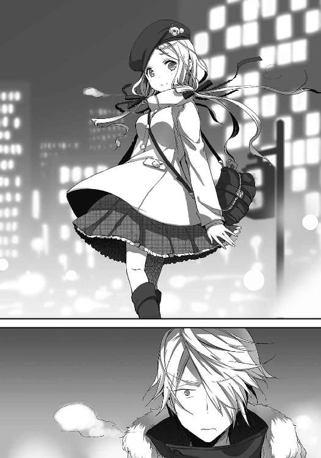
そのまま、笑顔を残して彼女は駆けて行った。
雪が降り始めた夜を。たったひとりで、まっすぐに。
「......ありがとう」
誰もいなくなった、白い雪が輝く世界。俺は、誰にともなく呟いていた。
「くあぁ......」
カレンダーは年をまたいで一月に突入していた。俺は夢前光の、
『積みゲーを消化せねば！ この神ゲーのヒロインを全員攻略するまでは死ねぬ！ 待っててね！ 徹夜で必ずクリアするからね、わたしの嫁たちよ！』
等というアホの極みな行動によって深刻な寝不足になっており、現在、保健室でだらけていた。あーチャイムが鳴ってる。授業か。もういいや、一時間だけサボろう。
「疲れる程彼女と熱い夜を過ごしたの？ これだから不良くんは！」
「あながち間違いじゃないかもな」
「ふふふ。それって意味深、だね。先生さみしいなぁ」
冬を思わせる、不思議な色のマフラーが揺れる。
養護教諭の日雲は、手にしていた本から目を離して俺に問いかけてきた。
「ねぇ、秋月くん。何か悩んでるの？」
あん？
「いや、べつに。なんで？」
「うん......なんでだろ。なんとなく、かな」
歯切れの悪い日雲だったが、それでも何か言いたいことがあるようだ。
気を遣ったような笑顔で言葉を紡ぐ。
「なんだかね。キミのお人好し加減を見てると、たまに怖くなるの」
「はい？」
「キミはいつだって、他人を自分より優先してるでしょ。私にはそれが、そのうち自分の命まで『はいどーぞ』って言いながら差しだしちゃいそうに見えるの」
「........................」
「秋月くん」
さらに日雲は、ひと呼吸挟んで続ける。優しく、ほんの少し悲しそうな顔で。
「誰かの言う通りにすることが正しいとは限らないよ。自分の気持ちに嘘をついたら、一生後悔する。後悔は、頑張らなかったことへの罰みたいなもの。罰を背負うには──キミの残りの人生は長すぎる」
「........................」
沈黙がはびこる。日雲が心配そうに見つめる。それに対して、俺は──。
「......何の話だ。そもそも俺は何にも悩んでねーよ」
「そうかな」
「そうだよ」
どこか不安そうな彼女の顔に一瞥だけ寄こし、再び天井を見上げる。
気のせいだよ、そんなの。得も言われぬ不安に見舞われることなんて、よくあることさ。
そんな感じに会話を切り捨て、俺はそのまま黙りこんだ。
日雲の寂しそうな瞳だけが、記憶から消えないのを気にしながら。
『雪瑚ちゃんにめっちゃ怒られた......』
さらに月日は流れ。カレンダーは、まだまだ寒さが拭えない二月。今度はなんだ。
『お風呂上がりに、雪瑚ちゃんがチョコレート作ってたの。それで明日がバレンタインだってこと思い出して。思わず「誰にあげるの!? もしかしてお兄ちゃんにくれるの!? 雪瑚ちゃんのブラコン！」とかやってたら「にいさんなんかにはあげないのです！」て怒られて......』
何やってんだか。
『うぅ～～雪瑚ちゃんの手作りチョコ食べたいよぉ......このまま死んだら未練で自爆霊になっちゃう......坂本くん、なんとかゲットして！ お願い！』
自縛霊の漢字間違ってんぞ。いや、この場合あってるのか。いや、それよりも。
どうも雪瑚はバレンタイン用のチョコを作っていたようだが、夢前光がいらんことをして怒らせてしまったらしい。うーん、雪瑚は結構プライド高いからなぁ。謝って果たして許してくれるだろうか。
ちなみに。机の上には、一応バレンタインの贈り物ということなんだろうか。食べかけのゴラァのマーチが置いてあり、そばには『愛をこめて♥』と書かれたメッセージカードが。こいつ、完全に忘れてやがったな。バレンタインって、女の子が一番忘れちゃいけないイベントだと思うんだけど。
「さぁって、どうしたもんか」
等と、少しばかり困っていたのだが。どうやら俺の心配は杞憂だったらしい。というのも、その日の夕食後のことだ。俺がリビングでぼーっとテレビを見ていたら、わざわざ雪瑚が隣に座り、やたらひとり言をぼやいてきたのだ。そのひとり言というのが──。
「にいさんみたいなデリカシーのない男にはチョコレートをあげないのです。全部、薫にあげちゃったのです。このまま薫とゴールインしちゃうのです」
「ちょっとだけ余ってるのですけど、それもあげないのです。雪瑚が明日にでも食べちゃうのです。ざまぁみろなのです」
「とってもおいしく出来たのです。きっと食べないと後悔するのです。嘘じゃないのです」
「......せっかく、上手に作れたのです」
「............この日のために......練習して......にいさんなんかにあげないのです......」
「............ぐす」
......以上、こんな感じ。どうやら、一度「あげない」と言ってしまった手前、俺から「欲しい」という単語が出てこない以上、プライドが邪魔しているようだ。だけど俺は知っている。余りものとは思えない程に気合いの入った包装で、冷蔵庫に鎮座しているチョコレートの存在を。そして、せっかく頑張って用意したのに、渡せないままバレンタインが終わろうとしていることに、雪瑚が泣きそうになっていることを。
......しゃあねぇなぁもう。
「なぁ、雪瑚」
「......なんなのです」
「......おまえの手作りチョコ、余ってるのでいいからくれないか？」
「───────────っ！」
「頼むよ。今日、一個ももらえなかったんだ。せめて家族からもらえないと辛いんだよ」
嘘だけど。かすみちゃんや美紗貴ちゃんから、思いっきり気合いの入ったのをもらってるけど。木下くんからも「愛をこめました」とか言われてもらってるけど。
「こないだのことは謝るからさ。許してくれよ。兄妹だろ？」
念のため、もうひと押し。そして訪れる幾ばくかの沈黙。
黙っていた雪瑚は、最初こそ不機嫌フェイスだったものの、次第に頬をニヤけさせたかと思うと──。
「しょ、しょうがないのですね！ まったく、欲しいなら最初からそう言えばいいのです！ ぐ、偶然余ってるからあげちゃうのです！ 処分に困ってたのでちょうどいいのです！ ギ、ギリチョコなので、調子にのるななのです！」
笑顔を必死に隠そうとして、変なことになっているおこりんぼ顔のまま、そう叫ぶ。そして、冷蔵庫から取り出した綺麗な包みを差しだして。
「まったく......雪瑚はにいさんなんてだいっきらいなのです！ 勘違いするななのです！」
真っ赤な顔で、そんなことを言った。へいへい、サンキューな、雪瑚。
そんな感じで、どうにかゲット出来た雪瑚お手製チョコレート。お味はなかなかのもので、正直、明日の俺にとっておくのが少し惜しい気もしたが、あげないとまた仕返しをくらうからな。『味わって食うべし』とメモを貼り付け、残りを冷蔵庫に保管しておくことに。
ったく。感謝してくれよ、明日の俺。
さらにさらに、時は流れて。
「いらっしゃい」
「こんちはっす」
ようやく暖かい日がぽつぽつ訪れ始めた、三月も目前に迫ったその日。俺は陽菜子さんを訪ねていた。理由はひとつ。ついに昨日、日記に書かれていたからだ。短く──『お帰りなさいって、言ってくれた』と。
「寒いでしょ。ほら、アダムを抱っこしてあげてねぇ。この子、あったかいのよぉ」
「あ、どうも......」
ちょっと太った気のする黒猫アダムを抱き、苦笑い。とりあえずは......元気なのかな。
陽菜子さんの淹れてくれた緑茶で体を温め、心を落ち着ける。さぁ、訊かなきゃ。
「陽菜子さん、その......訊きたいことがありまして」
「うふふ。その様子じゃあ、光ちゃんからはあんまり詳しく聞けてないのかなぁ」
「────っ」
「昨日、光ちゃんが来てくれたわぁ」
──やっぱり。
どうやらついに昨日、夢前光は陽菜子さんにすべてを打ち明けたようだ。
自分で話す。そう決意してから随分と経ってしまったが、ようやく決心出来たらしい。せっかくの再会が、いずれ訪れる別れを告げるものになってしまったことが残念でしかたない。正直、俺はどの面さげて会いに来てんだって話なんだが。
「いつもみたいに、スイカ畑でうろうろして......。それを見て、あ、今日は光ちゃんの日だってわかってねぇ。今日こそは来てくれるかなぁって見守ってたの。そしたら、本当にゆっくり歩いて来てくれて。もうそれだけで涙が出そうだった。だからね、本当は最後まで待ってあげたかったんだけど我慢出来なくて。思わず玄関を開けて、それで目の前のあの子を......あの子ったら、何度も何度もごめんなさいって......謝ることなんてないのにねぇ」
「............」
陽菜子さんはおどけて笑う。だけど、俺は重い顔のままだ。俺がこんな顔してちゃだめなのに。そうわかっていても、心は言うことをきいてくれなくて。
「それから、たくさん話してくれたわぁ。秋月さんの半分になってからどれだけ楽しかったのか。どんなことがあったのか。あの子、よっぽど秋月さんのことがお気に入りなのねぇ。ほとんど秋月さんの話ばっかりで、楽しそうに、楽しそうに話してくれた。そして──」
そして。
「............聞いたんですか」
「ええ。もうすぐ......その時が来るんですってねぇ」
「............すいません」
「ふふ。謝ることなんてないわぁ。あなたのおかげで光ちゃんに会えたんですもの。それに、光ちゃんにたくさん笑顔をくれたでしょう？」
陽菜子さんは笑いながらそう言ってくれた。
涙は見えない。きっと、泣いたに違いない。今も、激情を堪えているに違いない。俺の顔なんて本当は見たくないのかもしれない。そう考えると、どこか後ろめたくなる。
でも、それでも陽菜子さんは最後まで優しい笑顔のままだった。昨日、愛する娘とどんな話をしたのか。娘が、俺の体に宿ってからどんな生活をしていたのか。たくさん、たくさん話してくれた。どこまでもどこまでも嬉しそうに。
「秋月さん」
そして帰り際。見送ってくれた彼女が、優しくまぁるい声でかけてくれた言葉は。
「ありがとう。あなたでよかったわぁ」
俺は、その言葉に何も応えられなかった。
零れそうな涙を堪えるのだけで、精一杯だったから。
そして──時はさらに加速した。
夢前光は、楽しそうに残された時間を謳歌した。
雪瑚と一緒に同人誌を作ってはしゃぎまわったり。
かすみちゃんとデートしては、美紗貴ちゃんに見つかって修羅場を起こしたり。
逆に美紗貴ちゃんとデートしては、かすみちゃんにつけられていたらしく、尋問を受けたり。
他にも、風城や木下くんにもぴりんまで巻きこみ、セクシードリーム戦隊を作ったり。
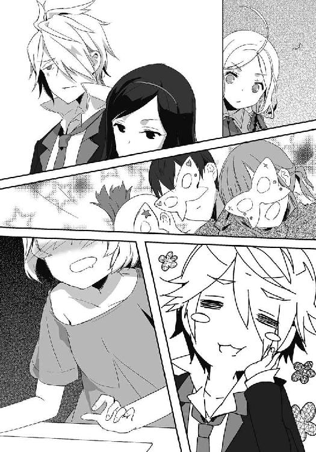
楽しそうに、嬉しそうに。生命の限界まで光り輝いていた。残された時間に悔いを残さないように。人生をすべて、清算するように。そう考えるとやはり寂しくなる。
「ここ、光が好きだった場所なんだ。よくここで、ヒーロー会議だかをやらされたよ」
空を見上げながら、風城が零す。
ただ今俺達が訪れているのは、滝王高校の屋上だ。最初は南極星でお茶してたんだが、俺が「なんかさわやかな気分になれる場所ねーの？」と言ったら、ここに連れてこられた。思いっきり部外者なのだが、風城が「どうにかなるだろ」と言うので、それなら──とばかりに馳せ参じた始末。こいつも若干ヤケになってるのかな。
「あいつ、高いとこ好きそうだもんな」
屋上の端っこ。景色がよく見えるそこに、夢前光が両手を広げて佇む姿を想像する。黒くて長い髪をなびかせ、輝く笑顔で──。
「もうすぐ一年、か」
そんなことを考えていたら、なぜか俺はそう呟いていた。
春風が吹き抜ける。思い出を少しずつ薄めるよう、柔らかく暖かく、さらさらと風が吹く。
スイカ畑に埋もれて、記憶喪失を疑って......あれから一年。
「坂本」
「ん？ どした？」
背を向けたまま、風城は言った。
「おまえ、光の代わりに自分が死のうとか、そういうことは考えてないよな」
「............」
......何を、今さら。
「あいつが決めたんだ。もう覚悟は出来てる。心配なんだったら、六月二十五日に横断歩道で張り込みしてくれてもいいぜ。どっちにしろ、その日は俺の日じゃねーけどな」
「......そうだな。悪い、忘れてくれ」
それきり、風城は黙ってしまう。
そうして過ごすこと数時間。次第に喋ることもなくなり、俺達は無言の時に浸っていた。
焦燥をあおるような夕陽の色を、瞳の裏に焼きつけながら。
梅の花が白く、控え目に顔を出す三月下旬の春休み。ノートに書かれていた、
『①駅で五百円の切符を買うのだ』『②下りの快速電車で終点まで行くべし』『③そこからバスに乗ってください』『④後は光ちゃんお手製の地図を見てください』
等という案内に身を任せた結果、俺はある場所へ辿り着いていた。
「キャンプ場じゃんか」
幼い記憶──俺と夢前光が知らず知らずの内に出会っていた、思い出のキャンプ場。はは、懐かしいな。あの川で遊んだっけ。だけど、夢前光が渡れなくて。それで──。
「で、次は何だよ」
ノートに一緒に挟まっていた『到着してから読むように！』と念を押された封筒を開くと、中から出てきたのはこれまた地図だった。だけど、ただの地図じゃない。
川辺の位置に記された♥マークに★マーク。そして マーク。なるほど、宝の地図か。
マーク。なるほど、宝の地図か。
とりあえず♥マークを掘ってみると、出てきたのはかすみちゃんや雪瑚達の大量パンチラ写真。こんなモロなパンチラ写真、どうやって撮影したんだよ。けしからん。没収だ。
次にマーク。掘り返すと、またもビニール袋に入った何かが出てくる。開けてみると、そいつの正体は俺ともぴりんがブーメランパンツ一丁でボディビルダーごっこをしている、理解不能な写真だった。川に投げ捨てたのは言うまでもない。端っこに写っていたかすみちゃんが、真っ赤な顔でガッツポーズをしていたのはすぐさま忘れよう。
そして。
「あ」
★マークから出てきたのは、またもや写真だ。でも、これは夢前光が撮った写真じゃない。
「こんな写真もあったんだな」
幼い子供達がたくさん写った、思い出の写真。そう、俺達が出会った幼い当時の写真がそこにあったのだ。たぶん、陽菜子さんが持っているのを夢前光が見つけたんだろう。
真ん中に写っているカチューシャ少女は宮本さんだ。ああ、確かこんな顔だっけ。その隣は俺だな。幼いのでそこまで恐くはないが、すでに片鱗が見えつつある。成長とは恐ろしいぜ。
そして、その隣で恥ずかしそうにしている少女が目に入る。まだ、おとなしくて弱虫で泣き虫だったあの頃。
そう──俺にとってのポラリス姫こと、夢前光がそこにいたのだ。きゅっと俺の服をつまんで、泣きそうな顔をしている。
「ここで、出会えたんだよな」
懐かしい写真に、ノスタルジックな気分になる。いかん、泣きそうだ。夢前光の奴、変な方法で泣かせにきやがって。
「んで、こっちは何だ？」
そして俺は、ビニール袋の中に入っていたもうひとつのそれ──手紙を、手に取る。
『読んだ瞬間、くしゃくしゃにして捨ててね』
表にはそう書かれている。はて、どういうことだろう。中を開くと、
『絶対捨ててね。隠し持ってたら怒るからね』
という忠告文が。わかったよ。
『絶対だからね』
『ほんとにほんとに捨ててよ』
『勇気出して書いたんだから、約束守ってよね』
『............もっかいだけ。絶対捨ててね』
「だぁもうしつこい！」
溢れる忠告文にツッコみ続け、ようやく便箋を開く。ったく、いったい何を書い──。
『坂本くん、あなたのことが大好きです。男の子として』
「..................っ」
永遠に捨てないことが決定した瞬間である。
赤面をごまかすよう、空を見上げる。その大空には飛行機雲が走っていた。まっすぐ高く、白く、光り輝いて。どこまでもどこまでも突き進んでいく。
「............ありがとな」
夢前光が表に出ている時間は──もう三時間も短くなっていた。
「雪瑚」
その日の夜。妹の部屋を訪れて声をかける。すると、パソコンに向かっていた雪瑚が不機嫌な顔をこちらに向けてきた。
「なんなのです？」
「いや、ヒマだからさ。ゲームでもして遊ぼうぜ」
「へ？ ゆ、雪瑚とですか？」
「おお。ほれ、ここ座れって」
ケータイゲームを手に持った俺は、雪瑚のベッドへ腰かける。そして、ももを叩いてアピール。ちょっと恥ずかしいけど、これ、一回やってみたかったんだよ。
「しょ、しょうがないのですね......そんなにもにいさんが雪瑚と密着したいというのなら、相手してあげるのです。雪瑚は優しいのです」
「ああ。優しい妹がいて嬉しいよ」
嬉しいくせに、無理にツンデレしているせいか、おもしろい顔になっている妹に苦笑する。
そして、そんな雪瑚を股の間に座らせ、俺は時を忘れてゲームして遊んだ。
「......やり残したことは、こんなもんかな」
「ん？ 何か言ったのです？」
「いいや、なんでもないよ」
そして、就寝時。カレンダーを見つめ、もうすぐ迫る夢前光の命日──四月八日を見つめる。この日は、俺ではなく夢前光が表に出ている日。
もうすぐだ。もうすぐ、すべてが終わる。後は──。
「俺が......やるだけなんだ」
時刻は午前四時。真っ暗な部屋で、雨音を吸いこみながら時が来るのをひたすら待つ。
四月八日。夢前光の命日。天気は雨。
今日は夢前光が表に出る日なので、午前四時五十九分になれば俺から夢前光に入れ替わる。なので、あと五十九分。それが俺に残された時間だ。
「行くか」
夢前光から贈られた腕時計。そいつをはめ、ズレがないかを確認する。
暗闇を歩き、部屋を出る。そして静かに玄関をくぐる。
視界に広がるのは雨の帳。かなり勢いがある。止みそうにはないな。
水浸しのアスファルトを歩く。ビニール傘に遮られた空は、水滴のせいで歪んで見えた。
「あの日も、雨が降ってたっけ」
雨音に身を委ねながら、俺は先ほど書いたばかりの日記を思い出していた。
『夢前光。おまえに謝らなきゃいけないことがある。俺は、ひとつだけ嘘をついていたんだ』
一歩ずつ、一歩ずつ。夢前光の死んだ横断歩道に向かいながら。
『アトリエの日誌に、生き残るための真実が書いてあったと言ったよな』
あと一時間弱。目覚めた夢前光は、どう思うだろう。
『死んでから４４４日後。今年の六月二十五日が、死神と交渉出来る唯一の日だって』
怒るだろう。きっと嘆くだろう。
『４４４。それっぽい数字だから、俺が適当に選んだんだ』
でも、これでいいんだ。たとえ、どれだけ嫌われても。
『本当は、死神と交渉出来るのは六月二十五日じゃない。本当は──』
あいつが。夢前光が。
『死んでからちょうど一年後──四月八日の今日なんだ』
たすかるのなら、これでいい。
『おまえがこの日記を読む四月八日。俺はその時、すでに交渉を終えているだろう』
ごめんな、夢前光。
『許せないと思う。許してもらえるはずがないと思う。だけど』
本当に、ごめん。夢前光。
『やっぱり俺には無理だ。おまえのいない世界で生きていくなんて』
おまえのいない日常なんて、耐えられない。
『だから、夢前光。俺の分まで、生きてくれよ』
雨の滴か、涙のそれか。わからない何かが、俺の頬を伝う。
ごめん、みんな。雪瑚。母さん。父さん。みんな。本当にごめん。
「俺を............許してくれ」
涙を呑みこみ、まっすぐ歩く。
夢前光の死んだ横断歩道まで、あと二百メートル。曲がり角の向こう。もういい、何も考えるな。後戻りしないって決めたんだ。このまま進めばいいだけなんだ。今日を逃せば、夢前光はもうたすからない。だから、今日──やるしかないんだ。
「え──────────」
だけど。俺は立ち止まらざるを得なかった。
暗い雨の向こう側。そこにいた、黒い傘を差す姿に息をとめた。
「よぉ」
そいつが手を上げて屈託なく笑う。なんで......。
「風......城............？」
「やっぱり来たな。坂本」
風城が、そこにいた。
「何やってるんだ坂本。まだ学校には早すぎるぞ」
「なんでおまえが、ここに......」
俺の青白い問いかけに、風城は笑う。そして、力強く言ってのけた。
「帰れ坂本。おまえを死神に会わせるわけにはいかない」
「なんで、おまえが知ってるんだよ......」
夢前光には伝わらないよう、日記には嘘を書いた。もちろん風城にも。アトリエの日誌だって、俺にしかわからない場所に隠した。隼人にも口止めをしておいた。なのに。
「────────っ！」
思いながら気付く。まさか。
「気付いたか坂本」
雨空を見上げ、風城は大きく息を吐き、言った。
「日向隼人。奴が、夢前光に教えたんだよ。アトリエの日誌に書かれていたすべてを」
「な............っ」
「おそらく日向隼人は予想していたんだろう。おまえが嘘をつく可能性があったことを。そして、それでは光にとってアンフェアすぎると思ったんだろうよ。だから、光に真実を話した。そして光は気付いたのさ。４４４日後。どうして、おまえがそんな嘘をついたのかを。おまえが四月八日に、何をするつもりなのかを」
「くそ......」
そうだ。そうなんだよ。何で俺は疑わなかったんだ。
──俺とおまえは同じだ。
なぜ千秋のために頑張るのか。そう訊ねた時に、隼人はこう答えていた。隼人は、俺が隼人と同じく、夢前光の代わりに死のうとしていることを見抜いていたんだ。そして隼人は、それをよしとしなかった。だってあいつは、千秋を支える友達として俺を選んだのだから。だったらバカでもわかる。隼人が、俺が死ぬのを黙って見過ごすわけがないってことを。どれだけ口止めしても、それが意味を成さないことを。そして、今、風城が言ったとおり。隼人は夢前光と同じ立場であり、夢前光の気持ちをある意味誰よりもわかっている。だったら、夢前光にとってフェアでない嘘を、見逃すはずがないんだ。
「光は言ってたよ。『坂本くんが自分の代わりに死のうとしている。きっと、四月八日の午前四時五十九分までに、交渉しようとするはず。わたしがそれを知っていると気付かれたら、裏をかかれる。だから気付いていないフリをして、当日、何としてでも止めて』......ってな」
「......それで、俺の前に現れたってわけか。風城」
「ああ。昨日の夕方からずっとここで待ち伏せさせてもらったよ。そして、やはりおまえは現れた──というわけさ」
......くそ。
悔しくなって風城を睨みつける。対照的に、風城は俺を挑発するように笑った。
「坂本！」
そして、声を轟かせる。この世界にいない、誰かに聞かせるように天高く。
「光をたすけたいなら俺を倒していけ！ 俺を倒せばおまえの勝ちだ！ その時は勝手に死ね！ だけど、もしおまえが俺に勝てないようなら──」
笑顔が消えた。深く沈むその瞳は。見ていられない程にまっすぐで。
「おまえはここまでだ。幸せに生きろ。光のいない世界でな」
「............ははっ」
なぜか、笑いがこみ上げた。あーあ、ちくしょう。完璧な作戦だと思ってたのに。簡単にボロが出るものなんだな。まぁいいや。
「残念だったな風城」
「......何？」
確かに俺の作戦負けだ。よくやったよ。だけど、おまえ達はひとつミスを犯した。いや、過信したと言うべきなのかな。
「風城......おまえが俺に勝てるのか？」
「............」
敵を睨みつけ、告げた。夢前光、おまえがどれだけ風城を買っているのか知らないが。
「風城。おまえじゃ俺には勝てないよ」
身長。体格。腕力。風城、おまえのその細い腕で俺を止めるのは不可能だ。
そう確信して、俺は笑う。自信を持って。なのに。
「どうかな坂本。光は、俺が勝てると言っていたぞ」
「......何？」
風城はひるまない。それどころか笑顔を見せて笑った。
「坂本。あの時と............真逆になったな」
「え──」
一瞬、何を言っているのかわからなかった。だけど、すぐに理解する。
「あの時は俺が死んで復讐しようとして、それを止めるようにおまえが光から頼まれたんだっけか。だけど、今じゃ俺が光から頼られ、おまえが死のうと必死になっている。まったく、落ちぶれたもんだな、坂本秋月」
「──────っ！」
「あの日も雨が降ってたっけ。おまえはあの時の俺だ、坂本。だから──」
そして風城は言った。まっすぐに、俺を睨みつけて。
「負ける気がしないよ。おまえも、そうだったんだろう」
激しく降る雨が音を消す。あの日の記憶が脳内で弾ける。目の前が真っ白になった。
後悔が血液と混ざり、全身を駆け廻る。雨が、さらに激しく────。
「あああああああ──────────ッ!!」
次の瞬間。俺は走った。風城に向かって。拳を振り上げて。傘を放り捨てて。だけど。
「ぐはっ!?」
拳は簡単にかわされ、綺麗な蹴りが俺の腹を貫く。
「ぐ......うらあああああ！」
それでも、立ち上がって掴みかかる。雨を押しのけて。無我夢中で。でも。
「うぐっ！」
届かない。それどころか、簡単に殴られて倒れ伏す。
何度も立ち上がり、何度も殴りかかった。だけど、その度にかわされ、殴られて。どこか切ったのだろうか。血が雨だまりに混じり、俺を不快にする。
「くそ......くそ......」
負けるわけにはいかない。ここで負けたら、今日を逃せば、夢前光はたすからない。二度と。永遠に。もう、生きることが出来なくなる。なのに。
「ああああああああ!!」
最後の力で立ち上がった。目に映るのは、悲しそうな風城の瞳。
やめろ。何見てやがる。何を哀れんでいる。
「俺を......哀れむな────────ッ!!」
最後の力だった。だから俺はもう。受け身をとることすら出来なかった。
無情にくだされた拳に力尽きる。コンクリートに這いつくばり、雨水に肌を汚す。
「なんで......なんで、勝てないんだ......っ」
涙が止まらない。
「どいてくれよ......風城......」
「............」
「頼む......頼むから......っ！」
風城は何も言わない。
「どいてくれよ風城！ 今日を逃せば夢前光はたすからないんだ！ 俺は、あいつがいなきゃ生きられない！ おまえだってそうだろう!? 夢前光を死なせていいのかよ！」
雨空に佇む風城に叫ぶ。きっと、わかってくれると信じて。
「陽菜子さんはどうなる！ 娘に会えて......でも、また離れ離れになって！ そんな残酷なことが許されるかよ！ なぁ！ このままあいつを死なせるわけにはいかねーんだ！」
そんなの、俺が許さない。
「風城！ おまえだって夢前光を死なせたくないだろ!? それとも、あいつが死んでも構わないのか!? どうなんだよ風城！」
「............坂本」
「なぁ、答えろよ！ おまえは本当に夢前光が消え......ても......」
続く言葉は声に出来なかった。それは、風城の手が俺の胸倉を掴んだから。
だけど、言葉を失った理由はそれだけじゃない。
「俺が............俺がどんな思いでここにいると思っている......坂本」
「────────っ」
ようやく気付く。風城が──泣いていることに。
「光がどんな思いで俺に託したと思っている。どんな思いで俺がここにいると思っている。頼むからもう何も言わないでくれ......俺を、俺をこれ以上苦しめるな！」
涙が、すーっと流れる。悲しみのこもった涙が雨に混じる。
「それに、このことは陽菜子さんも知っている」
「え────」
風城の言葉に、再度声を失くす。
「陽菜子さんに会いに行った時に、光はすべてを話したんだ。もうすぐ消えることも。おまえが死のうとしていることも。今日のことも。全部、全部、全部──」
そんな......。でも、そんな素振り──。
「おまえのためだよ」
「え？」
「光は最後まで陽菜子さんに会うのを怖がっていたよ。でも、もし自分がいなくなったことに対して、坂本が罪悪感を感じてしまったら──光を死なせてしまったことに対して、陽菜子さんに負い目を感じてしまったら──。そうならないよう、光は勇気を出して会いに行ったんだ。そして、すべてを話した。母親が泣く姿を覚悟で、おまえのために会いに行ったんだ」
「............」
「おまえは幸せ者だ。こんなにも光に想ってもらえるなんて。ずっと前にも言っただろ。おまえの人生は最高なんだよ。だから......ここで終わらせるわけにはいかないんだ」
「そんな......」
絶望が雨となり、俺の体を凍てつかせる。
「知らなかったの、俺だけか」
「............」
「知らなかったの。俺だけなのかよ......」
風城は、何も言わない。
「夢前光をたすけるつもりだったのに......俺だけ、何も知らなくて......結局、また俺が夢前光に救われて......また......また......」
涙が止まらない。たすけるつもりだったのに。なのに。また、俺は夢前光に救われて。
「坂本」
傘を拾い、風城は俺に歩み寄る。そして、バッグからある物を取り出した。
「あ............」
綺麗な色の手紙。それは。
「夢前光から、おまえに宛てた手紙だ」
「手紙......」
差しだされる手紙を受け取る。開こうとするも、力が入らない。だけど、俺は懸命に指を動かして便箋を広げた。そして、目に入れる。
『坂本くんへ』
そこにあった、見慣れた愛しい文字達を。
『これを読んでいるってことは、キミはわたしのために消えようとしているんだよね。気付いてないフリをしてごめんなさい。風城くんを責めないで。全部、わたしが決めたことだから』
「夢前光......」
『坂本くん。キミの想いは嬉しいよ。キミはいつだってわたしをたすけてくれたよね。何度も、何度もキミに救われた。風城くんの時も、お母さんの時も。ずっとずっと、キミがたすけてくれた。キミがいなければ、わたしは何も出来なかった。だからね、ずっと決めてたんだ。いつか──坂本くんをたすけてあげられる日が来たら、その時は迷わずにたすけようって。坂本くんを守るヒーローになろうって。これは、何も出来なかったわたしからの恩返し。大切でかけがえのない──大好きなキミを守りたいの』
「違う......」
違うよ夢前光。何も出来なかったなんて、おまえの勘違いだ。ひとりぼっちの俺の人生を変えてくれたのはおまえだ。どれだけ俺が、おまえに救われたと思ってる。
『それに。前にも言ったけど、やっぱりキミのいない世界で生きるなんて出来ないよ。だって』
ひと際綺麗な字で続く文章。それは──。
『これ以上ひとりで生きていけない。世界とこの命を繋ぎとめていたのは、冷たくて優しいその瞳だったから』
あいつの生徒手帳に書かれていた、俺と風城が遺書と勘違いした、その言葉だった。
『えへへ！ やっと使うことが出来たぞこの台詞！ 死ぬ前に使いたかったんだぁ。すごいでしょ坂本くん！ ここしかないってとこで使えたね。さすが光ちゃんだ。褒めて褒めて！ ナデナデして！ そして──』
そして。
『笑って。泣かないで坂本くん。それが、わたしの最後の願いだから』
「..................っ」
雨が熱い。頬が熱い。流れる涙も、握りしめた拳も、何もかも──。
「あああああああああああああああっ!!」
「──坂本!?」
俺は、駆けだした。慌てて風城が追いかけてくる。あと少し。あと少しで、あいつが死んだ横断歩道に辿り着く。そこに、そこに行けば。でも。
「あぐっ！」
もつれた足は、俺を地面へと押しつける。雨は容赦なく、俺の体を叩きつける。
「あ......」
転んだ拍子に、ポケットから飛び出たんだろうか。
目の前に転がったそいつが、どんどん、雨に濡れていく。
「お守り......夢前光の......」
紐が千切れ、中身が飛び出している。中に入っていたのは、小さく折りたたまれた紙キレ。雨に滲んでいくそれには、あいつのかわいらしい文字でこう書かれていた。
『坂本くん。いつも一緒！』
「一緒......一緒に......」
手を伸ばす。届かない。もう少しなのに、届かない。もう、永遠に。
「なんで届かないんだよ......」
伸ばした腕で、時計が刻まれる。四時五十八分を回り、十秒、二十秒、三十秒。そして。
「帰りましょう」
雨音を遮り、声が降ってきた。
優しく、まぁるい声。お守りを拾ってくれたその人は。
「ね、秋月さん」
「陽菜子さん......」
ありがとう。
最後に、彼女がそう呟くのが聞こえた気がした。
そして、時は四時五十九分を迎える。
俺は死ぬ。彼女は生き返る。
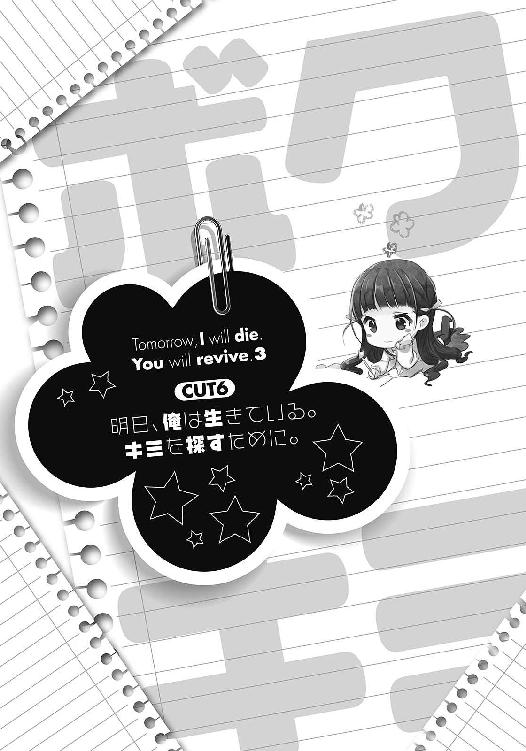
静かな朝だった。音のない、鳥のさえずりもない。真っ白な朝。
ケータイの日付は、四月九日。
散らかされた形跡のない俺達の部屋。眠るノートには、何も書かれていない。
不思議な──思い出せない心地よい夢から、俺だけが覚めたような新品の朝。
「............『ありがとな』っと」
ケータイのメールを作成。宛先は風城だ。
「送信っと」
短いメールは、すぐに飛んでいった。
「ねぇ、秋月くん」
「ん？」
「何か、困ってることがあるの？」
「うん」
「よかったら教えて欲しいな」
「保健室で寝てたら、いつの間にか養護教諭に添い寝されているという悩みだ」
桜もいい感じに満開の、よく晴れた春日和。
授業をサボった俺は保健室にて惰眠をむさぼっていたのだが。なぜか超至近距離で微笑んでいるアホ教師のせいで目覚めてしまう。ええい、何やってんだ。
「ふふふ。ごめん、だね。秋月くんの寝顔がかわいくて、つい♪」
「ついじゃねーよ」
にっこり笑う彼女に赤面してしまい、思わず顔を逸らす。そんな俺がおもしろかったのだろうか。日雲はくすくすと上品に笑った後、少しばかりの沈黙を経てこう言った。
「それにしても時間が流れるのって早いよね。もう一年、だよ」
「あん？ 何が？」
「秋月くんが私に会いに来てくれるようになって約一年、だね」
「ああ」
そうだな。一年前にあんなことがなけりゃ、来ることはなかっただろうよ。そしてべつに会いに来てるわけじゃねーからな。
「つーか早くどけって。見られたらまずいだろ」
「お断り、だね。こんなチャンス滅多にないもの」
そして日雲は上機嫌に俺を抱きしめる。ああもうちくしょう。鬱陶しいけど、振りほどくのはそれはそれで惜しい気がする。くそう。
「ねぇ秋月くん。ひとつお願いがあるんだ」
「何だよ」
どうせしょうもないことだろうと思って、ぶっきらぼうに返す。
そして返ってきた答えは、やっぱりくだらないもので。
「先生と、しよっか」
「......またそれかい」
胸元を指で広げ、耳にふっと息を吹きかけることで大人っぽく誘惑する。なんだろう。ずっと前にもこんなことがあったよね。ったく、俺達若者が日々成長してるというのにこの女、まるで成長しとらんな。
「したいでしょ？」
「したいよ。でも、しない」
「ふふ。やっぱり素直になれないんだね。ん？ 今のは素直なのかな？」
知らんわい。つーかそろそろ真剣に離してください。
「一年、か」
だけど、俺の考えなんてほったらかし。日雲は懐かしそうにそう呟いた。
「長かったね。いや、短かったかな？」
「何だよさっきから。何の話してんだ？」
「ふふ。実はね、私もうすぐこの学校辞めるんだ」
いきなり発せられた意外な言葉に黙る。え、な、何でこのタイミングで──。
「私の役割は終わったの。でも、使命は受け継がれていく。叶えられずに終わる約束なんて、もったいないもの。子供にだけ与えられた再チャレンジ。それくらいの優しさが──この世界にあってもいいでしょ？」
「は？ え？」
え、何の話っすか？ いや、それより辞めるって──。
「秋月くん」
混乱する俺をよそに、日雲は立ち上がる。
長い髪を揺らし、綺麗なマフラーを春風になびかせる。
子供っぽい──そして、透きとおる声で。彼女はゆっくりと囁いた。
「これからも、優しくて強いキミでいてね」
「はぁ？」
頬に、柔らかな手が触れる。
呆然とする俺を見届けた後、もう一度だけ日雲は微笑む。そして、彼女はマフラーを首から外しながら保健室を後にした。
「......わけわかんねーな」
残された俺は呆然とするしかない。なんだか思いっきり心を乱されてしまった。
「............教室、戻るか」
誰もいない部屋でぽつんとするのもアレなので、教室に戻ることに。
引き戸を開き、誰もいない保健室を振り返る。
またおいで──。その言葉がないことに、ほんの少しの寂寥を感じつつ。
「......髪、切らねーからな」
静かに引き戸を閉め、そんな言葉を置いていった。
これが、俺と日雲の交わした最後の言葉だった。
その日、俺は普通に過ごした。高校生らしく、受験生らしく。
「ただいま」
学校から帰り、部屋へと戻る。
元に戻った静かな日常。でも、ぽっかりと穴のあいたような部屋。気のせいかね。
「............」
辺りを見渡す。ペンタブ、アニメのブルーレイ、フィギュアにエロゲー、抱き枕に漫画、同人誌、ＢＬ小説、その他諸々。そして、一冊のノート。
一昨日に俺が書いた日記には、当然返事なんて書かれていない。まぁわかってはいた。あの、雨の中で読んだ手紙に、夢前光は最後に言いたいことをすべて記したんだ。だからノートには何も書かなかった。そして、昨日を最後に消えてしまった。かわいらしい文字も、しょうもないイタズラも、ドジな報告も、ばかばかしいルールも、愛らしいイラストも。このノートに刻まれることは、二度とない。
「ま、しょうがねぇか」
こみあげてくるものがあったが、あえて俺は余韻を残さないようにノートを閉じた。いつまでもこうしてられないからな。
「さて、勉強でもするか。受験生なんだし」
気持ちを切り替えるように、俺は自分に言い聞かせる。それに、この一年のおかげで俺の学力がかなり落ちたのも事実だ。実質、半年遊び呆けたようなもんだしな。
とまぁそんな具合に、俺は元に戻った日常を淡々と過ごし──一週間程が過ぎた。
なぜだろう。もっと悲しみにうちひしがれるのかと思っていたけど、意外にも俺はすんなりと現状を受けいれることが出来た。もちろん、時折寂しくなることはある。朝起きた時に散らかっていない部屋。周りの人々が、俺の知っていることだけを話す違和感。寝る前にノートを書かなくていい喪失感。瞬間ごとに、楽しい夢が覚めてしまったがっかり感は確かにあった。でも、それでも、嘆くようなことはなかった。
きっとそれは、あいつが最後にあのメッセージを残してくれたから。
泣かないで。笑って。
その言葉だけが、確かに俺の内側を力強く支えてくれているのがわかった。だから、俺は前を向いて生きていける。最後の最後まで、あいつは俺のために生きてくれたんだ。
──ただ。
それでも、俺は交換日記を開くことだけは出来なくなってしまった。
毎朝起きる度に開いていた、俺と夢前光の交換日記。開けば、もう新たに書かれることはないだろうけど、それでも、これまでにあいつが書いた思い出を見ることは出来る。だけど、それだけはなぜか、どうしても出来なかった。
きっと、開いてしまえば──あいつの書いた文字を見てしまえば。
何かが崩れると、そうわかっていたから。
────。
──。
「ん............」
そうして迎えた日曜日。俺は、朝陽と共に目覚める。ケータイで日付を確認。日曜日であることを確認した後、ぼんやりと部屋を見渡す。なんだろう。土曜の後に日曜がやってくることが、とても新鮮に感じられる。一週間ってこんなに長かったっけ？
「......そろそろ片付けなきゃな」
俺と夢前光が共に過ごしていた部屋。
あいつが買ったり、どこかから貰ってきたあらゆる品々。思い出としてこのまま残しておこうかと思うも、なんだかそれはそれで未練があることを認めているような気分になってしまう。思い出は思い出。心の中に大事にとっておくとして、生活スペースくらいは元に戻しておくか。
「うっし、気合い入れるぞ！」
そう掛け声を放った俺は、とりあえず急いで朝食をすませて顔を洗い、動きやすい格好に着替える。こういうのは勢いが大事だからな。いつまでもしんみりしていてもしかたがない。まだまだ俺の人生は続くんだから。
そんな決意と共に始まった大掃除作戦。予想通りだが、かなりの大仕事となった。
なんせまぁ物がたくさんある。普通こういう時って、ちょっとくらいしんみりするもんだとは思うが、量が多すぎてそんなことしてたらガチで日が暮れちまう。
というわけで、シリアスなんてどこ吹く風。片付けというより派手な模様替えだな──等と思いながら、どんどん整理する。それにしても部屋を整理するなんて久しぶり──。
「ん？」
ふと、何かが舞った。あいつ専用の本棚にどうにか漫画類を押しこめないかと苦戦していたら、その隙間から何かが舞い落ちたのだ。
「紙キレ？」
床に落ちたそいつの正体を見る。小さく折りたたまれたそいつには、どうやら何かが書いてあるようだ。拾い上げ、広げてみる。いったい何が──。
『忘れた頃に光ちゃん登場！ 隠れ光ちゃんをよくぞ見つけた！ さすがわたしの相棒だ！』
え──────。
「これ............」
次の瞬間。無心だった。
部屋をひっくり返す。そして見つける。絨毯の下に。椅子の隙間に。時計の裏に。
いつの間にこんなに仕込んでいたんだろう。いつの間に、こんなにも──。
あらゆる場所から現れる、無数のメッセージ。俺の愛した、もうひとりの──。
『おお！ ここに隠れたわたしを見つけるとは！ さすがだ坂本くん！』
『うひひ、この光ちゃんは残像だよ！』
『わたしを見つけても、第二、第三の光ちゃんが現れるであろう......』
『わたしが見つかっても代わりはいるもの！』
『バカめ！ こっちは影武者なのだ！』
「............っ」
部屋だけに留まらない。トイレの一角。床の間の掛け軸の隅。リビングのテーブルの裏。
俺とあいつが共に過ごした家中から。次々、次々と──。
「あ......」
その内の一枚に目が留まる。綺麗な字で書かれた文章が、俺に訴える。
『このメモに名前を書かれた人は、光ちゃんの言いなりになった後、死ぬ』
「............」
『坂本秋月。光ちゃんと入れ替わるために一度だけ死ぬ。その後、見事に復活。そして、光ちゃんのことを忘れて幸せな生活を送る。幸せになってください』
「──────っ」
ダメだ。泣くな。堪えるんだ。
約束したじゃないか。泣かないって。俺は、あいつと──。
「にいさん......？」
「うおっ!?」
急に声を掛けられ、思わずのけぞる。振り返った先にいたのは、雪瑚だった。
び、びっくりした。どうしたよ。
「何をしてるのですかさっきから。あっちこっちをひっくり返して」
「え、あ、ああー......」
ごまかさなきゃ。堪えて、ごまかさないと。
「ええっと、あれだよ。片付けしてたんだ。すぐに戻すからさ」
裏返りそうな声を必死におさえる。ギリギリだったが、どうにかごまかせたと思う。
──なのに。
「............」
「雪瑚？」
普通に答えたのに。なぜか、雪瑚が怪訝な顔をする。
そしてそれは、みるみるうちに悲しそうな顔へと変わってゆく。
「にいさん」
「ん？」
「その、今更なのですけど、こないだにいさんの言ってたことがどうしても気になって......。べつに、それとは何の関係もないのですよね......？」
「ん？ あ、え？」
「一生懸命考えたのですけど、どういう意味なのか全然わからなくて。き、気になってしかたがないのです」
どうやら、夢前光が雪瑚に変なことを言っていたみたいだ。いったいどうしたよ。
「えーと、俺、何か言ったっけ？」
「言ったのです。急に『明日、ボクは死ぬ。キミのおにいちゃんは生き返る。だから、安心していいよ』って。考えたのですけど、全然意味がわからないのです」
「──────」
それって......。
「じょ、冗談でも死ぬとかやめて欲しいのです。死ぬと決めた人は、身の回りをお片付けするとか聞くのですけど、それとは関係ないのですよね？」
「────っ......」
──念願の不良の体を手に入れたぞ！ これで怖いものなしだ！
──い、妹ちゃんに彼氏が!?
──はい、光ちゃん式多数決により、わたしは悪くないことが決定しましたー。
──いつか二人で、お母さんに会いに行こうね。
──坂本くんでよかった。
「........................」
「雪瑚は細かいことを気にする性格なので、変なことを言わないで欲しいのです。もっとにいさんは気を遣えなのです。ば、罰として今日はずっと────」
──ぎゅ。
「え──？」
思わず抱きしめた。
その、小さな体を。愛しい妹を。俺の顔を見られないように。力強く。力強く。
「に、にいさん!?」
「ああ、俺は死なないよ......もう、二度と......」
泣くな。泣いちゃだめだ。
「そばにいるからな......ずっと、ずっと............」
だって俺は約束したんだ。泣かないって。笑って生きるって。約束、したんだ。
「ずっと、ずっと......」
約束したのに。約束、したのに──。
「うぅ......うぐ......っく......あぁああ......っ！」
「にいさん......」
どこまでもどこまでもどこまでも。
その日、俺は泣き続けた。この、残酷な世界で。ひとりぼっちになった世界で。
砂時計が落ちるように。花がしぼんで枯れるように。太陽が海に沈むように。
長い長い夢が、終わりを告げた。
そして、時は流れ──。
『雪瑚へ。
今度の金曜、大学の講義が終わった後に帰るから。母さんにもよろしく。
おまえの誕生日パーティ、楽しみにしてるぜ。
兄貴より』
────三年が経った。
「あ」
その日、俺は懐かしい物を見つけた。
『レア光ちゃんを見つけるとはさすが相棒！ ボーナスポイント！ 腹筋五百回！』
「こんなところに」
自宅から持ってきたゲーム機の隙間。そこに潜んでいた紙キレを手に、ほくそ笑む。あいつが最後に残してくれた、大量の隠しメッセージ。どうやら、まだ取りこぼしがあったらしい。
「忘れろとか言ってたくせに、全然忘れさせる気ねーじゃんか」
夢前光のメモをピラピラさせながら、誰にともなくそう呟く。
──さて。
夢前光との二心同体生活が終わりを告げて、はや三年。
俺は大学三年生になっていた。
あれから......夢前光がいなくなってから俺が何をしていたかというと、ひたすら勉学に励んだ。まぁぶっちゃけ、ただの現実逃避よ。最愛の少女を失ってしまった。寂しくてしょうがない。そんなものを紛らわせるために、とにかく俺は涙と鼻水だらけになりながら勉学に打ちこむことで、自我を保っていたのだ。
そんな感じで時が過ぎること約一年。
そのおかげかどうかは知らないが、なんと俺は指折りの名門校へと進学することが出来ていたのだ。いやはや、愛の力とは恐ろしい。なんか違うか。
んで、現在はひとり暮らし。気ままでいいもんだが、やっぱりたまには寂しくなる。特に雪瑚から『もう帰ってくるななのです！ ずっとほったらかしにして、今さら兄貴面しても遅いのです！ 雪瑚はべつに寂しくなんかないのです！』なんてメールが届いた日には、あの泣きそうなしかめっ面が急速に恋しくなる。どうやら俺の寂しがり屋な性格は、二十歳を過ぎた今でも変わらないらしい。
「しかしまだあったとはね、このメモ」
丁寧に畳み、机の引き出しにしまいながらそう呟く。
ひと通り探したつもりだったのだが、まだまだ取りこぼしがあるようだ。数年が経過した今でも、ふとした瞬間にこうしてひょっこりと顔を覗かせてくれている。やれやれ。不意打ちがお得意なのは死んだ今でも変わらずってとこか。
そんなことを考えながら、俺は机の上に置いていた一冊のノートを手にする。
そして──。
「どーせ書かれてないよな」
ひと言零す。ちょっとした寂しさをこめて。
かつて、毎日のように書いていた日記帳。もう意味がないと知りつつも、俺は未だに日記を書き続けている。
左側にだけ書きこみ、右側は開けておく。
ハタから見れば奇妙な日記帳だろう。だけど、俺達にとっては意味がある。どうやら俺は、まだまだ未練を残しているらしい。
ふいに記憶が飛んで返事が書かれるんじゃないか。
俺の知らない内に、女の子とデートしているんじゃないか。
また、わけのわからんトラブルに巻きこまれているんじゃないか。
そんな日記が──ある日突然、書きこまれるんじゃないか。
そう、期待して。
「......あるわけないのにな」
結局ノートを開くことなく、大学へ行く支度をする。さて、今日は授業が終わったら実家に帰らないとな。雪瑚の『帰ってくるななのです』メールがもう二十件もたまってるし。そろそろ帰らないと、こないだみたいに押しかけられちまう。誕生日プレゼント、喜んでくれるといいけど。
「んじゃ、行ってきます」
寂しく残された日記帳にそう告げ、俺は部屋をあとにした。
晴れた通学路をのろのろ歩く。
住宅街を抜け、飲食店やらでにぎわう大通り。目に入るのは、大学生活を謳歌する若者達だ。ああ、友達がいる奴は楽しそうだぜ。結局俺は、またしてもぼっちに逆戻りしちまったからな。成長がないとはこのことよ。人生って難しいね。
「おーい。坂本くん」
だけど。変化がまったくないというわけでもない。
「お」
不意にかけられた声に立ち止まって振り返る。
視線の先から駆けてくるのは、ひとりの少女だ。
「おいっす！ 今日も不機嫌そうだね坂本くん！」
「ほっとけ。一昨日、ゼミの飲み会で飲みすぎて、昨日から二日酔いなんだよ────宮本さん」
俺の顔を見てケタケタ笑う彼女に、ぶっきらぼうに返す。
さて。俺も未だにすげぇ偶然だと思っているのだが。
俺の幼馴染であり文通友達でもある宮本春美さん。なんと、俺と彼女は偶然にも同じ大学に通うという、奇跡的な再会を果たしていたのだ。お互いにどこの大学に行くかは明かしてなかったので、偶然キャンパスで出会って声をかけられた時は、心底ビビった。宮本さんいわく「キミは一発で思い出せるカオしてるからね」だとさ。褒め言葉と受けとっておこう。
「一緒に行こうぜいっ！ キミと一緒だと道が自動で空くからたすかるんだよ」
「除雪機みたいに言うなよ」
地味に気にしていることを。
「あはは、まぁいいじゃない。それに、キミはわたしの〝しもべ〟なんだからさ。ほれほれ、ゴーゴー！」
歯を見せて笑う彼女は、急かすように俺の背を叩く。しもべねぇ。その約束、まだ覚えていたんですね。
「ん？ どした。じろじろ見つめちゃって」
「いーや、なんでも」
昔を懐かしみながら意味もなく彼女を見ていたら、かわいく首を傾げられる。意味なんてないよ。ただ、綺麗になったなぁと思ってね。記憶の中の彼女も相当にかわいかったが、大学生になってさらにレベルアップした感じだ。まさにイマドキの女子大生。カチューシャも相変わらずお似合いですよ。
「しっかしアレだね。坂本くんってほんと、昔から猫背がひどいよね。せっかく背が高いんだからもっと堂々とすればいいのに。あと、眉間にしわ寄せるとこも」
「くせなんだもん。べつにいいじゃん。誰に見せるでもないし」
「んもう、せっかくアドバイスしてあげてるのに。文通だとさわやかで優しいイメージだったのに、会ってみると全然変わってないんだから。みんなからの評判悪いぞ～」
うっせ、いいんだよ。俺は必要以上に友達を作らない主義なんだ。高校の友達とは今でも連絡取ってるから、べつに寂しくないもん。教える前に、かすみちゃんに下宿先を突き止められた時はマジで焦ったけど。
「つーかそれ言うなら、おまえもじゃねーか」
「ん？ あたし？」
そうだろう。文通だと、あんなに清楚なお嬢様って感じのイメージだったのに。いざ会って見ると、全然昔と変わってねーじゃんか。そのおてんばっぷり、どこに隠してやがった。
「あー、あれね」
すると、快活な彼女にしては珍しく言葉を濁らせる。
そして、少し恥ずかしそうな顔で言いにくそうに続けた。
「......初めてキャンプ場で会った時のこと、覚えてる？」
「ん？ 覚えてるけど」
そりゃあ忘れようがないさ。だってあの日は、俺とあいつが初めて──。
「あの時さ、パンダのぬいぐるみ抱えた女の子がいたの覚えてる？」
俺の思考があいつの顔を呼び起こすよりも早く、宮本さんの口から夢前光のことが語られたことに驚く。
「坂本くん、あの子のこと気になってたでしょ」
「............っ」
不意打ちの連発に、沈黙を選んでしまう。その態度に図星を突かれたと勘違いさせてしまったのだろうか。宮本さんは、少し赤い顔でさらに続けた。
「ずーっと見つめててさ。川を渡れない時に、これ見よがしにたすけようとしてたじゃん。失敗してたけど。それ見てね、ああいう感じがウケるのかなーって幼いながらに思ったの。それで、手紙の中くらいキャラ変えてみようって思ったわけ。まぁ、手紙の中でしかもたなかったけどね」
「............そっか」
夢前光。どうやらあいつは、俺達の知らないところにも影響を及ぼしていたらしい。ほんと、あっちでもこっちでも語り継がれる女だな。
「あの子、何やってんだろうね」
「......さぁな」
風に吹かれながら、寂しく答える。
ただの偶然だろうが、夢前光のメモを発見したその日にあいつの話が出てきたことにそわそわする。うん、やっぱりあの日々は夢なんかじゃないよな。どれだけ時間が経っても。思い出が薄まっても。あいつは確かに......この世界に生きていたんだ。俺の、半分として──。
「んおっ？」
そんな感じで、しんみりした空気を味わっていた時だ。
ケータイがメールの着信を知らせてくれる。
「あ」
そして、メールの差出人を見て思わず声を漏らす。
「──千秋」
「ん、どしたの？ 彼女さん？」
覗きこんでくる宮本さんを避けながら、そんなんじゃないよと返し、俺はメールを読み進める。俺達と同じ──悲しみの運命を辿った少女からのメッセージを。
『おはようございます。ご機嫌いかがでしょうか。今日で、隼人くんがいなくなってから三年です。一緒にお墓参りに行きませんか』
「......千秋」
少し寂しいメールに、空を仰ぐ。そうか。もう、そんなに──。
俺の中から夢前光がいなくなった約一ヶ月後。隼人も、夢前光と同じように命日を境に、この世を去ってしまった。最後まで笑って。最後まで泣き言を漏らさずに。最後の最後まで、隼人は千秋にとってのヒーローとして生き、そして消えていった。本当に強い奴だった。一生あいつを超えることなんて出来ない。そう思わせるくらいに、強く生きた少年だった。
そして、その人生は決して無駄ではなかった。
あの強い生き方に感化されたんだろうか。千秋はあれから、見違えるように成長していた。積極的に歩く練習をして、今ではちょっとその辺に出かけるくらいなら車椅子を使わずとも可能になっている。それだけではない。千秋が一番変わったところ。それは──。
『それと、隼人くんと夢前さんを生き返らせる方法について。手掛かりは見つかりましたか？』
続くメールに、笑みを隠せない。
そう──。千秋は今でもまだ、隼人をあきらめていないのだ。
残酷な未来に絶望していた少女はどこにもいない。千秋は隼人の墓前で誓ったのだ。必ずもう一度会ってみせると。絶対にあきらめないと。それが茨の道と知りながら、それでも前へ進む覚悟を決めたのだ。涙を拭いて、強く強く、前を見据えながら。泣きまくっていた俺とは大違い。ほんと、頼もしい奴だぜ。
「ねぇどーしたの？ さっきからニヤニヤしちゃってさ」
「え？ ああ、ごめん。何でもないよ」
メールに夢中になっていると、宮本さんが不満そうに俺の顔を覗きこんできた。すまんすまん。これだけ返したら終わるよ。
千秋に対して『まだ見つかっていない。だけど、俺もあきらめるつもりなんてないよ。次の日曜にそっちに行くから、そこで会おう』というメールを返し、ケータイをポケットへ。そうだよな。あきらめるなんてつまんないもんな。
俺達がこの世にいる限り、まだ可能性はあるんだ。だったら、最後まであがいてやろう。それが、生き残った者の宿命だ。そして俺は果たせなかった約束を果たしに行くんだ。
陽菜子さんに──あいつと一緒に、会いに行くんだ。
「一緒に──絶対に......」
「ん？ もう、さっきからどうしちゃったの？」
訝しむ宮本さんを笑みでごまかしながら、再度空を見上げる。
青い青い、高い空。
この青い空の下。その、どこかにいると信じて。いつか、この空の下で会えると信じて。
俺は、誰にも聞こえない声で彼女の名前を呼ん──。
「もうっ！ いい加減シャキッとしろ！ ほら、遅刻するよ！」
いい感じにノスタルジックになりかけたところで、宮本さんがバンッと背中を叩く。へいへい、すいませんね。んじゃ、大学行きましょうか。
急かす彼女に押されるよう、俺はキャンパスへと歩を進めた。
「ただいまー」
そして現在放課後。講義を終えた俺は、実家に帰る前に下宿先へ戻っていた。さって、帰る準備するか。
カバンを用意して、さらに、先週ショッピングモールで購入した雪瑚への誕生日プレゼントを確認。えーと、後は──。
「あん？」
等と、がさごそとしていたら。
パソコン本体の隙間に、小さく紙キレが挟まってあるのに気付く。あら、今日は珍しく二連発か──と思い、カバーを開いて手に取る。そしてそれは、やっぱり俺の予想したもので。
『ひとり暮らしが寂しくなった頃に光ちゃん登場！ 油断したな坂本くん！』
「ほんっと、あっちからもこっちからも」
どんだけ仕込んでるんだか。加減を知らない奴だぜ。
夢前光からのメモにほくそ笑みながら、そいつを丁寧に机の中にしまう。そして、少しだけしんみりした後、カバンを手にして家を出ることに。
「うし、戸締りＯＫだな」
そして、玄関のドアを少しだけ開けた時。
太陽の光が隙間より差しこみ、俺の瞳にまばゆく突き刺さった時。
俺は────気付いてしまった。
「え──────」
あれ？ これって......。
さっき、紙キレはどこから出てきた？ 俺が実家から持ってきたパソコンからだ。だから、その中に隠しメモがあったことは不思議ではない。
じゃあ、その内容は？
確かに俺は高校の時から、大学になったらひとり暮らしをしたいと言っていた。だから、あいつが消える前にそれを予想していたとしても不思議ではない。
だけど、もしかしたら──。
「────────」
俺は、ゆっくりと部屋の中へ戻った。
なぜか、笑みが浮かんでいた。
なぜだろう。でも、俺にはわかったんだ。
きっと、何かが変わる。そんな予感がしたから。
机の上に置き去りにしていたノートを手に取る。
俺の──俺達の、交換日記。
俺とあいつの、交換日記。
そこに、何かが書かれていると信じて──。
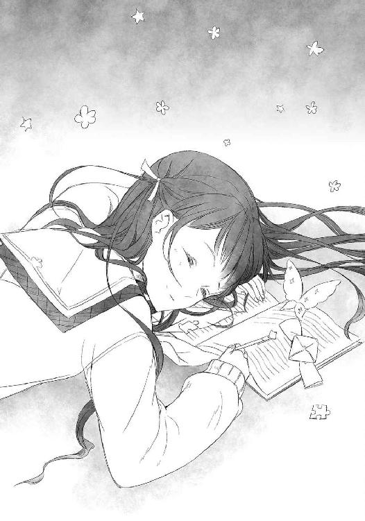
あとがき
前回、制作秘話を明かすだのなんだの言っておきながら何も明かせなかったので、今度こそリベンジを果たしたいと思います。
というわけで今回は背表紙のお話を。
電撃文庫の背表紙は、作者ごとに色が違うのはみなさんご存知かと思います。そして藤まるの背表紙の色も、たった今ご確認いただいたかと思います。今日は、その色が決まるまでの過程をご紹介いたします。
あれは、とても寒い日のことでした......。
編集様『背表紙の色は何がいいですか？』
藤まる「えーと、じゃあこんな感じの色で（メールで色を添付）」
編集様『うーん。でも、藤まるさんは赤が似合いますよね。赤色にしますね』
藤まる「あ、はい（なぜ訊いた......）」
以上です。
そんな理不じ......ゲフン......驚きの方法で決められた色ですが、実は藤まるはこの色が結構気に入っております。というのも、赤色は目立つのです！ 何気なく見る度に、自分で提案した色にならなくてよかったと、切に思います。
とまぁ、そんなどうでもいい話はさておき。ひとつ、報告があります。
実は、今巻をもって『明日、ボクは死ぬ。キミは生き返る。』シリーズは完結となりました。
よくぞまぁ私のようなズボラな人間が三冊も書けたなぁと思う次第です。思い起こせば色々ありました。全ページ書きなおしという悲劇も、今となってはいい思い出です。これも読者の皆様や、温かいお手紙のおかげだと思っております。誠にありがとうございました。
ちなみに、藤まるの次回作はなんとなくですが決まっております。そして、編集さんより「休ませねーよ（笑）」みたいなキリキリする励ましをいただいておりますので、案外すぐにお披露目することになるんじゃないかと思っております。
ですのでみなさん。近いうちに本屋さんにて『理不尽な赤色』（命名：藤まる）が並ぶかと思います。その時は「ああ、あいつまた本出したのか」なノリで結構ですので、お手にとっていただければと思います。絶対に後悔させないよう、尽力してまいりますので。
それでは、今回はこの辺で。
『明日、ボクは死ぬ。キミは生き返る。』
お付き合いくださり、ありがとうございました。
藤まる
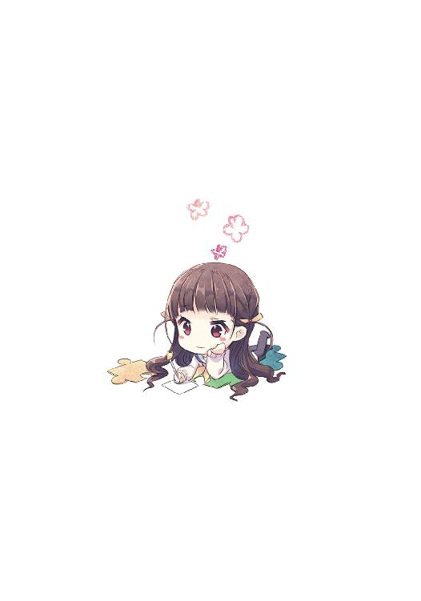
藤まる
88年、雛祭りの日にとある一家で弟として生誕。姉が超リア充なので肩身が狭い。そんなわけで理想の妹を追究していたら、いつの間にか最終巻です。
探求はまだまだ続く！
Ｓ
魚座。ゲームやライトノベルでイラストを描いています。
趣味は写真。時代劇やミステリ物が大好きです。
自己紹介には慣れないです。
 電撃文庫
電撃文庫
明日、ボクは死ぬ。キミは生き返る。3
【電子特別版】
藤まる
発 行 2013年11月21日
発行者 塚田正晃
発行所 株式会社KADOKAWA
〒102-8177 東京都千代田区富士見2-13-3
03-3238-8745（営業）
http://www.kadokawa.co.jp/
プロデュース アスキー・メディアワークス
〒102-8584 東京都千代田区富士見1-8-19
03-5216-8399（編集）
http://dengekibunko.dengeki.com/
本書（電子版）に掲載されているコンテンツ（ソフトウェア／プログラム／データ／情報を含む）の著作権およびその他の権利は、すべて株式会社KADOKAWAおよび正当な権利を有する第三者に帰属しています。
法律の定めがある場合または権利者の明示的な承諾がある場合を除き、これらのコンテンツを複製・転載、改変・編集、翻案・翻訳、放送・出版、公衆送信（送信可能化を含む）・再配信、販売・頒布、貸与等に使用することはできません。
(C)2013 FUJIMARU
※この電子書籍は2013年10月10日発行の電撃文庫『明日、ボクは死ぬ。キミは生き返る。3』初版に基づき制作
※巻末には2013年6月10日発行の『電撃文庫MAGAZINE Vol.32』に掲載された『明日、ボクは死ぬ。キミは生き返る。 雪瑚、おにいさまのトクベツを探す。」を収録
【電子書籍版特典】
明日、ボクは死ぬ。キミは生き返る。
雪瑚、おにいさまのトクベツを探す。
この作品は、『電撃文庫ＭＡＧＡＺＩＮＥ Ｖｏｌ．32』に収録されたものの再収録です。
文庫版『明日、ボクは死ぬ。キミは生き返る。３』には収録されておりませんので、予めご了承ください。
（初出）
『電撃文庫ＭＡＧＡＺＩＮＥ Ｖｏｌ．32』（２０１３年発売）
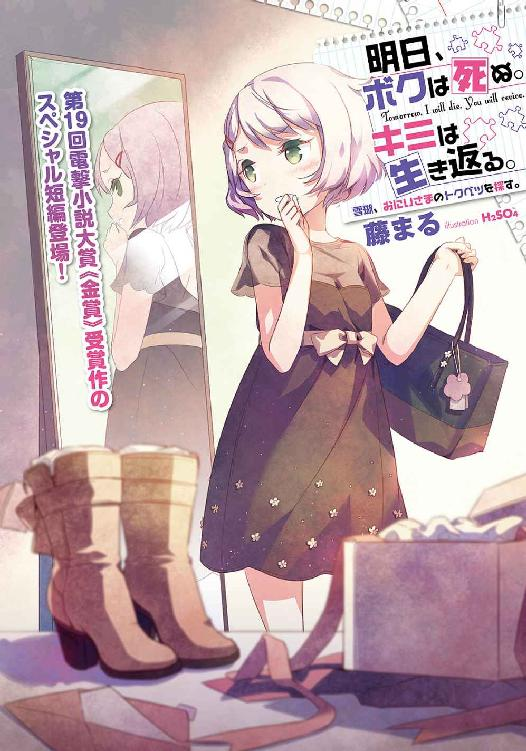
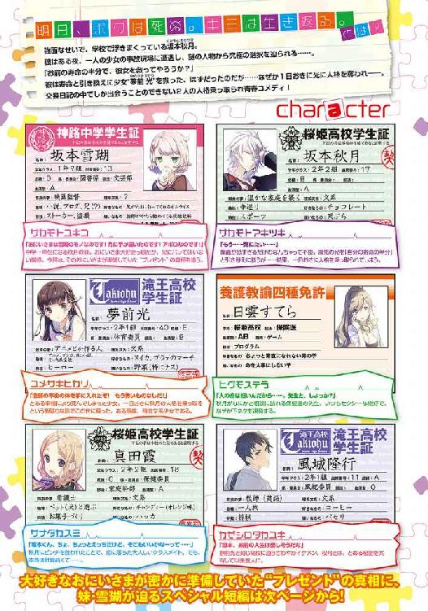
交換日記。
一冊の日記帳を複数人で共有し、順番に日記をつける行為。
────。
──。
突然だが、俺は今年の春より交換日記を始めている。
お相手は、なんと十七歳の女子高生。
内容はお互いの日常を記すだけに留まらず、恋の話からお悩み相談困りごと。たわいもない世間話からエロトークまで幅広く。絵の得意な彼女は、かわいらしい似顔絵を添えることで、いつもいつも華やかな日記を書いてくれている。さぞかし時間がかかっているだろうに。
とまぁこんな風に紹介すれば、全国のモテない童貞諸君から「羨ましい！」「俺も女子高生と交換日記したい！」などという声が降り注いでもおかしくないのだが。
残念ながら俺と彼女の交換日記には、普通とは決定的に違う点が二つある。
というわけでまずひとつ目。
普通の交換日記とは違う点、その一。
それは、交換日記の相手である『夢前光』が、スーパーミラクルおバカちゃんという点だ。
「あんにゃろう......」
夏休みのとある朝。
俺は、彼女──〝夢前光〟からの交換日記に、朝っぱらから悪態をついていた。
『おっはよう坂本秋月くん！ 今日もちゃんと恐い顔してるかな？ 今日はね、補習に行くつもりだったんだけど、とってもいい天気だったの。だからかな？ 気が付いたら、サボって市民プールに行っちゃったのだ☆ ごめんなサイコキネシス！』
「何がサイコキネシスだもう......」
こちらの日記が示す通り、この女はなんせもうアホというかマヌケというか。いつどんな時でもドジやおバカをやらかすので、常に周囲に迷惑をバラ撒いていやがるのだ。つい先日もネット通販する時に一〇と一〇〇を間違えて、おっぱいマウスパッドを百個も注文するというアホの極みな事件が起こったばかり。だいたいあんなもん十個もいらねーだろ。何に使うんだ何に。
「ったく、迷惑な奴なんだから」
ため息を吐きながら続きを読み進める。
しかしまぁ、単にこいつがアホアホ少女というだけならば、べつに俺は困らない。補習をサボってプールに行った？ はは、バカな奴だなぁ──と笑ってやれば済む話。だけど、残念ながらそれでは済まない理由があるのだ。
それこそが、普通の交換日記とは違う点、その二である。
てなわけで二つ目。
普通の交換日記とは違う点、その二。
それは、夢前光の正体が既に死んでいる少女であり、さらに昨日の俺であるという点だ。
......まぁこんな説明じゃどれだけ頭のいい人でも理解不能だとは思うが、これは嘘でもなんでもない。マジな話なのである。
四月上旬のとある雨の日。交通事故により、夢前光は俺の目の前で死んでしまった。その時に、俺は謎の人物から「おまえの寿命の半分で、彼女をたすけてやろうか」と迫られたのだ。それに対し、俺は「やってみろよ」と応えたわけなのだが──。
その結果。なんと夢前光は〝俺の体を一日置きに乗っ取る〟という、なんとも型破りかつ、甚だ大迷惑な方法にて見事この世に生還しやがったのだ。
つまり、今日は俺が普通に生きているが、明日になると体も意識も完全に夢前光に乗っ取られてしまう。その間、お互いの記憶は残らないようになっているので、体感時間は実質半分。すなわち寿命の半分。うまいこと言いやがって。ははははは......はは............はぁ。
そんなわけで始まってしまった二心同体生活。ひとつの体を交互に使うため、俺たちは会話をすることすらままならない。そこで始めたのが、交換日記というわけだ。こいつを使うことで、俺たちは二心同体である事を誰にも知られず、平和に過ごす事ができる。
......そう、思っていたんだけどね。
意識を手元の日記帳に戻し、さらに続きを読むと──。
『──で、ここからが本題なんだけど......。実は帰ろうとした時に、いつものクセで女子更衣室に入っちゃったの！ ケーサツ呼ばれて結構ヤバかったけど、海パン一丁で家までフルダッシュして逃げきってやったぜ！ 褒めて褒めて♥』
「誰が褒めるかバカ！ 俺の体で何やってんだ！」
昨日の俺からのドアホな文章に怒鳴った後、「うぬああ......」と天を仰ぐ。
「あれほど男だって事を意識しろって言ってるのに......」
とまぁ、再びこちらの日記が示す通りなのだが。現在、俺たちの二心同体生活は毎日がハリケーン状態である。昨日の俺が女子トイレや更衣室に突入するなんて日常茶飯事。この数ヶ月、俺はもっととんでもないイベントと毎日エンカウントし続けたのだから。
「まぁ楽しそうだからいいけどさ」
日記に続いている『おわびに、女子更衣室で見た魅惑の光景を光ちゃんがイラストにしてあげたよ！ ぐへへ、お礼ならゴラァのマーチ五箱でいいぞ、相棒！』という文章と十八禁なイラストに再度ため息をぶつけ──なんでお詫びのイラストにお礼を要求してんだよ──そんな言葉を口にする。ほんと、勝手な奴なんだから。
こんな具合に毎朝恒例の愚痴を吐き終えたところで、ようやく俺は顔を洗うために洗面所へ向かう事に。うん、ここまでやってようやく一日が始まるって感じがするぜ。
「やっと起きたのですか、にいさん」
などと考えながらリビングに辿り着いた俺にかけられたのは、そんなお言葉。同時に、リビングにてテレビを見ていた少女が、不機嫌な顔をこちらに向けてくる。
「おはよ、雪瑚」
「もうお昼なのですよ。夏休みだからってごろごろし過ぎなのです」
俺の気だるい挨拶に、つん──とした声と態度で彼女は応えてくれる。あらあら、今日も相変わらず不機嫌ですね。
今年の春に中学生になった我が妹、坂本雪瑚。
小柄な体と前下がりなストレートショートボブが特徴であり、ぱっちりした瞳が輝く顔は、とてもかわいらしく整っている。笑えばさぞかしクラスで人気者になれるだろうに。
そう。笑えば──ね。
というのも、雪瑚はどうも昔から無愛想というか怒りっぽいというか、とにかく人付き合いが絶望的に下手なのである。おかげで友達もおらず、夏休みだってのにこうして家に閉じこもる毎日。やれやれ、こういうダメなところは兄にそっくりだぜ。かわいそうな奴め。ほんと............ちくしょう。
「母さんは？」
涙を拭いつつ雪瑚に訊ねると、これまた返されるのは不機嫌ボイス。
「お母さんは急な仕事で朝から出張なのです。わかったらさっさとお昼ご飯を作るのです。雪瑚はお腹がすいているのです」
ぶすーっとした、いつものしかめっ面で雪瑚はそう応える。
「まったく。にいさんが寝ぼすけなおかげで、雪瑚は朝ごはんも食べていないのです。にいさんは使えない人なのです」
「へいへい、すまんね」
ぶつぶつと雪瑚の愚痴が続くので、俺はエプロンを巻きながら適当に返事をする。うん、今日も平常運転だな。
「本当に反省しているのですか？ 叩き起こさなかった雪瑚の優しさに感謝するのですよ」
「おーそうだなー」
さらに愚痴は続いていたけれども、いつもの事なので流すことに。さてと、今日の昼飯は何にするかな。えーっと冷蔵庫には......なんもねーな。
「だいたいにいさんは、妹への扱いを一度考え直すべきなのです。いつもいつも迷惑なのです」
「あーそうねー」
野菜はあるな。チャーハンでいいか。
「こんなにもすてきな妹を持った事への感謝が感じられないのです。雪瑚は不満なのです」
「あーかもねー」
フライパンに油を──あれ？ 油は？
「そ、そう思うなら、ナデナデするとか、ぎゅっと抱きしめるとか......も、もっと妹への愛情を表現するべきなのです。ほんと、にいさんてば空気が読めないのです」
「あーそうだなー」
ぐあ。油切らしてんじゃん。もー母さん、何やってんだよ。
「わ、わかったらさっさと実行するのです。『あ～ん♥』をするくらいの甲斐性があってもいいはずなのです」
「うん、後でなー」
しょうがねぇ。パンがあるからサンドイッチでいいか。ちょっと野菜ばっかになるけど、体にはいいだろう。
「そ、それくらいやれば、雪瑚もにいさんのためにサービスしちゃうのです......い、一緒にお風呂とか、入っちゃうのです......」
「ふーん。大変だなー」
相変わらずだらだら続いている雪瑚の愚痴を流しながら、野菜をパンに挟んで適当に切る。パンにバターを塗っておくのが、水分でパンをぐちゃぐちゃにしないコツだぜ。
そうすること、約五分程。
出来あがったサンドイッチを皿に盛りつけ、雪瑚が待つテーブルの上に。さぁ、好きなだけ食ってくれ、妹よ。
「............」「............」
だけど、雪瑚は動かない。
「？ どうした、雪瑚。食わないのか？」
「食べるのです」
「............」「............」
え、じゃあ何で動かないの。てゆーか、何でちょっと頰を赤らめてんの？
「は、早くするのです。今なら誰も見てないのです」
「うん？ 何が？」
............んんん？
「あ」
もしかしてあれか？ 兄が手をつけるのを待ってるのか？ そういうことか？
やれやれ。ぶつくさ言ってばかりの奴だと思ってたけど、いつの間にか随分と気が遣えるようになったじゃないか。じゃ、遠慮なくお先にいただくぜ。
「んじゃ、お言葉に甘えて──っと」
トマトサンドを手に取り、ぱくり。うん、我ながらうまいぜ。ほら、雪瑚。もう食っていいんだぞ。ん？ なんで真っ赤な顔で目を瞑って、口をぽかんと開けてるんだ？ んん？ なんで薄目を開いたかと思うと、俺の食ってるサンドイッチを見て目を見開いたんだ？ んんん？ なんで急に立ち上がって構えをとってるんだ？ ん？ あれ？ えーと？
え──これ......やばいの？
「なんで先に食べてるのですかアホ兄貴────────────ッ!!」
「あぼぶふ──っ!?」
次の瞬間。
突如放たれた猫パンチを額に食らい、俺はノックアウト。雪瑚はと言うと、サンドイッチをガツガツと食いながら「これだからにいさんは童貞なのです！」と言い残し、二階にある自分の部屋へと籠ってしまった。え、えええ？
「なんだよあいつ......意味わかんねー......」
妹の謎めいた奇行に首を傾げながらも、まぁ思春期だし──ということで考えるのをやめた俺は、レタスサンドを頰張る。まったく、変な妹だぜ。
とまぁそんな具合に、妹のよくわからん暴力を受けつつも、俺はそこそこ平和な夏休みを過ごしていたのだが。毎度のことながら、俺と夢前光の二心同体生活が平穏無事に滞りなく進むわけもなく。
翌日。早速、俺の知らないところで明日の俺が事件を巻き起こしたようだ。
我が妹──坂本雪瑚を巻きこんで。
「ありえないのです」
七月も終わりかけのある日。
いつも通りの夏休みになるはずだったその日に、事件は突然起こったのです。
自室に籠ってひとりきり。部屋の隅っこにうずくまって、先ほど起こったある事件について思いを巡らすのです。
まさか、まさかこんな事が起こるなんで。
絶対にありえないのです。こんな現実、雪瑚は信じないのです。
「おにいさま......どうしてあんな事を」
あの、ウブでヘタレで隠れイケメンで。長い髪がとってもいい匂いで、お風呂上がりの筋肉質な体が抜群にセクシーで。そんなおにいさまが、まさかあんな事をするなんて。
「ぐすん......」
やっぱりおかしいのです。こんな現実、雪瑚は信じないのです。受け入れないのです。
だから。
「絶対に、絶対に突きとめてやるのです」
雪瑚の、たったひとりの大好きなおにいさま。
そのおにいさまの──。
「トクベツな人を」
「にいさんがプレゼントを包んでいたのです。特別な人にあげると言っていたのです。それがこの間、机の上からなくなっていたのです」
「うん？」
昼下がり。
セミの鳴き声に包まれながら、汗だくになって自転車を漕ぐこと数十分。やって来たのは、おにいさまの通う桜姫高校なのです。目指すはもちろんおにいさま............ではなく、保健室なのです。
日当たりがよすぎる南側の棟。そこの一階にある保健室。
雪瑚は校舎には入れないので、外から近づき、窓から中を覗いてみるのです。すると、そこにいたのは優雅にケータイゲームをしていた養護教諭。どうも雪瑚に気づいていないようなので、開けられていた窓越しに言ってやったのです。
「行く末を追っているのです。心当たりはないのですか？」
そいつは雪瑚の姿を見ると、なぜか嬉しそうな笑顔を向けたのです。
「うふふ、その前に。かわいいあなたはどちらさまかな？」
「坂本雪瑚というのです。二年二組の、坂本秋月の妹なのです」
「！ へぇ、秋月くんの......」
一瞬驚いた顔をしたそいつは、窓際に歩み寄りながらさらに輝く笑顔を見せてきたのです。む、なんなのですか。
「そっかぁ。秋月くんてば妹さんがいたんだね」
日雲すてら。
おにいさまの通う桜姫高校の養護教諭であり、その魅惑的な体で男子生徒を誘惑しまくっていると評判の悪女なのです。
春頃にストー......ごほん。おにいさまを見守る任務中に、ベッドで重なっていた光景を見つけた時は、どうやってお腹をかっさばいてやろうかと悩んだものなのです。
「ふふ、かわいい。眉毛が秋月くんにそっくりだね」
「ささ、触るななのです！」
窓越しに手を伸ばし、雪瑚の眉をなぞる指を払いのけるのです。一瞬香った女の匂いに、くらっとしたのです。むむ、からかうななのです。
「ふふ。ごめんなさい、だね」
まったく。白衣の下で見せつけるように胸元を開いたり、はち切れそうなふとももを露出したり、いったいこの学校はどうなっているのです。おにいさまは飢えた童貞なのですから、気をつかうべきなのです。
「それで。おにいちゃんが誰にプレゼントを渡したのかを探っているの？」
「そうなのです」
「ふぅん、なるほど。そうねぇ......」
すると養護教諭は、長すぎるポニーテールを揺らして不敵に笑ったかと思うと──。
うん？
「......ちなみに。雪瑚ちゃんは、どうしてプレゼントの行方を追っているのかな？」
そんな事を訊いてきやがったのです。
「べ、べつに深い意味はないのです」
「ふぅん。へぇ。そうなんだ。ふふ、秋月くんも大変だ」
むむむ。こいつ腹立つのです。
「で？ わたしがその〝特別な人〟なんじゃないかって？」
「はいなのです。にいさんは保健室の先生とえっちなことをする動画をいっぱい持っているのです。だから先生の可能性が高いと思ったのです」
「へぇー......」
おにいさまのパソコンは常にチェックしているのです。秘蔵動画フォルダのパスワードを変えられていた時は解読に苦労したのです。ただ、フォルダのタイトルが時折『このフォルダの容量が５ギガ。言いわけがあるならどうぞ』とか『昨日の、このフォルダへのアクセス時間が午前八時四十五分。キミは朝っぱらから何をやっているんだ』とか『そういえば昨日の午前八時四十五分って、プリ●ュアの時間。まさか、小さい女の子向けのアニメでムラムラして......』に変更してあるのは何の自虐ネタなのでしょうか。
「それだけじゃないのです。こないだも、医師による盗撮事件のニュースを見ながら『こうゆうの許せないよな』とかほざいていたくせに、翌日に白衣を着て『雪瑚ちゃん、お医者さんごっこしようよ！ それでは恥ずかしそうに服をめくってください。げひゃひゃ』などと言っていてすばらしくキモかったのです」
おにいさまってば、あんな大胆な触診をするなんて......きゃ♥
「なるほど、秋月くんにはそんな趣味があるんだね。お医者さんごっこか......。試してみる価値あり、だね。ふふふ」
むっ。なんで女の顔になるのです。余計な情報を与えすぎたのです。
「それより。にいさんからプレゼントはもらったのですか？」
「ん？ それなら安心していいよ。残念ながら私は何にも貰ってないから」
......ほっ。
「ひと安心だね、かわいい雪瑚ちゃん」
「んむ......」
そんな事を呟きながら、養護教諭は綺麗な手でナデナデしてくるのです。むぅ。
「よ、用はそれだけなのです。お邪魔したのです。さよならなのです」
これ以上ここにいるとなんだか遊ばれそうなのです。さっさと退散するのです。
「ふふ。待って雪瑚ちゃん」
と思っていたのに、なぜか後ろから雪瑚の肩が摑まれるのです。
な、なんなのです。
「最近ね。秋月くんてば、保健室にあまり遊びに来てくれないの。だから先生、寂しくって」
「だ、だからどうしたのです」
「でね。秋月くんにそっくりな雪瑚ちゃんを見てたら、なんだかそわそわしちゃって」
「は？」
え、な、なにを言って──。
「だからね、雪瑚ちゃん......」
そう言いながら、養護教諭は背後より雪瑚の首筋に腕をからませて──。
「先生と......お医者さんごっこしてみない？」
──フッ。
「ひう──────ッ!?」
みみみ、耳に息を吹きかけるななのです!?
「ふふ。よだれ、垂れてるよ」
ほ、頰をぷにぷにするななのです！ な、なんで獲物を見つけた爬虫類みたいな目をしているのですか！ なんで指が雪瑚の口へ向かっているのですか！ こ、この女、やっぱりやばいのです！
「しししし失礼するのです！」
「あっ！」
大慌てで腕を振り払い、振り返ることなく走り去ってどうにかその場から退散。
あ、危なかったのです......。もう少しで大切な何かを失うところだったのです。嫌な汗かいちゃったのです......。
「あいつは要注意なのです。おにいさまにも言っておかないとなのです......」
それはともかく、あいつはプレゼントをもらっていないのがわかったのです。とりあえずはひと安心なのです。
それならば......。
「次のターゲットは、あの女なのです」
「にいさんがプレゼントを包んでいたのです。特別な人にあげると言っていたのです。それがこの間、机の上からなくなっていたのです」
「え？」
高校を後にして、雪瑚が次に向かったのは近所の公園なのです。
遊具は少ないのですけれど、オシャレなベンチや花壇が綺麗な、落ち着いた雰囲気の大きな公園。そこで、ペットの大型犬と遊んでいたそいつに、そう声をかけるのです。
「行く末を追っているのです。心当たりはないのですか」
「ゆ、行く末......？」
真田霞。
おにいさまのクラスメートで、三つ編みおさげが特徴のビッチ女。おにいさまの唇を奪われるという、一生消えない傷を雪瑚に刻みこんだ悪女なのです。フラれたと知った時は思わず天に向かって拳を掲げたのです。所詮ただのエロ要員なのです。ざまぁなのです♪
「さ、坂本くんがプレゼントを用意してたの？」
「はい。それがなくなっていたのです」
不安そうな顔の下で、でっかい無駄乳が揺れるのが目障りなのです。
おにいさまがこの女を家に連れて来た時のことは永遠に忘れないのです。雪瑚に向かってこともあろうに、
『お姉ちゃんって呼んでほしいな』
などと......。ぐぎぎ、あの時はマジで全身の血液をその乳から搾乳のように絞りとってやろうかと思ったものです。死んでも呼んでやらないのです。
「にいさんは巨乳フェチなのです。こないだもモデルの出ている番組を見ながら『胸の大きさなんてどうでもいい』なんて言ってたのに、翌日に『昔は友達のおっぱい触り放題だったのに！ 禁断症状がぁ～！ 巨乳に顔をうずめたい！』などと叫んでいたのです」
昔ってどういう意味なのです。しかもその後に『こうなったら雪瑚ちゃんで......いやでもアレじゃあなぁ......』などと言いだした時は腫れあがるくらい胸板をどついてやろうかと思ったのです。雪瑚だって、せめてＡくらいは......ぐすん。
「坂本くんてばそんなに......うずめたいとか..................大歓迎なのに......」
「なんか言ったのです？」
なんか今、聞き逃せない単語が聞こえたような気がするのです！
「あ、な、なんでもないよ！ それで、わたしがプレゼントを貰ったんじゃないかって？」
「そうなのです。心当たりはないのですか？」
白状しやがれなのです。もしもこの女が特別な人だったのなら、雪瑚は罪だって犯す覚悟なのです。よくもおにいさまの唇を......。
「うう、プレゼントなんてもらってないよぅ......坂本くん、いったい誰に......」
ざまぁなのです。喜べなのです。今日、おまえは命を拾ったのです。
「ゆ、雪瑚ちゃん。そのプレゼントって、どんなプレゼントだったの？」
「へ？」
などと心の中でガッツポーズを決めていたら、その女は唐突に質問を浴びせてきやがったのです。
「あ、え、えーと......。は、箱しか見てないのでわからないのです」
「そっかぁ。うう、わたしにはくれないのかなぁ......坂本くん」
当たり前なのです。おまえとはお遊びだったのですよ。
「誰に渡したんだろう、悔しいなぁ。見つけ次第、絶対に..................」
............。
つ、続きはなんなのです!? こいつ怖いのです！
「そ、それだけ聞きに来たのです。それじゃあ雪瑚はもう行くのです」
「そうだよね。いいよね。こんなに好きなんだもん。こうなったら無理に......（ぶつぶつ）」
もう何も聞こえてなさそうなその女に一応別れを告げ、雪瑚は立ち去る事にするのです。なんか目の色がやばいのです。こーゆーのには関わらないのが一番なのです。
ただ。
「う......」
おさげ女と戯れていたはずの大型犬が、いつの間にか公園の入り口で構えているのです。
うう、雪瑚は動物が苦手なのです。しかもあんな大きなゴールデンレトリバー。飼い主そっくりの毛色が腹立つのです。
「し、シッシなのです！ あっち行けなのです！」
手で追い払う仕草をするのですけど、それどころかなぜか睨まれるのです。
ち、違うのです。ご主人様が険しい顔をしているのは雪瑚のせいじゃないのです。勘違いするななのです。だからそれ以上こっちに──にゃあ!?
「ちょ、や、やめるのです！ ひいいいいいいいい──ッ!?」
「ワンワンッ！」
嫌な予感は的中なのです。
駄犬はそのまま雪瑚の方に接近してきたかと思うと、いきなり飛びかかってきやがったのです。しかも──。
「やああああああ!? ちょ、ダメなのです！ そんなとこ舐めるななのです!!」
このエロ犬。押し倒すどころか、全身の服をめくりながら舐めてきやがるのです！
「お、お願い、タンマなのです！ そこは舐めちゃイヤなのですっ！」
離れろなのです！ うざいのです！ 性欲まで飼い主そっくりなのですか!?
「ちょ、か、飼い主！ たすけてなのです！ スカートがまずい事になってるのです！」
早くしないとパンツまで......っ！
などと必死にたすけを求めているのに、当の飼い主はもう完全に自分の世界に入っているのです。闇色の瞳でぶつぶつと──。
「胸なら誰にも負けない......不可抗力を装って坂本くんを──」
なんてぼやいているのです。
「ちょ──っ！ ま、マジでたすけてなのです！ 結構真剣にヤバいのです！」
そんなアホ飼い主の後ろで、雪瑚はもうえらい事になっているのです。
この変態犬！ それ以上は......やめてやめて！ お尻は弱いのです！
「た、たすけてなのです！」
「不可抗力......どうやって偶然を......」
「お願い！ たすけてなのです！ もうブログで悪口を言わないと約束するのです！」
「こけたフリは得意だから、後は腰が抜けたフリを練習すれば......」
「ちょ、ほんとにたすけ──」
「そして、散々練習した〝おくちで〟を──」
ああもうっ！
「たすけてなのです──〝お、お姉ちゃん〟!!」
「へ？ 呼ん──あああっ！ な、何やってるのリト！ こら！」
飼い主が駆け付けたおかげで、よだれまみれ乱れまくりの雪瑚はどうにか救出されるのです。だいたいなんなのですか、そのいかにもハーレムを作ってそうな名前は。やっぱりこいつらビッチなのです！
その後。謝り倒すビッチにいっぱい説教をした雪瑚は、へろへろになりながら次の目的地へと向かうのです。うう......あの駄犬に舐められたお尻がむずむずするのです。雪瑚の小さなお尻をぺろぺろと......失礼な奴なのです！
でもまぁ、とりあえず情報は摑めたからよしとするのです。
「どうやらあいつも、特別な人じゃないようなのです」
となると、後は──。
「にいさんがプレゼントを包んでいたのです。特別な人にあげると言っていたのです。それがこの間、机の上からなくなっていたのです」
「へぇ」
蒸し暑い中、再び自転車を漕ぐこと約十五分。へろへろになりながら雪瑚が辿り着いたのは、とある一軒家なのです。
チャイムを鳴らし、出てきたおばさんにターゲットの名前を告げて、玄関先で待つこと十秒ほど。ゆっくりと現れたその人こそ、次のターゲットなのです。夏なのに長袖とは、変わったお人なのです。
「行く末を追っているのです。心当たりはないのですか？」
「プレゼントねぇ」
雪瑚の問いかけに対して、腕組みをする仕草が様になっているのです。
風城隆行。
おにいさまのお友達で、イケメンな彼氏さん。おにいさまが雪瑚にストーカーを依頼する程に、甘い蜜のような関係なのです。しかもこないだ、おにいさまってばひとり言で「いつもいつもいたずらしやがって......風城に注意してもらうか。あいつは俺たちの秘密を知る唯一の男だし」などとぼやいていたのです。意味はわからないのですけど、おにいさまにとって風城さんは唯一とか言っちゃうほどに特別な人なのです。やっぱり男同士で......ごくり。
「ん？ 顔が少し赤いよ。大丈夫？」
「え、いや、大丈夫なのです！ べつに変な妄想をしているとかじゃないのです！」
危ない危ない。さすが風城さんなのです。細かいところにも気を配れるお方なのです。
この人と初めて会話した日のことは今も覚えているのです。家に遊びに来てくれた時にバッタリ会って「可憐な妹さんじゃないか」なんて言ってくれたのです。おにいさまの前であの発言はグッジョブなのです！ もっと褒めてなのです！
「そっか。それよりプレゼントだっけ？ 悪いけど何も知らないな」
「そうなのですか。風城さんのもとにあると睨んでいたのですけど......」
「いやいや、それはありえないだろう」
風城さんはあきれ顔で首を横に振るのです。
いやいや、そんな事ないのです。可能性は非常に高かったのです。
「こないだの事なのですけど、にいさんがベッドの下にＢＬ同人誌を隠していたのを見つけたのです。他にも『風城隆行はいつになったら坂本秋月を押し倒すのか』と真剣にぼやいていたこともあるのです。可能性は十分にあったのです」
「............うん、そう......」
なぜか風城さんは嫌そうな顔で応えるのです。でも、これはきっと演技なのです。こないだも部屋で二人きりなのを盗聴した時に、おにいさまと、
『風城くんって、好きな子いるの？』
『え、な、何だよ急に......』
『坂本秋月くんっていう、とってもすてきな男の子には興味無い？』
『ねーよ』
......というやりとりをしていたのです。あの『ねーよ』はいかにもツンデレだったのです。夢が膨らむのです......。
「しかしプレゼントか。ふむ」
などと妄想にふけっていたら、風城さんがマジメな顔で何かを思案し始めたのです。
「それは......〝どっち〟が誰に渡したんだろう」
うん？ どっち？ どういう意味なのです？
よくわからない言葉に首を捻っていたら、風城さんが腰をかがめて、真剣な顔と声で問いただしてきたのです。
「なぁ妹さん。そのプレゼントが消えていたのは──いつの話なのかな」
「──へ？」
い、いつって？
「プレゼントがなくなった日が、誰かに渡した日だと思うんだよ。いつだったの？」
「え、あ、えーと......」
ま、まずいのです......。
「さ、最近......なのです」
「細かい日付が知りたいんだよ。一日違うだけで、かなり意味が変わってくるんだ」
「え、えと......えっと......」
な、なんでそんなに日付を気にするのですか？
「ご、ごめんなさいなのです。ハッキリした日付は覚えていないのです」
「そうか。なら仕方ないな。うーん......どっちなんだろう」
すると、雪瑚をそっちのけで風城さんは、さらに眉を顰めて悩み始めたのです。
「もし、あいつに好きな人がいるんだとしたら俺は......」
「？」
あいつ？ おにいさまのことですよね？ おにいさまに好きな人がいるんだとしたら？
「俺は......嫉妬で発狂してしまうかもしれない」
「はふひっ!?」
ちょ──お、思わず変な声が出たのです。
い、今、なんと!?
「まさかとは思うけど、あいつが俺の知らない男と......。くそう、俺じゃだめなのか」
「──────ッ!?」
や、やばいのです......問題発言なのです......っ！
「今度、遊びに行こうかな。綺麗なあいつに会いたいし」
やや、やっぱりこの人、ツンデレなのです！
「なぁ妹さん。今度、君の家に............あれ？」
さすがにもう理性が限界だったので、真っ赤になりながら慌てて逃げ去るのです。ぐふふ、いいネタが手に入ったのです。
「それよりも、風城さんですらトクベツな人じゃないのですね。ふむむ......」
それに、まさか日付を訊かれるとは思わなかったのです。あやうく──。
「あやうく〝嘘がバレる〟ところだったのです」
調査を終えて家に帰った雪瑚は、汗を拭いて牛乳を飲み干すのです。そして、部屋に戻って鍵をかけ、カーテンを閉めて......。
「............」
〝それ〟をベッドの上に広げて、ひとしきり眺めた後に着てみるのです。
鏡に映る自分と目が合い、思わずため息ひとつ。
「............信じられないのです」
清潔感のある、Ｉラインのワンピース。ちょっと大人っぽいブーツ。そして、高級感のある深い色合いのバッグ。とても安物には見えない──たぶんブランド物で、すっごく高いはずなのです。気まぐれで買うにはありえないレベルなのです。
「なんでおにいさま......雪瑚にこんなプレゼントを......」
先日。
おにいさまの机の上に、女性物のお洋服が置いてあったのです。
まるで、トクベツな人にあげるように大事に置いてあったプレゼント。
誰にあげるつもりなのかと警戒していたのですけど、まさかその相手が雪瑚だったなんて。
「うう......み、短いのです......」
短いワンピースがあまり脚を隠してくれないのです。かわいらしいのですけど、これだと見えちゃうのです。雪瑚はよくコケるから危険なのです。
「い、家の中だけで着るのです......」
おにいさまならともかく、見ず知らずの人に見せるなんて絶対にイヤなのです。
「......それよりも」
おにいさまからのプレゼント。雪瑚にくれたプレゼント。でも──。
「ありえないのです」
やっぱり絶対にありえないのです。
こんな現実、雪瑚は信じないのです。
あの、ウブでヘタレで隠れイケメンで。汗をかいた時の横顔がときめくほどにすてきで、うなじがたまらんくらいにセクシーで。そんなおにいさまがこんな事をするなんて。
雪瑚にだけ。
まさか雪瑚にだけ、こんな特別なプレゼントをくれていたなんて。
誕生日でもない。クリスマスでもない。イベントでもなんでもないのに、こんなプレゼントをくれるなんて。何度考えても、やっぱり普通じゃないのです。
どうしても信じられなくて色んな人を訪ねてみたのですけど、やっぱり雪瑚以外の誰にもプレゼントを渡していないなんて。
特別な存在が──雪瑚だけだったなんて。
「ぐすん......」
こんな現実、泣くほど嬉しくて雪瑚は信じないのです。受け入れないのです。
だから。
「こうなったら、本人に突撃なのです」
失敗しないように今日はいっぱい脳内シミュレーションするのです。決行は明日なのです。
「突きとめてやるのです」
雪瑚の、たったひとりの大好きなおにいさま。
そのおにいさまの特別が──。
「本当に、雪瑚だけなのかを」
「あのアホ......」
寝不足ゆえの倦怠感にぐったりしながら階下に降りて、顔を洗って歯を磨く。朝飯をさっと済ませ、部屋へと戻って着替えを済ませる。そして椅子へと座り、ノートをぱらり。以下の文章を読み上げる。
『違うの。わたしは悪くないの』
本日の書き出しはこんな感じ。
『眉毛の手入れをしてたら鼻がむずむずしちゃって......思わず放たれたくしゃみが予想を遥かに上回る偉大な一発でして......それゆえに眉毛がスーパー●イヤ人３に......お、オラに眉毛をわけてくれー......なんちて......』
「この野郎......なんて事を」
深く深く、ため息をつく。
理由はもちろん、鏡に映る俺の顔。ただでさえ恐い顔なのに、さらに恐くなってんじゃねーか。もうこれアレだわ。不良というよりヤクザだわ。はははは......もう......。
『でもでも！ ちゃんと左右対称になるよう、もう片方の眉毛も剃っておいたよ！ これでどこからどう見てもただの不良だね！ よかった！ 坂本くんでよかった！ 一周回って逆にかわいいと思うよ？ それでは安心して不良を嗜んでくれたまえ！』
「何をどう安心しろってんだ、適当に片付けやがって！」
ただでさえヤンキーフェイスなのに、さらに眉ナシ。これをかわいいとか言ってくれる物好きなんて、世界中どこ探してもいないっつーの。そんな奴がいたら結婚申しこむわ。
そして続く日記には、もう眉毛に対する謝罪は書かれておらず、最近はまっているロボットアニメの感想がひたすら書き殴られている始末。そいつを三行飛ばしくらいで流し読みしながら、しかめっ面で俺はうなだれる。ほんとロクな事しないんだから。
朝から猛烈にやる気がなくなった俺は、ノートを閉じて倦怠感を背負いつつ部屋を出ることに。くそう、親にはなんて言いわけすればいいんだよ。
そんなことを考えていたら──。
「お」
「あ......」
部屋の前で待ち構えていたのだろうか。雪瑚とばったり鉢合わせした。
「どうしたよ、出かけるのか？ えらいおめかしして」
「......べつに。どこにも行かないのです」
あ、そうなの。まぁいいけど。
今日の雪瑚の出で立ちは、柔らかそうな素材のワンピースに、高そうなバッグが装備されている。なんだろう。少し大人っぽく見えるのはオシャレしているせいだろうか。
「......にいさん。その、訊きたい事があるのです」
「ん？ 訊きたい事？」
どした？
「正直に答えてほしいのです...」
「はぁ」
ほにゃほにゃと呟きながら、赤い顔の雪瑚はもじもじそわそわ。瞳はせわしない蝶々のように羽ばたきまくっている。どうした？
「そ、その、えと、あの──」
そして、いじらしい仕草でまごまごすること十秒程。ついに何かを覚悟したのだろうか。
唇をきゅっと結んで向けられた顔はどこか力強く、そして──。
「どうして、雪瑚にだけ特別なプレゼントをくれたのですか？」
そう、訊ねられた。
「プレゼント？」
そして俺は困惑する。
はて、何のことだ──と思うも、すぐに理解する。ああ、プレゼントってそれか。
あらためて雪瑚の全身を眺めてみる。そういや夢前光が、雪瑚に服を買ったから渡しておけだのなんだの言ってたっけ。完全に俺はその任務を忘れていたのだが、どうやら夢前光が自分で雪瑚に渡したようだ。ふむ、やっぱり服のセンスは中々いいじゃないか。
んで、そのプレゼントがどうしたって？
「そ、その、誕生日でもないのに、どうして雪瑚にだけこんなプレゼントをくれたのですか？ ほ、他の女の子にはそんなことしないのですよね？ どうして雪瑚にだけ......」
「ああー、そう......だっけ？」
あいつの行動なんて把握できてないのでよく知らんけど、どうやらこの様子だと夢前光がプレゼントを用意したのは雪瑚だけのようだ。
というわけで、夢前光の思惑を推理してみる。
............。
......。
うん。
どう考えてもただの気まぐれだろうな。たぶん、
『雪瑚たんのワンピース姿キタ────ッ！ ひと繫ぎの財宝はここにあり！』
とかそんなんじゃねーの？
だけど、そう答えるわけにもいかない。えーと、どうしよっかな。まぁいいや。適当にごまかしておけ。
「んーと、あれだよアレ。気分だよ気分。うん、そゆこと」
「き、気分、ですか」
だけど。雪瑚はいまいち納得していないお顔だ。
「......気分とか、そんな理由で普通ここまでしないのです。何のイベントでもないのに......本当のところを教えてほしいのです。気になって気になって仕方ないのです」
あー......。いつになく食い下がるじゃねぇか。
まぁ雪瑚は昔からこうなんだけどね。変なことをいつまでもうじうじ気にするというかなんというか。小さい頃にもそんな事があったっけ？ 俺が腹痛で苦しんでいる時に話しかけられて無愛想にうんうん返事していたら、それを随分気にしてしまったらしく、夜中に突然やってきて『雪瑚は嫌われるようなことしちゃったのですか？』なんて涙目で言ってたっけ。まぁその後、一緒に寝たら機嫌を直してくれたけど。
さて、そんな回想は置いておいて。とりあえず目の前のお姫様をなんとか納得させないと。と言っても、口下手な俺がそれっぽい嘘をつけるわけもない。
なので、結局口から出てきたのは、こんなあやふやなお言葉。
「そんな大層なもんじゃないって。その......俺にとっておまえが〝トクベツ〟だからだよ」
「────────え」
だって妹だし。
とまぁ適当極まりない返答をしたのだが。
あれ、雪瑚？ なんで固まってるの？
「──────と、トクベツ......？」
「おお、そーだ。特別な人だからプレゼントするんだ。普通だろ？」
たぶん。
「ゆ、雪瑚が、ですか？」
「ああ」
「ゆ、雪瑚だけが、トクベツなのですか？」
「まぁ」
「ほんとに、ほんとなのですか？ 嘘だったら、一生想い人と結ばれない呪いをかけるのです」
やめて。若干リアルだから。
「ほんとにほんとだ。ＯＫ？」
「.........」
そしてだんまりな雪瑚ちゃん。
おいおい、ほんとにどうしたんだ？
そしてそのまま無言の時が経過する。
流れ的に、真っ赤な雪瑚の口からいじらしい言葉でも飛び出てくるのかと思ったが、そこはさすが俺の妹。いつものむすっとしたしかめっ面がこちらを向いたかと思うと──。
「ふ、ふんなのです！ だ、だったら最初からそう言えばいいのです！ 心配して損したのです！ ぷんなのです！」
という具合に、勢いよく火を吹いた。
......なんで急に怒ってんだよ。ほんとによくわかんねぇ奴だなぁもう。
しかもそのまま踵を返したかと思うと、すたすたと去っていく始末。
「おーい、どこいくんだ？」
「お散歩に行ってくるだけなのです！ せっかく着てあげるのですから、見せつけてくるのです！」
はぁ。そうですか。
「まったく、にいさんは本当にまったくなのです！ やれやれなのです！」
そうして怒り肩の雪瑚は、そのまま去っていく。
うん。全然状況がわからんけど、一応解決してくれたらしい。まぁこれでいいだろ。あいつはああやって怒っているうちは元気だし、ね。
しかし気の早い話だけど、あいつに彼氏でも出来たら相手は大変だろうなぁ。いっつもぷりぷりしてるし、よくわからんタイミングでキレ始めるし。まだ中一だから先の話だろうけど──その時が来たら応援してやるかな。彼氏さんの方を、ね。
「さってと。せっかくの夏休みだし、ゲームでもすっかな」
そんな感じで伸びをしていたら、突如ケータイが鳴り始めた。
「ん？ 誰だよ、こんな朝早くから──」
..................。
............。
......。
「なんじゃあああッ!?」
届いたメールの文面に思わずビビる。さらに、追加で届くメール達。
そこには──。
『秋月くん。キミのお望み通り、保健室で先生とイケナイお医者さんごっこしよっか♥』
『坂本くん。新しい靴を買ったんだけど、ヒールが高いから慣れるまで時間がかかると思うの。だから、お散歩に付き合ってくれないかなぁ。もしかしたら転んで腰が抜けてその拍子にとんでもない事が起こるかもしれないけど、きっとキミが望んでいた未来が待っているはずだよ』
『坂本、とりあえずベッドの下を一掃しろ。昨日のおまえがよからぬ物を隠しているぞ』
「これは......」
ああ、またか。ったく、もう──。
「夢前光の奴、またいらんことしやがったな」
どうせ昨日の俺が余計なことをしたんだろう。まったく、あいつはいつもいつも後先考えずに行動しやがるんだから。おまえが俺にとってトクベツな人じゃなきゃ、縁切ってるぞちくしょうめ。
トラブルメーカーな昨日の俺に愚痴りながら、一件ずつメールを送って片付けていく。ああもう、夢前光にも雪瑚を見習ってほしいもんだ。あいつは変な奴だけど、基本的に人を巻きこまない奴だからな。
「あん？」
などと、不機嫌に愚痴っていたら新着メールが届く。
そこには──。
「雪瑚？」
先ほどまで会話していた雪瑚から届いた、よくわからんメール。そいつに疑問符を浮かべながら、俺はそのメールを読み上げる。
妹から届いた『雪瑚のトクベツな人へ』という件名のメールを。
『失敗しちゃった眉毛──かわいいのですよ』
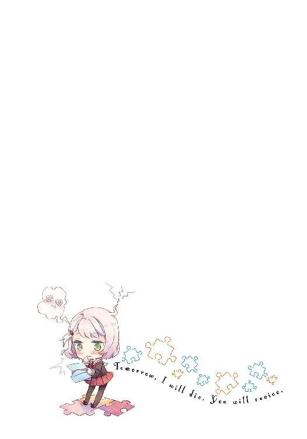